import openeo
connection = openeo.connect("openeo.dataspace.copernicus.eu").authenticate_oidc()
Authenticated using refresh token.
aoi = {
"type": "Polygon",
# Paste koordinat yang didapat
"coordinates":
[
[
117.58812764552601,
4.133326974398287
],
[
117.75161907303544,
4.133326974398287
],
[
117.75161907303544,
3.971832859595736
],
[
117.58812764552601,
3.971832859595736
],
[
117.58812764552601,
4.133326974398287
]
]
}
s5post = connection.load_collection(
"SENTINEL_5P_L2",
temporal_extent=["2025-08-31", "2026-08-31"],
spatial_extent={
"west": 117.58812764552601,
"south": 3.971832859595736,
"east": 117.75161907303544,
"north": 4.133326974398287
},
# Disesuaikan dengan data yang dibutuhkan
bands=["CO"],
)
# Agregasi harian agar tidak ada lebih dari satu data per hari
s5p_co_daily = s5post.aggregate_temporal_period(reducer="mean", period="day")
# Agregasi spasial untuk menghasilkan rata-rata time series per AOI
s5p_co_aoi = s5p_co_daily.aggregate_spatial(reducer="mean", geometries=aoi)
job = s5post.execute_batch(title="NO2 in Nunukan", outputfile="NO2DiNunukan.nc")
0:00:00 Job 'j-26101013184743ee9e1f5e6eb1c2d245': send 'start'
0:00:03 Job 'j-26101013184743ee9e1f5e6eb1c2d245': queued (progress 0%)
0:00:08 Job 'j-26101013184743ee9e1f5e6eb1c2d245': queued (progress 0%)
0:00:15 Job 'j-26101013184743ee9e1f5e6eb1c2d245': queued (progress 0%)
0:00:23 Job 'j-26101013184743ee9e1f5e6eb1c2d245': running (progress N/A)
job = s5post.execute_batch(title="CO in Nunukan", outputfile="CODiNunukan.nc")
0:00:00 Job 'j-26091112515446bab4e004674262f269': send 'start'
0:00:05 Job 'j-26091112515446bab4e004674262f269': queued (progress 0%)
0:00:10 Job 'j-26091112515446bab4e004674262f269': queued (progress 0%)
0:00:17 Job 'j-26091112515446bab4e004674262f269': queued (progress 0%)
0:00:25 Job 'j-26091112515446bab4e004674262f269': queued (progress 0%)
0:00:35 Job 'j-26091112515446bab4e004674262f269': queued (progress 0%)
0:00:48 Job 'j-26091112515446bab4e004674262f269': queued (progress 0%)
0:01:03 Job 'j-26091112515446bab4e004674262f269': running (progress N/A)
0:01:23 Job 'j-26091112515446bab4e004674262f269': running (progress N/A)
0:01:47 Job 'j-26091112515446bab4e004674262f269': running (progress N/A)
0:02:17 Job 'j-26091112515446bab4e004674262f269': running (progress N/A)
0:02:55 Job 'j-26091112515446bab4e004674262f269': running (progress N/A)
0:03:42 Job 'j-26091112515446bab4e004674262f269': finished (progress 100%)
job = s5post.execute_batch(title="SO2 in Nunukan", outputfile="SO2DiNunukan.nc")
0:00:00 Job 'j-2609111240534818ae5435cdfce9c8a4': send 'start'
0:00:06 Job 'j-2609111240534818ae5435cdfce9c8a4': queued (progress 0%)
0:00:11 Job 'j-2609111240534818ae5435cdfce9c8a4': queued (progress 0%)
0:00:18 Job 'j-2609111240534818ae5435cdfce9c8a4': queued (progress 0%)
0:00:26 Job 'j-2609111240534818ae5435cdfce9c8a4': queued (progress 0%)
0:00:36 Job 'j-2609111240534818ae5435cdfce9c8a4': queued (progress 0%)
0:00:49 Job 'j-2609111240534818ae5435cdfce9c8a4': queued (progress 0%)
0:01:04 Job 'j-2609111240534818ae5435cdfce9c8a4': queued (progress 0%)
0:01:24 Job 'j-2609111240534818ae5435cdfce9c8a4': queued (progress 0%)
0:01:48 Job 'j-2609111240534818ae5435cdfce9c8a4': running (progress N/A)
0:02:18 Job 'j-2609111240534818ae5435cdfce9c8a4': running (progress N/A)
0:02:56 Job 'j-2609111240534818ae5435cdfce9c8a4': running (progress N/A)
0:03:43 Job 'j-2609111240534818ae5435cdfce9c8a4': running (progress N/A)
0:04:42 Job 'j-2609111240534818ae5435cdfce9c8a4': finished (progress 100%)
import numpy as np
import pandas as pd
import netCDF4
file_path = "NO2DiNunukan.nc"
ds = netCDF4.Dataset(file_path)
# Ambil NO2 sebagai masked array, lalu ubah data kosong (masked) jadi NaN
no2 = ds.variables["NO2"][:]
no2 = np.ma.filled(no2, np.nan)
# Ambil Time
time = ds.variables["t"][:]
# Konversi waktu ke format tanggal
try:
time_units = ds.variables["t"].units
dates = netCDF4.num2date(time, units=time_units)
except Exception:
dates = time # fallback jika tidak ada units
new_dates = []
new_no2 = []
for i in range(len(dates)):
new_date = dates[i].strftime('%Y-%m-%d')
new_dates.append(new_date)
daily_data = no2[i]
if np.all(np.isnan(daily_data)):
# Kalau seluruh data hari itu kosong, hasilnya NaN
new_no2.append(np.nan)
else:
# np.nanmean mengabaikan NaN saat menghitung rata-rata
new_no2.append(np.nanmean(daily_data))
df = pd.DataFrame({
"date": new_dates,
"NO2": new_no2
})
# Simpan ke CSV (NaN otomatis ditulis sebagai kosong/"" oleh pandas)
df.to_csv("NO2_Nunukan_timeseries.csv", index=False)
import numpy as np
import pandas as pd
import netCDF4
file_path = "SO2DiNunukan.nc"
ds = netCDF4.Dataset(file_path)
# Ambil SO2 sebagai masked array, lalu ubah data kosong (masked) jadi NaN
so2 = ds.variables["SO2"][:]
so2 = np.ma.filled(so2, np.nan)
# Ambil Time
time = ds.variables["t"][:]
# Konversi waktu ke format tanggal
try:
time_units = ds.variables["t"].units
dates = netCDF4.num2date(time, units=time_units)
except Exception:
dates = time # fallback jika tidak ada units
new_dates = []
new_so2 = []
for i in range(len(dates)):
new_date = dates[i].strftime('%Y-%m-%d')
new_dates.append(new_date)
daily_data = so2[i]
if np.all(np.isnan(daily_data)):
# Kalau seluruh data hari itu kosong, hasilnya NaN
new_so2.append(np.nan)
else:
# np.nanmean mengabaikan NaN saat menghitung rata-rata
new_so2.append(np.nanmean(daily_data))
df = pd.DataFrame({
"date": new_dates,
"SO2": new_so2
})
# Simpan ke CSV (NaN otomatis ditulis sebagai kosong/"" oleh pandas)
df.to_csv("SO2_Nunukan_timeseries.csv", index=False)
import numpy as np
import pandas as pd
import netCDF4
file_path = "CODiNunukan.nc"
ds = netCDF4.Dataset(file_path)
# Ambil CO sebagai masked array, lalu ubah data kosong (masked) jadi NaN
co = ds.variables["CO"][:]
co = np.ma.filled(co, np.nan)
# Ambil Time
time = ds.variables["t"][:]
# Konversi waktu ke format tanggal
try:
time_units = ds.variables["t"].units
dates = netCDF4.num2date(time, units=time_units)
except Exception:
dates = time # fallback jika tidak ada units
new_dates = []
new_co = []
for i in range(len(dates)):
new_date = dates[i].strftime('%Y-%m-%d')
new_dates.append(new_date)
daily_data = co[i]
if np.all(np.isnan(daily_data)):
# Kalau seluruh data hari itu kosong, hasilnya NaN
new_co.append(np.nan)
else:
# np.nanmean mengabaikan NaN saat menghitung rata-rata
new_co.append(np.nanmean(daily_data))
df = pd.DataFrame({
"date": new_dates,
"CO": new_co
})
# Simpan ke CSV (NaN otomatis ditulis sebagai kosong/"" oleh pandas)
df.to_csv("CO_Nunukan_timeseries.csv", index=False)
import pandas as pd
import netCDF4
import numpy as np
import matplotlib.pyplot as plt
# --- 1. PROSES EKSTRAKSI DATA ---
file_path = "SO2DiNunukan.nc"
ds = netCDF4.Dataset(file_path)
# Ambil SO2 dan Time
so2 = ds.variables["SO2"][:]
time = ds.variables["t"][:]
# Konversi waktu ke format tanggal
try:
time_units = ds.variables["t"].units
dates = netCDF4.num2date(time, units=time_units)
except Exception:
dates = time # fallback jika tidak ada units
new_dates = []
new_so2 = [] # Ubah nama variabel agar konsisten
for i in range(len(dates)):
new_date = dates[i].strftime('%Y-%m-%d')
new_dates.append(new_date)
# Ganti no2[i] menjadi so2[i]
new_so2.append(np.mean(so2[i]))
# Buat DataFrame dan simpan ke CSV
df = pd.DataFrame({
"date": new_dates,
"SO2": new_so2
})
df.to_csv("SO2_Nunukan_timeseries.csv", index=False)
# --- 2. PROSES PEMBUATAN GRAFIK ---
plt.figure(figsize=(12, 5)) # Diperlebar agar tanggal tidak terlalu berdempetan
# Plot data tanggal di sumbu X dan nilai SO2 di sumbu Y
plt.plot(df["date"], df["SO2"], label="SO2 Aktual", color="orange", marker=".", linewidth=1.5)
plt.title("Time Series Konsentrasi SO2 di Kabupaten Nunukan")
plt.xlabel("Tanggal")
plt.ylabel("Nilai SO2")
# Merotasi label tanggal di sumbu X agar mudah dibaca dan tidak bertumpuk
plt.xticks(rotation=45)
plt.tight_layout() # Memastikan label bawah tidak terpotong saat ditampilkan
plt.legend()
plt.show()
c:\Users\Admin\AppData\Local\Programs\Python\Python39\lib\site-packages\matplotlib\cbook.py:1398: UserWarning: Warning: converting a masked element to nan.
return np.asarray(x, float)
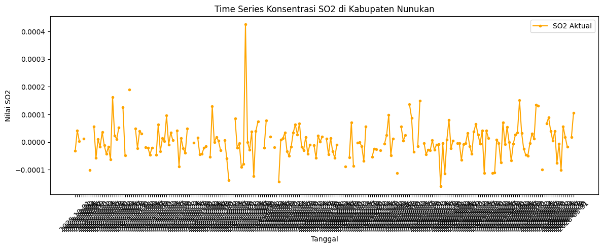
import pandas as pd
import netCDF4
import numpy as np
import matplotlib.pyplot as plt
# --- 1. PROSES EKSTRAKSI DATA ---
file_path = "NO2DiNunukan.nc"
ds = netCDF4.Dataset(file_path)
# Ambil NO2 dan Time
no2 = ds.variables["NO2"][:]
time = ds.variables["t"][:]
# Konversi waktu ke format tanggal
try:
time_units = ds.variables["t"].units
dates = netCDF4.num2date(time, units=time_units)
except Exception:
dates = time # fallback jika tidak ada units
new_dates = []
new_no2 = [] # Ubah nama variabel agar konsisten
for i in range(len(dates)):
new_date = dates[i].strftime('%Y-%m-%d')
new_dates.append(new_date)
# Ganti no2[i] menjadi so2[i]
new_no2.append(np.mean(no2[i]))
# Buat DataFrame dan simpan ke CSV
df = pd.DataFrame({
"date": new_dates,
"NO2": new_no2
})
df.to_csv("NO2_Nunukan_timeseries.csv", index=False)
# --- 2. PROSES PEMBUATAN GRAFIK ---
plt.figure(figsize=(12, 5)) # Diperlebar agar tanggal tidak terlalu berdempetan
# Plot data tanggal di sumbu X dan nilai NO2 di sumbu Y
plt.plot(df["date"], df["NO2"], label="NO2 Aktual", color="orange", marker=".", linewidth=1.5)
plt.title("Time Series Konsentrasi NO2 di Kabupaten Nunukan")
plt.xlabel("Tanggal")
plt.ylabel("Nilai NO2")
# Merotasi label tanggal di sumbu X agar mudah dibaca dan tidak bertumpuk
plt.xticks(rotation=45)
plt.tight_layout() # Memastikan label bawah tidak terpotong saat ditampilkan
plt.legend()
plt.show()
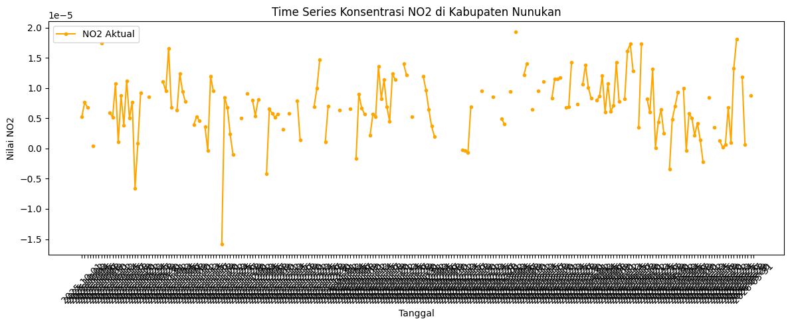
import pandas as pd
import netCDF4
import numpy as np
import matplotlib.pyplot as plt
# --- 1. PROSES EKSTRAKSI DATA ---
file_path = "CODiNunukan.nc"
ds = netCDF4.Dataset(file_path)
# Ambil COD dan Time
co = ds.variables["CO"][:]
time = ds.variables["t"][:]
# Konversi waktu ke format tanggal
try:
time_units = ds.variables["t"].units
dates = netCDF4.num2date(time, units=time_units)
except Exception:
dates = time # fallback jika tidak ada units
new_dates = []
new_co = [] # Ubah nama variabel agar konsisten
for i in range(len(dates)):
new_date = dates[i].strftime('%Y-%m-%d')
new_dates.append(new_date)
# Ganti no2[i] menjadi so2[i]
new_co.append(np.mean(co[i]))
# Buat DataFrame dan simpan ke CSV
df = pd.DataFrame({
"date": new_dates,
"CO": new_co
})
df.to_csv("CO_Nunukan_timeseries.csv", index=False)
# --- 2. PROSES PEMBUATAN GRAFIK ---
plt.figure(figsize=(12, 5)) # Diperlebar agar tanggal tidak terlalu berdempetan
# Plot data tanggal di sumbu X dan nilai CO di sumbu Y
plt.plot(df["date"], df["CO"], label="CO Aktual", color="orange", marker=".", linewidth=1.5)
plt.title("Time Series Konsentrasi CO di Kabupaten Nunukan")
plt.xlabel("Tanggal")
plt.ylabel("Nilai CO")
# Merotasi label tanggal di sumbu X agar mudah dibaca dan tidak bertumpuk
plt.xticks(rotation=45)
plt.tight_layout() # Memastikan label bawah tidak terpotong saat ditampilkan
plt.legend()
plt.show()
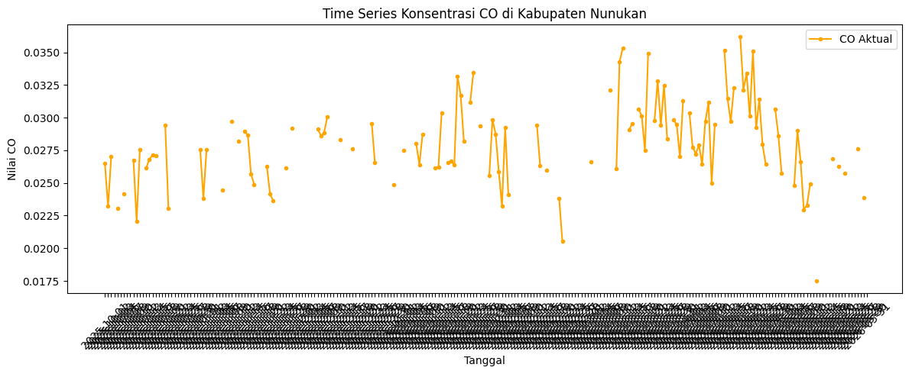
import pandas as pd
df = pd.read_csv("CO_Nunukan_timeseries.csv")
df['date'] = pd.to_datetime(df['date'])
# Buat rentang tanggal lengkap
start_date = "2025-08-31"
end_date = "2026-08-31"
full_range = pd.date_range(start=start_date, end=end_date, freq='D')
# Cek tanggal yang hilang
missing_dates = full_range.difference(df['date'])
print(f"Jumlah hari missing: {len(missing_dates)}")
print("Daftar tanggal missing:")
print(missing_dates)
Jumlah hari missing: 3
Daftar tanggal missing:
DatetimeIndex(['2025-10-06', '2026-05-17', '2026-08-31'], dtype='datetime64[ns]', freq=None)
import pandas as pd
df = pd.read_csv("SO2_Nunukan_Timeseries.csv")
df['date'] = pd.to_datetime(df['date'])
# Buat rentang tanggal lengkap
start_date = "2025-08-31"
end_date = "2026-08-31"
full_range = pd.date_range(start=start_date, end=end_date, freq='D')
# Cek tanggal yang hilang
missing_dates = full_range.difference(df['date'])
print(f"Jumlah hari missing: {len(missing_dates)}")
print("Daftar tanggal missing:")
print(missing_dates)
Jumlah hari missing: 16
Daftar tanggal missing:
DatetimeIndex(['2025-09-20', '2025-09-30', '2025-10-08', '2025-11-23',
'2025-11-24', '2025-11-25', '2025-11-26', '2025-11-27',
'2025-11-28', '2025-11-29', '2025-11-30', '2025-12-01',
'2025-12-02', '2026-04-08', '2026-07-06', '2026-08-31'],
dtype='datetime64[ns]', freq=None)
import pandas as pd
df = pd.read_csv("NO2_Nunukan_Timeseries.csv")
df['date'] = pd.to_datetime(df['date'])
# Buat rentang tanggal lengkap
start_date = "2025-08-31"
end_date = "2026-08-31"
full_range = pd.date_range(start=start_date, end=end_date, freq='D')
# Cek tanggal yang hilang
missing_dates = full_range.difference(df['date'])
print(f"Jumlah hari missing: {len(missing_dates)}")
print("Daftar tanggal missing:")
print(missing_dates)
Jumlah hari missing: 4
Daftar tanggal missing:
DatetimeIndex(['2025-10-26', '2026-05-17', '2026-06-23', '2026-08-31'], dtype='datetime64[ns]', freq=None)
df = pd.read_csv("CO_Nunukan_Timeseries.csv")
missing_value = df['CO'].isna().sum()
print(missing_value)
166
df = pd.read_csv("NO2_Nunukan_Timeseries.csv")
missing_value = df['NO2'].isna().sum()
print(missing_value)
124
df = pd.read_csv("SO2_Nunukan_Timeseries.csv")
missing_value = df['SO2'].isna().sum()
print(missing_value)
55
import pandas as pd
import matplotlib.pyplot as plt
from sklearn.ensemble import IsolationForest
df = pd.read_csv("CO_Nunukan_Timeseries_imputed.csv")
df_clean = df.dropna(subset=['CO']).copy()
df_clean['date'] = pd.to_datetime(df_clean['date'])
df_clean = df_clean.sort_values('date').reset_index(drop=True)
model = IsolationForest(contamination=0.05, random_state=42) # contamination 0.05 = 5%
pred = model.fit_predict(df_clean[['CO']])
# Tambahkan hasil prediksi ke dataframe
df_clean['anomaly'] = pred # -1 = outlier, 1 = normal
# Nilai -1 merepresentasikan outlier
outliers_if = df_clean[df_clean['anomaly'] == -1]
jumlah_outlier = len(outliers_if)
print("Jumlah outlier:", jumlah_outlier)
print(outliers_if[['date', 'CO']].head())
Jumlah outlier: 19
date CO
176 2026-02-23 0.020537
256 2026-05-14 0.017498
257 2026-05-15 0.019061
258 2026-05-16 0.020624
301 2026-06-28 0.019963
# Visualisasi
plt.figure(figsize=(15, 5))
plt.plot(df_clean['date'], df_clean['CO'], label="CO", linewidth=1)
plt.scatter(outliers_if['date'], outliers_if['CO'],
color='red', marker='o', label="Outliers (Isolation Forest)")
plt.title("Deteksi Outlier Data CO (Metode Isolation Forest)")
plt.xlabel("Tanggal")
plt.ylabel("Kadar CO")
plt.legend()
plt.tight_layout()
plt.xticks(
ticks=[df_clean['date'].iloc[0], df_clean['date'].iloc[-1]],
labels=[df_clean['date'].iloc[0].strftime('%Y-%m-%d'),
df_clean['date'].iloc[-1].strftime('%Y-%m-%d')]
)
plt.show()
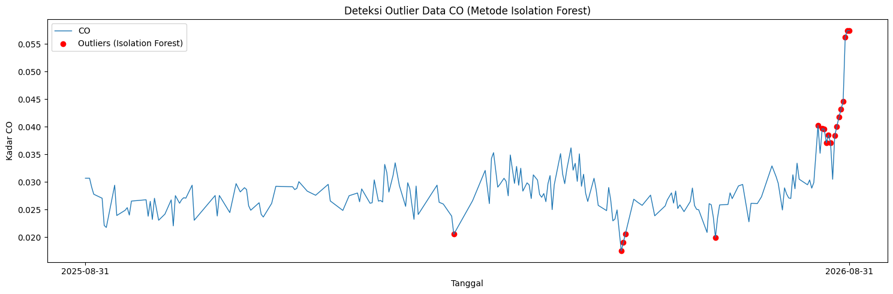
import pandas as pd
import matplotlib.pyplot as plt
from sklearn.ensemble import IsolationForest
df = pd.read_csv("SO2_Nunukan_Timeseries_imputed.csv")
df_clean = df.dropna(subset=['SO2']).copy()
df_clean['date'] = pd.to_datetime(df_clean['date'])
df_clean = df_clean.sort_values('date').reset_index(drop=True)
model = IsolationForest(contamination=0.05, random_state=42) # contamination 0.05 = 5%
pred = model.fit_predict(df_clean[['SO2']])
# Tambahkan hasil prediksi ke dataframe
df_clean['anomaly'] = pred # -1 = outlier, 1 = normal
# Nilai -1 merepresentasikan outlier
outliers_if = df_clean[df_clean['anomaly'] == -1]
jumlah_outlier = len(outliers_if)
print("Jumlah outlier:", jumlah_outlier)
print(outliers_if[['date', 'SO2']].head())
Jumlah outlier: 19
date SO2
8 2025-09-08 -0.000223
16 2025-09-16 0.000154
17 2025-09-17 0.000168
18 2025-09-18 0.000182
50 2025-10-20 0.000162
# Visualisasi
plt.figure(figsize=(15, 5))
plt.plot(df_clean['date'], df_clean['SO2'], label="SO2", linewidth=1)
plt.scatter(outliers_if['date'], outliers_if['SO2'],
color='red', marker='o', label="Outliers (Isolation Forest)")
plt.title("Deteksi Outlier Data SO2 (Metode Isolation Forest)")
plt.xlabel("Tanggal")
plt.ylabel("Kadar SO2")
plt.legend()
plt.tight_layout()
plt.xticks(
ticks=[df_clean['date'].iloc[0], df_clean['date'].iloc[-1]],
labels=[df_clean['date'].iloc[0].strftime('%Y-%m-%d'),
df_clean['date'].iloc[-1].strftime('%Y-%m-%d')]
)
plt.show()
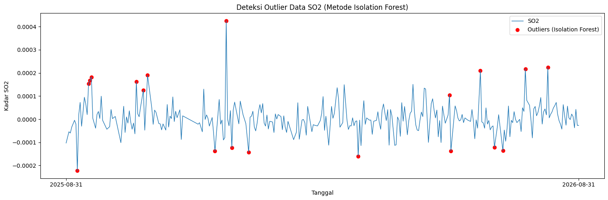
import pandas as pd
import matplotlib.pyplot as plt
from sklearn.ensemble import IsolationForest
df = pd.read_csv("NO2_Nunukan_Timeseries_imputed.csv")
df_clean = df.dropna(subset=['NO2']).copy()
df_clean['date'] = pd.to_datetime(df_clean['date'])
df_clean = df_clean.sort_values('date').reset_index(drop=True)
model = IsolationForest(contamination=0.05, random_state=42) # contamination 0.05 = 5%
pred = model.fit_predict(df_clean[['NO2']])
# Tambahkan hasil prediksi ke dataframe
df_clean['anomaly'] = pred # -1 = outlier, 1 = normal
# Nilai -1 merepresentasikan outlier
outliers_if = df_clean[df_clean['anomaly'] == -1]
jumlah_outlier = len(outliers_if)
print("Jumlah outlier:", jumlah_outlier)
print(outliers_if[['date', 'NO2']].head())
Jumlah outlier: 19
date NO2
4 2025-09-04 -0.000002
38 2025-10-08 0.000017
50 2025-10-20 -0.000007
63 2025-11-02 0.000017
81 2025-11-20 -0.000007
# Visualisasi
plt.figure(figsize=(15, 5))
plt.plot(df_clean['date'], df_clean['NO2'], label="NO2", linewidth=1)
plt.scatter(outliers_if['date'], outliers_if['NO2'],
color='red', marker='o', label="Outliers (Isolation Forest)")
plt.title("Deteksi Outlier Data NO2 (Metode Isolation Forest)")
plt.xlabel("Tanggal")
plt.ylabel("Kadar NO2")
plt.legend()
plt.tight_layout()
plt.xticks(
ticks=[df_clean['date'].iloc[0], df_clean['date'].iloc[-1]],
labels=[df_clean['date'].iloc[0].strftime('%Y-%m-%d'),
df_clean['date'].iloc[-1].strftime('%Y-%m-%d')]
)
plt.show()
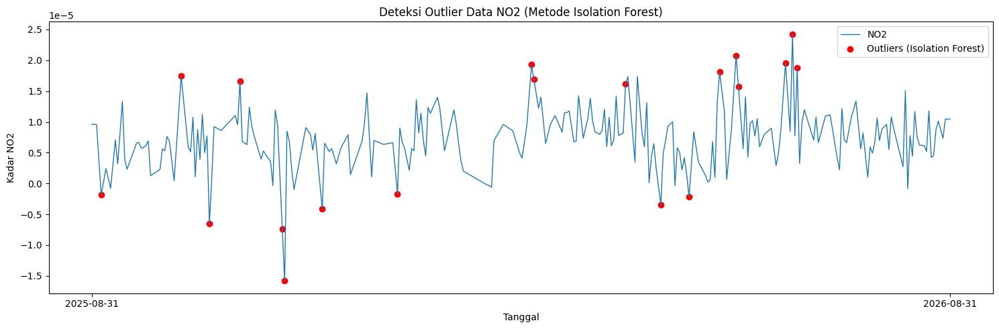
import pandas as pd
df = pd.read_csv("SO2_Nunukan_Timeseries.csv")
df['date'] = pd.to_datetime(df['date'])
# Buat rentang tanggal lengkap
start_date = "2025-08-31"
end_date = "2026-08-31"
full_range = pd.date_range(start=start_date, end=end_date, freq='D')
# Reindex ke rentang tanggal lengkap (tanggal yang hilang jadi NaN)
df = df.set_index('date').reindex(full_range)
df.index.name = 'date'
# Simpan info baris mana saja yang awalnya missing (buat dokumentasi/laporan)
missing_mask = df.isna().any(axis=1)
print(f"Jumlah hari missing sebelum imputasi: {missing_mask.sum()}")
# --- Imputasi ---
# Kolom numerik yang mau diimputasi (sesuaikan dengan nama kolom asli, misal 'SO2', 'CO', 'NO2', dst)
numeric_cols = df.select_dtypes(include='number').columns
# 1. Interpolasi linear berbasis waktu untuk gap di tengah data
df[numeric_cols] = df[numeric_cols].interpolate(method='time', limit_direction='both')
# 2. Fallback: kalau masih ada NaN di ujung deret (misal tanggal terakhir 31 Agu 2026
# tidak punya data sesudahnya untuk diinterpolasi), isi dengan forward-fill lalu backward-fill
df[numeric_cols] = df[numeric_cols].ffill().bfill()
# Cek ulang missing value
print(f"Jumlah hari missing setelah imputasi: {df[numeric_cols].isna().sum().sum()}")
# Reset index biar kolom 'date' kembali jadi kolom biasa
df = df.reset_index()
# Simpan hasil
df.to_csv("SO2_Nunukan_Timeseries_imputed.csv", index=False)
print("Selesai. File disimpan sebagai SO2_Nunukan_Timeseries_imputed.csv")
Jumlah hari missing sebelum imputasi: 71
Jumlah hari missing setelah imputasi: 0
Selesai. File disimpan sebagai SO2_Nunukan_Timeseries_imputed.csv
import pandas as pd
df = pd.read_csv("NO2_Nunukan_Timeseries.csv")
df['date'] = pd.to_datetime(df['date'])
# Buat rentang tanggal lengkap
start_date = "2025-08-31"
end_date = "2026-08-31"
full_range = pd.date_range(start=start_date, end=end_date, freq='D')
# Reindex ke rentang tanggal lengkap (tanggal yang hilang jadi NaN)
df = df.set_index('date').reindex(full_range)
df.index.name = 'date'
# Simpan info baris mana saja yang awalnya missing (buat dokumentasi/laporan)
missing_mask = df.isna().any(axis=1)
print(f"Jumlah hari missing sebelum imputasi: {missing_mask.sum()}")
# --- Imputasi ---
# Kolom numerik yang mau diimputasi (sesuaikan dengan nama kolom asli, misal 'SO2', 'CO', 'NO2', dst)
numeric_cols = df.select_dtypes(include='number').columns
# 1. Interpolasi linear berbasis waktu untuk gap di tengah data
df[numeric_cols] = df[numeric_cols].interpolate(method='time', limit_direction='both')
# 2. Fallback: kalau masih ada NaN di ujung deret (misal tanggal terakhir 31 Agu 2026
# tidak punya data sesudahnya untuk diinterpolasi), isi dengan forward-fill lalu backward-fill
df[numeric_cols] = df[numeric_cols].ffill().bfill()
# Cek ulang missing value
print(f"Jumlah hari missing setelah imputasi: {df[numeric_cols].isna().sum().sum()}")
# Reset index biar kolom 'date' kembali jadi kolom biasa
df = df.reset_index()
# Simpan hasil
df.to_csv("NO2_Nunukan_Timeseries_imputed.csv", index=False)
print("Selesai. File disimpan sebagai NO2_Nunukan_Timeseries_imputed.csv")
Jumlah hari missing sebelum imputasi: 128
Jumlah hari missing setelah imputasi: 0
Selesai. File disimpan sebagai NO2_Nunukan_Timeseries_imputed.csv
import pandas as pd
df = pd.read_csv("CO_Nunukan_Timeseries.csv")
df['date'] = pd.to_datetime(df['date'])
# Buat rentang tanggal lengkap
start_date = "2025-08-31"
end_date = "2026-08-31"
full_range = pd.date_range(start=start_date, end=end_date, freq='D')
# Reindex ke rentang tanggal lengkap (tanggal yang hilang jadi NaN)
df = df.set_index('date').reindex(full_range)
df.index.name = 'date'
# Simpan info baris mana saja yang awalnya missing (buat dokumentasi/laporan)
missing_mask = df.isna().any(axis=1)
print(f"Jumlah hari missing sebelum imputasi: {missing_mask.sum()}")
# --- Imputasi ---
# Kolom numerik yang mau diimputasi (sesuaikan dengan nama kolom asli, misal 'SO2', 'CO', 'NO2', dst)
numeric_cols = df.select_dtypes(include='number').columns
# 1. Interpolasi linear berbasis waktu untuk gap di tengah data
df[numeric_cols] = df[numeric_cols].interpolate(method='time', limit_direction='both')
# 2. Fallback: kalau masih ada NaN di ujung deret (misal tanggal terakhir 31 Agu 2026
# tidak punya data sesudahnya untuk diinterpolasi), isi dengan forward-fill lalu backward-fill
df[numeric_cols] = df[numeric_cols].ffill().bfill()
# Cek ulang missing value
print(f"Jumlah hari missing setelah imputasi: {df[numeric_cols].isna().sum().sum()}")
# Reset index biar kolom 'date' kembali jadi kolom biasa
df = df.reset_index()
# Simpan hasil
df.to_csv("CO_Nunukan_Timeseries_imputed.csv", index=False)
print("Selesai. File disimpan sebagai CO_Nunukan_Timeseries_imputed.csv")
Jumlah hari missing sebelum imputasi: 169
Jumlah hari missing setelah imputasi: 0
Selesai. File disimpan sebagai CO_Nunukan_Timeseries_imputed.csv
import pandas as pd
df_co = pd.read_csv("CO_Nunukan_Timeseries.csv")
df_no2 = pd.read_csv("NO2_Nunukan_Timeseries.csv")
df_so2 = pd.read_csv("SO2_Nunukan_Timeseries.csv")
dataframe_merged = pd.DataFrame({
"date": df_co['date'],
"CO": df_co['CO'],
"NO2": df_no2['NO2'],
"SO2": df_so2['SO2']
})
dataframe_merged.to_csv("Polutan_Nunukan.csv", index=False)
import pandas as pd
import numpy as np
import matplotlib.pyplot as plt
from sklearn.ensemble import IsolationForest
# 1. Load data
df = pd.read_csv("NO2_Nunukan_Timeseries_imputed.csv")
df_clean = df.dropna(subset=['NO2']).copy()
df_clean['date'] = pd.to_datetime(df_clean['date'])
df_clean = df_clean.sort_values('date').reset_index(drop=True)
# 2. Deteksi outlier dengan Isolation Forest
model = IsolationForest(contamination=0.05, random_state=42)
pred = model.fit_predict(df_clean[['NO2']])
df_clean['anomaly'] = pred # -1 = outlier, 1 = normal
outliers_if = df_clean[df_clean['anomaly'] == -1]
print("Jumlah outlier:", len(outliers_if))
print(outliers_if[['date', 'NO2']].head())
# 3. PERBAIKAN OUTLIER: ganti nilai outlier jadi NaN, lalu interpolasi
df_fixed = df_clean.copy()
df_fixed.loc[df_fixed['anomaly'] == -1, 'NO2'] = np.nan
df_fixed['NO2'] = df_fixed['NO2'].interpolate(method='linear').ffill().bfill()
# 4. Visualisasi sebelum vs sesudah
fig, axes = plt.subplots(2, 1, figsize=(15, 8), sharex=True)
axes[0].plot(df_clean['date'], df_clean['NO2'], label="NO2 (asli)", linewidth=1)
axes[0].scatter(outliers_if['date'], outliers_if['NO2'],
color='red', marker='o', label="Outlier (Isolation Forest)")
axes[0].set_title("Sebelum Perbaikan - Deteksi Outlier NO2")
axes[0].set_ylabel("Kadar NO2")
axes[0].legend()
axes[1].plot(df_fixed['date'], df_fixed['NO2'], color='green', linewidth=1,
label="NO2 (setelah outlier diganti & diinterpolasi)")
axes[1].set_title("Sesudah Perbaikan Outlier")
axes[1].set_xlabel("Tanggal")
axes[1].set_ylabel("Kadar NO2")
axes[1].legend()
plt.tight_layout()
plt.show()
# 5. Simpan hasil
df_fixed[['date', 'NO2']].to_csv("NO2_Nunukan_Timeseries_fixed.csv", index=False)
Jumlah outlier: 19
date NO2
4 2025-09-04 -0.000002
38 2025-10-08 0.000017
50 2025-10-20 -0.000007
63 2025-11-02 0.000017
81 2025-11-20 -0.000007
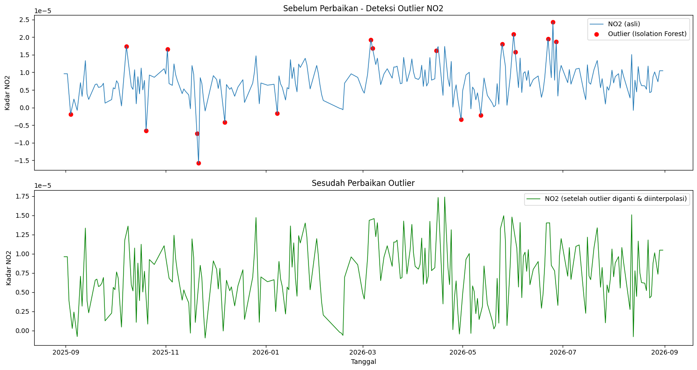
import pandas as pd
import numpy as np
import matplotlib.pyplot as plt
from sklearn.ensemble import IsolationForest
# 1. Load data
df = pd.read_csv("SO2_Nunukan_Timeseries_imputed.csv")
df_clean = df.dropna(subset=['SO2']).copy()
df_clean['date'] = pd.to_datetime(df_clean['date'])
df_clean = df_clean.sort_values('date').reset_index(drop=True)
# 2. Deteksi outlier dengan Isolation Forest
model = IsolationForest(contamination=0.05, random_state=42)
pred = model.fit_predict(df_clean[['SO2']])
df_clean['anomaly'] = pred # -1 = outlier, 1 = normal
outliers_if = df_clean[df_clean['anomaly'] == -1]
print("Jumlah outlier:", len(outliers_if))
print(outliers_if[['date', 'SO2']].head())
# 3. PERBAIKAN OUTLIER: ganti nilai outlier jadi NaN, lalu interpolasi
df_fixed = df_clean.copy()
df_fixed.loc[df_fixed['anomaly'] == -1, 'SO2'] = np.nan
df_fixed['SO2'] = df_fixed['SO2'].interpolate(method='linear').ffill().bfill()
# 4. Visualisasi sebelum vs sesudah
fig, axes = plt.subplots(2, 1, figsize=(15, 8), sharex=True)
axes[0].plot(df_clean['date'], df_clean['SO2'], label="SO2 (asli)", linewidth=1)
axes[0].scatter(outliers_if['date'], outliers_if['SO2'],
color='red', marker='o', label="Outlier (Isolation Forest)")
axes[0].set_title("Sebelum Perbaikan - Deteksi Outlier SO2")
axes[0].set_ylabel("Kadar SO2")
axes[0].legend()
axes[1].plot(df_fixed['date'], df_fixed['SO2'], color='green', linewidth=1,
label="SO2 (setelah outlier diganti & diinterpolasi)")
axes[1].set_title("Sesudah Perbaikan Outlier")
axes[1].set_xlabel("Tanggal")
axes[1].set_ylabel("Kadar SO2")
axes[1].legend()
plt.tight_layout()
plt.show()
# 5. Simpan hasil
df_fixed[['date', 'SO2']].to_csv("SO2_Nunukan_Timeseries_fixed.csv", index=False)
Jumlah outlier: 19
date SO2
8 2025-09-08 -0.000223
16 2025-09-16 0.000154
17 2025-09-17 0.000168
18 2025-09-18 0.000182
50 2025-10-20 0.000162
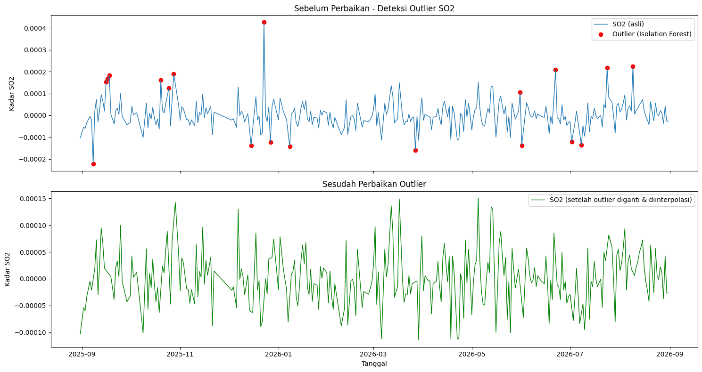
import pandas as pd
import numpy as np
import matplotlib.pyplot as plt
from sklearn.ensemble import IsolationForest
# 1. Load data
df = pd.read_csv("CO_Nunukan_Timeseries_imputed.csv")
df_clean = df.dropna(subset=['CO']).copy()
df_clean['date'] = pd.to_datetime(df_clean['date'])
df_clean = df_clean.sort_values('date').reset_index(drop=True)
# 2. Deteksi outlier dengan Isolation Forest
model = IsolationForest(contamination=0.05, random_state=42)
pred = model.fit_predict(df_clean[['CO']])
df_clean['anomaly'] = pred # -1 = outlier, 1 = normal
outliers_if = df_clean[df_clean['anomaly'] == -1]
print("Jumlah outlier:", len(outliers_if))
print(outliers_if[['date', 'CO']].head())
# 3. PERBAIKAN OUTLIER: ganti nilai outlier jadi NaN, lalu interpolasi
df_fixed = df_clean.copy()
df_fixed.loc[df_fixed['anomaly'] == -1, 'CO'] = np.nan
df_fixed['CO'] = df_fixed['CO'].interpolate(method='linear').ffill().bfill()
# 4. Visualisasi sebelum vs sesudah
fig, axes = plt.subplots(2, 1, figsize=(15, 8), sharex=True)
axes[0].plot(df_clean['date'], df_clean['CO'], label="CO (asli)", linewidth=1)
axes[0].scatter(outliers_if['date'], outliers_if['CO'],
color='red', marker='o', label="Outlier (Isolation Forest)")
axes[0].set_title("Sebelum Perbaikan - Deteksi Outlier CO")
axes[0].set_ylabel("Kadar CO")
axes[0].legend()
axes[1].plot(df_fixed['date'], df_fixed['CO'], color='green', linewidth=1,
label="CO (setelah outlier diganti & diinterpolasi)")
axes[1].set_title("Sesudah Perbaikan Outlier")
axes[1].set_xlabel("Tanggal")
axes[1].set_ylabel("Kadar CO")
axes[1].legend()
plt.tight_layout()
plt.show()
# 5. Simpan hasil
df_fixed[['date', 'CO']].to_csv("CO_Nunukan_Timeseries_fixed.csv", index=False)
Jumlah outlier: 19
date CO
176 2026-02-23 0.020537
256 2026-05-14 0.017498
257 2026-05-15 0.019061
258 2026-05-16 0.020624
301 2026-06-28 0.019963
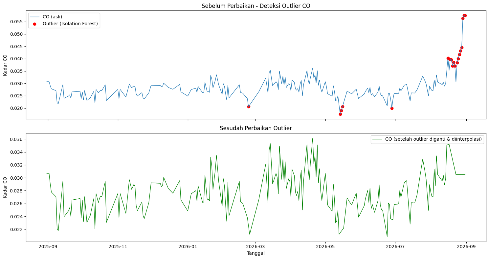
import pandas as pd
import numpy as np
import inspect
import tsfel.feature_extraction.features as tsfel_features
# ---------- 1. Muat dan bersihkan data ----------
df = pd.read_csv('CO_Nunukan_Timeseries_fixed.csv')
df['date'] = pd.to_datetime(df['date'])
df = df.sort_values('date').reset_index(drop=True)
target_pollutant = 'CO'
# --- FIX: paksa kolom target jadi numerik, nilai yang gagal dikonversi -> NaN ---
df[target_pollutant] = pd.to_numeric(df[target_pollutant], errors='coerce')
n_missing_before = df[target_pollutant].isna().sum()
print(f"Jumlah nilai non-numerik/kosong yang dikonversi jadi NaN: {n_missing_before}")
Q1 = df[target_pollutant].quantile(0.25)
Q3 = df[target_pollutant].quantile(0.75)
IQR = Q3 - Q1
lower_bound = Q1 - 1.5 * IQR
upper_bound = Q3 + 1.5 * IQR
df.loc[(df[target_pollutant] < lower_bound) | (df[target_pollutant] > upper_bound), target_pollutant] = np.nan
df_clean = df.set_index('date').interpolate(method='time').ffill().bfill()
fs = 1
signal_1d = df_clean[target_pollutant].astype(float).values
# ---------- 2. Daftar PERSIS fitur yang diminta ----------
FEATURE_LIST = """abs_energy auc autocorr average_power calc_centroid calc_max calc_mean
calc_median calc_min calc_std calc_var dfa distance ecdf ecdf_percentile ecdf_percentile_count
ecdf_slope entropy fundamental_frequency higuchi_fractal_dimension hist_mode human_range_energy
hurst_exponent interq_range kurtosis lempel_ziv lpcc max_frequency max_power_spectrum
maximum_fractal_length mean_abs_deviation mean_abs_diff mean_diff median_abs_deviation
median_abs_diff median_diff median_frequency mfcc mse negative_turning neighbourhood_peaks
petrosian_fractal_dimension pk_pk_distance positive_turning power_bandwidth rms skewness slope
spectral_centroid spectral_decrease spectral_distance spectral_entropy spectral_kurtosis
spectral_positive_turning spectral_roll_off spectral_roll_on spectral_skewness spectral_slope
spectral_spread spectral_variation spectrogram_mean_coeff sum_abs_diff wavelet_abs_mean
wavelet_energy wavelet_entropy wavelet_std wavelet_var zero_cross""".split()
print("Jumlah fitur yang diminta:", len(FEATURE_LIST))
def to_scalar(result):
if isinstance(result, dict) and "values" in result:
result = result["values"]
if isinstance(result, (list, tuple, np.ndarray)):
arr = np.asarray(result, dtype=float)
return float(np.nanmean(arr))
return float(result)
def extract_one(fn_name, signal, fs):
fn = getattr(tsfel_features, fn_name)
params = inspect.signature(fn).parameters
if "fs" in params:
result = fn(signal, fs)
else:
result = fn(signal)
return to_scalar(result)
row = {}
for fn_name in FEATURE_LIST:
row[fn_name] = extract_one(fn_name, signal_1d, fs)
extracted_features_final = pd.DataFrame([row])
print(f"Berhasil! Jumlah fitur yang dihasilkan untuk {target_pollutant}: {extracted_features_final.shape[1]}")
extracted_features_final.to_csv(f'{target_pollutant}_Nunukan_TSFEL.csv', index=False)
Jumlah nilai non-numerik/kosong yang dikonversi jadi NaN: 0
Jumlah fitur yang diminta: 68
Berhasil! Jumlah fitur yang dihasilkan untuk CO: 68
c:\Users\Admin\AppData\Local\Programs\Python\Python39\lib\site-packages\tsfel\feature_extraction\features_utils.py:534: RuntimeWarning: invalid value encountered in divide
rs = np.divide(r, s)
import pandas as pd
import matplotlib.pyplot as plt
from sklearn.cluster import KMeans
from sklearn.preprocessing import StandardScaler
CSV_PATH = "ekstraksi_fitur_co.csv"
KOLOM_NAMA = "nama"
KOLOM_FITUR = """abs_energy auc autocorr average_power calc_centroid calc_max calc_mean
calc_median calc_min calc_std calc_var dfa distance ecdf ecdf_percentile ecdf_percentile_count
ecdf_slope entropy fundamental_frequency higuchi_fractal_dimension hist_mode human_range_energy
hurst_exponent interq_range kurtosis lempel_ziv lpcc max_frequency max_power_spectrum
maximum_fractal_length mean_abs_deviation mean_abs_diff mean_diff median_abs_deviation
median_abs_diff median_diff median_frequency mfcc mse negative_turning neighbourhood_peaks
petrosian_fractal_dimension pk_pk_distance positive_turning power_bandwidth rms skewness slope
spectral_centroid spectral_decrease spectral_distance spectral_entropy spectral_kurtosis
spectral_positive_turning spectral_roll_off spectral_roll_on spectral_skewness spectral_slope
spectral_spread spectral_variation spectrogram_mean_coeff sum_abs_diff wavelet_abs_mean
wavelet_energy wavelet_entropy wavelet_std wavelet_var zero_cross""".split()
K = 3
GUNAKAN_SCALING = True
# 1. Baca data
df = pd.read_csv(CSV_PATH)
data = df.dropna(subset=KOLOM_FITUR).copy()
# 2. Standarisasi (opsional)
if GUNAKAN_SCALING:
X = StandardScaler().fit_transform(data[KOLOM_FITUR])
else:
X = data[KOLOM_FITUR].values
# 3. K-Means
kmeans = KMeans(n_clusters=K, random_state=42, n_init=10)
data["cluster"] = kmeans.fit_predict(X)
data["cluster_label"] = "cluster_" + data["cluster"].astype(str)
# 4. Hasil
print(f"Inertia: {kmeans.inertia_:.4f}")
print("\nJumlah data per cluster:")
print(data["cluster_label"].value_counts().sort_index())
# 5. Scatter plot: nama (sumbu X) vs cluster (sumbu Y)
label_cluster = [f"cluster_{i}" for i in range(K)]
y = data["cluster"]
x = range(len(data))
plt.figure(figsize=(14, 5))
plt.scatter(x, y, s=25, color="#6b8bd6")
plt.xticks(x, data[KOLOM_NAMA], rotation=90, fontsize=7)
plt.yticks(range(K), label_cluster)
plt.ylim(-0.5, K - 0.5)
plt.title("Scatter Plot", loc="left", fontweight="bold")
plt.xlabel("nama")
plt.ylabel("Cluster")
plt.grid(True, color="#eeeeee")
plt.tight_layout()
plt.show()
Inertia: 660.2141
Jumlah data per cluster:
cluster_label
cluster_0 1
cluster_1 35
cluster_2 1
Name: count, dtype: int64
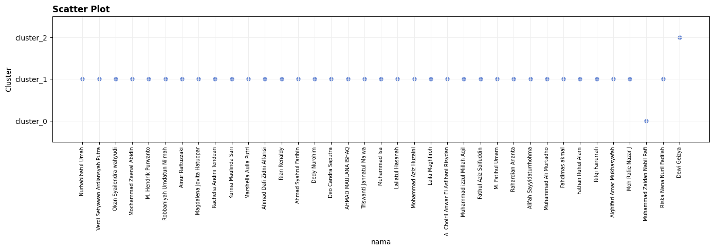
import pandas as pd
import matplotlib.pyplot as plt
from sklearn.cluster import KMeans
from sklearn.preprocessing import StandardScaler
CSV_PATH = "ekstraksi_fitur_co.csv"
KOLOM_NAMA = "nama"
KOLOM_FITUR = """abs_energy auc autocorr average_power calc_centroid calc_max calc_mean
calc_median calc_min calc_std calc_var dfa distance ecdf ecdf_percentile ecdf_percentile_count
ecdf_slope entropy fundamental_frequency higuchi_fractal_dimension hist_mode human_range_energy
hurst_exponent interq_range kurtosis lempel_ziv lpcc max_frequency max_power_spectrum
maximum_fractal_length mean_abs_deviation mean_abs_diff mean_diff median_abs_deviation
median_abs_diff median_diff median_frequency mfcc mse negative_turning neighbourhood_peaks
petrosian_fractal_dimension pk_pk_distance positive_turning power_bandwidth rms skewness slope
spectral_centroid spectral_decrease spectral_distance spectral_entropy spectral_kurtosis
spectral_positive_turning spectral_roll_off spectral_roll_on spectral_skewness spectral_slope
spectral_spread spectral_variation spectrogram_mean_coeff sum_abs_diff wavelet_abs_mean
wavelet_energy wavelet_entropy wavelet_std wavelet_var zero_cross""".split()
K = 5
GUNAKAN_SCALING = True
# 1. Baca data
df = pd.read_csv(CSV_PATH)
data = df.dropna(subset=KOLOM_FITUR).copy()
# 2. Standarisasi
if GUNAKAN_SCALING:
X = StandardScaler().fit_transform(data[KOLOM_FITUR])
else:
X = data[KOLOM_FITUR].values
# 3. K-Means
kmeans = KMeans(n_clusters=K, random_state=42, n_init=10)
data["cluster"] = kmeans.fit_predict(X)
data["cluster_label"] = "cluster_" + data["cluster"].astype(str)
# 4. Hasil
print(f"Inertia: {kmeans.inertia_:.4f}")
print("\nJumlah data per cluster:")
print(data["cluster_label"].value_counts().sort_index())
x
# 5. Scatter plot: nama (sumbu X) vs cluster (sumbu Y)
label_cluster = [f"cluster_{i}" for i in range(K)]
y = data["cluster"]
x = range(len(data))
plt.figure(figsize=(14, 5))
plt.scatter(x, y, s=25, color="#6b8bd6")
plt.xticks(x, data[KOLOM_NAMA], rotation=90, fontsize=7)
plt.yticks(range(K), label_cluster)
plt.ylim(-0.5, K - 0.5)
plt.title("Scatter Plot", loc="left", fontweight="bold")
plt.xlabel("nama")
plt.ylabel("Cluster")
plt.grid(True, color="#eeeeee")
plt.tight_layout()
plt.show()
Inertia: 413.8895
Jumlah data per cluster:
cluster_label
cluster_0 12
cluster_1 1
cluster_2 2
cluster_3 1
cluster_4 21
Name: count, dtype: int64
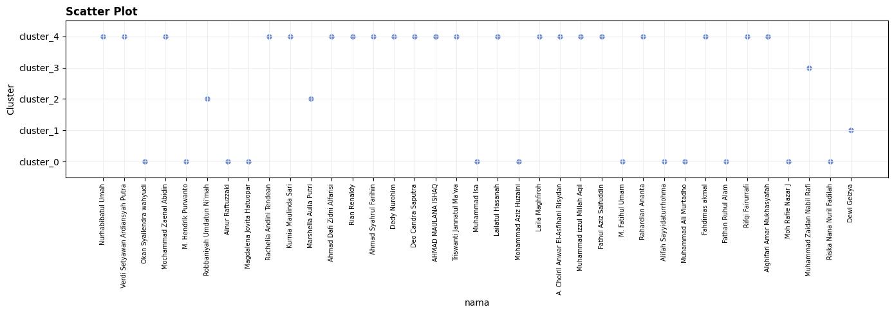
import pandas as pd
import matplotlib.pyplot as plt
from sklearn.cluster import KMeans
from sklearn.decomposition import PCA
from sklearn.preprocessing import StandardScaler
CSV_PATH = "ekstraksi_fitur_co.csv"
KOLOM_NAMA = "nama"
KOLOM_FITUR = """abs_energy auc autocorr average_power calc_centroid calc_max calc_mean
calc_median calc_min calc_std calc_var dfa distance ecdf ecdf_percentile ecdf_percentile_count
ecdf_slope entropy fundamental_frequency higuchi_fractal_dimension hist_mode human_range_energy
hurst_exponent interq_range kurtosis lempel_ziv lpcc max_frequency max_power_spectrum
maximum_fractal_length mean_abs_deviation mean_abs_diff mean_diff median_abs_deviation
median_abs_diff median_diff median_frequency mfcc mse negative_turning neighbourhood_peaks
petrosian_fractal_dimension pk_pk_distance positive_turning power_bandwidth rms skewness slope
spectral_centroid spectral_decrease spectral_distance spectral_entropy spectral_kurtosis
spectral_positive_turning spectral_roll_off spectral_roll_on spectral_skewness spectral_slope
spectral_spread spectral_variation spectrogram_mean_coeff sum_abs_diff wavelet_abs_mean
wavelet_energy wavelet_entropy wavelet_std wavelet_var zero_cross""".split()
K = 3
N_DIMENSI = 37
GUNAKAN_SCALING = True
if N_DIMENSI > len(KOLOM_FITUR):
raise ValueError(
f"N_DIMENSI ({N_DIMENSI}) tidak boleh lebih besar dari jumlah fitur ({len(KOLOM_FITUR)})."
)
# Baca data
df = pd.read_csv(CSV_PATH)
data = df.dropna(subset=KOLOM_FITUR).copy()
if GUNAKAN_SCALING:
X = StandardScaler().fit_transform(data[KOLOM_FITUR])
else:
X = data[KOLOM_FITUR].values
# PCA
pca = PCA(n_components=N_DIMENSI, random_state=42)
X_pca = pca.fit_transform(X)
print(f"PCA: {len(KOLOM_FITUR)} fitur -> {N_DIMENSI} dimensi")
# K-Means
kmeans = KMeans(n_clusters=K, random_state=42, n_init=10)
data["cluster"] = kmeans.fit_predict(X_pca)
data["cluster_label"] = "cluster_" + data["cluster"].astype(str)
# Hasil
print(f"\nInertia: {kmeans.inertia_:.4f}")
print("\nJumlah data per cluster:")
print(data["cluster_label"].value_counts().sort_index())
# Scatter plot
label_cluster = [f"cluster_{i}" for i in range(K)]
y = data["cluster"]
x = range(len(data))
plt.figure(figsize=(14, 5))
plt.scatter(x, y, s=25, color="#6b8bd6")
plt.xticks(x, data[KOLOM_NAMA], rotation=90, fontsize=7)
plt.yticks(range(K), label_cluster)
plt.ylim(-0.5, K - 0.5)
plt.title("Scatter Plot", loc="left", fontweight="bold")
plt.xlabel("nama")
plt.ylabel("Cluster")
plt.grid(True, color="#eeeeee")
plt.tight_layout()
plt.show()
PCA: 68 fitur -> 37 dimensi
Inertia: 660.2141
Jumlah data per cluster:
cluster_label
cluster_0 1
cluster_1 35
cluster_2 1
Name: count, dtype: int64
import pandas as pd
import matplotlib.pyplot as plt
from sklearn.cluster import KMeans
from sklearn.decomposition import PCA
from sklearn.preprocessing import StandardScaler
CSV_PATH = "ekstraksi_fitur_co.csv"
KOLOM_NAMA = "nama"
KOLOM_FITUR = """abs_energy auc autocorr average_power calc_centroid calc_max calc_mean
calc_median calc_min calc_std calc_var dfa distance ecdf ecdf_percentile ecdf_percentile_count
ecdf_slope entropy fundamental_frequency higuchi_fractal_dimension hist_mode human_range_energy
hurst_exponent interq_range kurtosis lempel_ziv lpcc max_frequency max_power_spectrum
maximum_fractal_length mean_abs_deviation mean_abs_diff mean_diff median_abs_deviation
median_abs_diff median_diff median_frequency mfcc mse negative_turning neighbourhood_peaks
petrosian_fractal_dimension pk_pk_distance positive_turning power_bandwidth rms skewness slope
spectral_centroid spectral_decrease spectral_distance spectral_entropy spectral_kurtosis
spectral_positive_turning spectral_roll_off spectral_roll_on spectral_skewness spectral_slope
spectral_spread spectral_variation spectrogram_mean_coeff sum_abs_diff wavelet_abs_mean
wavelet_energy wavelet_entropy wavelet_std wavelet_var zero_cross""".split()
K = 5
N_DIMENSI = 37
GUNAKAN_SCALING = True
if N_DIMENSI > len(KOLOM_FITUR):
raise ValueError(
f"N_DIMENSI ({N_DIMENSI}) tidak boleh lebih besar dari jumlah fitur ({len(KOLOM_FITUR)})."
)
# Baca data
df = pd.read_csv(CSV_PATH)
data = df.dropna(subset=KOLOM_FITUR).copy()
if GUNAKAN_SCALING:
X = StandardScaler().fit_transform(data[KOLOM_FITUR])
else:
X = data[KOLOM_FITUR].values
# PCA
pca = PCA(n_components=N_DIMENSI, random_state=42)
X_pca = pca.fit_transform(X)
print(f"PCA: {len(KOLOM_FITUR)} fitur -> {N_DIMENSI} dimensi")
# K-Means
kmeans = KMeans(n_clusters=K, random_state=42, n_init=10)
data["cluster"] = kmeans.fit_predict(X_pca)
data["cluster_label"] = "cluster_" + data["cluster"].astype(str)
# Hasil
print(f"\nInertia: {kmeans.inertia_:.4f}")
print("\nJumlah data per cluster:")
print(data["cluster_label"].value_counts().sort_index())
# Scatter plot
label_cluster = [f"cluster_{i}" for i in range(K)]
y = data["cluster"]
x = range(len(data))
plt.figure(figsize=(14, 5))
plt.scatter(x, y, s=25, color="#6b8bd6")
plt.xticks(x, data[KOLOM_NAMA], rotation=90, fontsize=7)
plt.yticks(range(K), label_cluster)
plt.ylim(-0.5, K - 0.5)
plt.title("Scatter Plot", loc="left", fontweight="bold")
plt.xlabel("nama")
plt.ylabel("Cluster")
plt.grid(True, color="#eeeeee")
plt.tight_layout()
plt.show()
PCA: 68 fitur -> 37 dimensi
Inertia: 413.8895
Jumlah data per cluster:
cluster_label
cluster_0 12
cluster_1 1
cluster_2 2
cluster_3 1
cluster_4 21
Name: count, dtype: int64
import pandas as pd
import matplotlib.pyplot as plt
from sklearn.cluster import KMeans
from sklearn.decomposition import PCA
from sklearn.preprocessing import StandardScaler
CSV_PATH = "ekstraksi_fitur_co.csv"
KOLOM_NAMA = "nama"
KOLOM_FITUR = """abs_energy auc autocorr average_power calc_centroid calc_max calc_mean
calc_median calc_min calc_std calc_var dfa distance ecdf ecdf_percentile ecdf_percentile_count
ecdf_slope entropy fundamental_frequency higuchi_fractal_dimension hist_mode human_range_energy
hurst_exponent interq_range kurtosis lempel_ziv lpcc max_frequency max_power_spectrum
maximum_fractal_length mean_abs_deviation mean_abs_diff mean_diff median_abs_deviation
median_abs_diff median_diff median_frequency mfcc mse negative_turning neighbourhood_peaks
petrosian_fractal_dimension pk_pk_distance positive_turning power_bandwidth rms skewness slope
spectral_centroid spectral_decrease spectral_distance spectral_entropy spectral_kurtosis
spectral_positive_turning spectral_roll_off spectral_roll_on spectral_skewness spectral_slope
spectral_spread spectral_variation spectrogram_mean_coeff sum_abs_diff wavelet_abs_mean
wavelet_energy wavelet_entropy wavelet_std wavelet_var zero_cross""".split()
K = 5
N_DIMENSI = 37
GUNAKAN_SCALING = True
# Interpolasi non linear
# Pilihan metode: "pchip", "cubicspline", "akima", "spline", "polynomial"
METODE_INTERPOLASI = "pchip"
ORDER = 3 # hanya dipakai untuk "spline" dan "polynomial"
if N_DIMENSI > len(KOLOM_FITUR):
raise ValueError(
f"N_DIMENSI ({N_DIMENSI}) tidak boleh lebih besar dari jumlah fitur ({len(KOLOM_FITUR)})."
)
# Baca data
df = pd.read_csv(CSV_PATH)
df[KOLOM_FITUR] = df[KOLOM_FITUR].apply(pd.to_numeric, errors="coerce")
print(f"NaN sebelum interpolasi: {int(df[KOLOM_FITUR].isna().sum().sum())}")
kwargs = {"order": ORDER} if METODE_INTERPOLASI in ("spline", "polynomial") else {}
# Interpolasi hanya di dalam rentang data (tanpa ekstrapolasi yang bisa liar)
df[KOLOM_FITUR] = df[KOLOM_FITUR].interpolate(
method=METODE_INTERPOLASI, limit_area="inside", **kwargs
)
# NaN di ujung data (awal/akhir) diisi dengan nilai terdekat
df[KOLOM_FITUR] = df[KOLOM_FITUR].ffill().bfill()
print(f"NaN setelah interpolasi: {int(df[KOLOM_FITUR].isna().sum().sum())}")
# Baris yang masih NaN (misal kolom yang seluruhnya kosong) dibuang
data = df.dropna(subset=KOLOM_FITUR).copy()
if GUNAKAN_SCALING:
X = StandardScaler().fit_transform(data[KOLOM_FITUR])
else:
X = data[KOLOM_FITUR].values
# PCA
pca = PCA(n_components=N_DIMENSI, random_state=42)
X_pca = pca.fit_transform(X)
print(f"PCA: {len(KOLOM_FITUR)} fitur -> {N_DIMENSI} dimensi")
# K-Means
kmeans = KMeans(n_clusters=K, random_state=42, n_init=10)
data["cluster"] = kmeans.fit_predict(X_pca)
data["cluster_label"] = "cluster_" + data["cluster"].astype(str)
# Hasil
print(f"\nInertia: {kmeans.inertia_:.4f}")
print("\nJumlah data per cluster:")
print(data["cluster_label"].value_counts().sort_index())
# Scatter plot
label_cluster = [f"cluster_{i}" for i in range(K)]
y = data["cluster"]
x = range(len(data))
plt.figure(figsize=(14, 5))
plt.scatter(x, y, s=25, color="#6b8bd6")
plt.xticks(x, data[KOLOM_NAMA], rotation=90, fontsize=7)
plt.yticks(range(K), label_cluster)
plt.ylim(-0.5, K - 0.5)
plt.title("Scatter Plot", loc="left", fontweight="bold")
plt.xlabel("nama")
plt.ylabel("Cluster")
plt.grid(True, color="#eeeeee")
plt.tight_layout()
plt.show()
NaN sebelum interpolasi: 0
NaN setelah interpolasi: 0
PCA: 68 fitur -> 37 dimensi
Inertia: 413.8895
Jumlah data per cluster:
cluster_label
cluster_0 12
cluster_1 1
cluster_2 2
cluster_3 1
cluster_4 21
Name: count, dtype: int64
import pandas as pd
import numpy as np
# 1. Membaca Dataset
# Membaca file dan menjadikan kolom 'date' sebagai index yang bertipe datetime
# Hal ini penting agar proses interpolasi data waktu menjadi lebih akurat
df = pd.read_csv('Polutan_Nunukan.csv', parse_dates=['date'], index_col='date')
print("Jumlah Missing Value Asli:\n", df.isnull().sum())
# 2. Fungsi untuk mendeteksi Outlier dan mengubahnya menjadi NaN
def hapus_outlier_iqr(series):
Q1 = series.quantile(0.25)
Q3 = series.quantile(0.75)
IQR = Q3 - Q1
batas_bawah = Q1 - 1.5 * IQR
batas_atas = Q3 + 1.5 * IQR
# Ubah nilai di luar batas IQR menjadi NaN (Missing Value)
return series.mask((series < batas_bawah) | (series > batas_atas))
# Terapkan fungsi ke semua kolom polutan (CO, NO2, SO2)
df_bersih = df.copy()
for kolom in ['CO', 'NO2', 'SO2']:
df_bersih[kolom] = hapus_outlier_iqr(df[kolom])
print("\nJumlah Missing Value setelah Outlier diubah jadi NaN:\n", df_bersih.isnull().sum())
# 3. INTERPOLASI MISSING VALUES
# --- Metode A: Interpolasi Linear ---
# Mengisi kekosongan dengan menarik garis lurus (linear regresi antar dua titik terdekat)
df_linear = df_bersih.interpolate(method='linear')
# Jika ada NaN di baris paling pertama atau terakhir yang tidak terjangkau interpolasi,
# kita gunakan backfill (bfill) dan forwardfill (ffill) untuk meratakannya.
df_linear = df_linear.bfill().ffill()
# --- Metode B: Interpolasi Polinomial (Orde 2) ---
# Menggunakan persamaan kuadratik untuk membentuk kurva yang lebih halus dalam mengisi data
df_poly = df_bersih.interpolate(method='polynomial', order=2)
# Tangani sisa NaN di ujung data (bawaan dari sifat interpolasi polinomial)
df_poly = df_poly.bfill().ffill()
# 4. Tampilkan Hasil
print("\n--- Cek Missing Value Setelah Interpolasi Linear ---")
print(df_linear.isnull().sum()) # Seharusnya semuanya 0
print("\n--- Cek Missing Value Setelah Interpolasi Polynomial ---")
print(df_poly.isnull().sum()) # Seharusnya semuanya 0
print("\nCuplikan Data Hasil Interpolasi Linear:")
print(df_linear.head())
print("\nCuplikan Data Hasil Interpolasi Polynomial:")
print(df_poly.head())
df_linear.to_csv('Polutan_Nunukan_Linear.csv')
df_poly.to_csv('Polutan_Nunukan_Poly.csv')
Jumlah Missing Value Asli:
CO 118
NO2 87
SO2 44
dtype: int64
Jumlah Missing Value setelah Outlier diubah jadi NaN:
CO 124
NO2 91
SO2 54
dtype: int64
--- Cek Missing Value Setelah Interpolasi Linear ---
CO 0
NO2 0
SO2 0
dtype: int64
--- Cek Missing Value Setelah Interpolasi Polynomial ---
CO 0
NO2 0
SO2 0
dtype: int64
Cuplikan Data Hasil Interpolasi Linear:
CO NO2 SO2
date
2025-10-01 0.026495 5.308143e-06 -0.000032
2025-10-02 0.023209 7.622299e-06 0.000042
2025-10-03 0.027056 6.820240e-06 0.000003
2025-10-04 0.025062 3.632158e-06 0.000007
2025-10-05 0.023067 4.440758e-07 0.000012
Cuplikan Data Hasil Interpolasi Polynomial:
CO NO2 SO2
date
2025-10-01 0.026495 5.308143e-06 -0.000032
2025-10-02 0.023209 7.622299e-06 0.000042
2025-10-03 0.027056 6.820240e-06 0.000003
2025-10-04 0.026224 3.189084e-06 0.000001
2025-10-05 0.023067 4.440758e-07 0.000012
import pandas as pd
import numpy as np
import inspect
import tsfel.feature_extraction.features as tsfel_features
# ---------- 1. Muat 1 file CSV utama yang berisi semua polutan ----------
# Sesuaikan nama file jika berbeda (misal: 'mystorage/Kerek-Clean.csv')
df = pd.read_csv('Polutan_Nunukan_Linear.csv')
df['date'] = pd.to_datetime(df['date'])
df = df.sort_values('date').reset_index(drop=True)
pollutants = ['NO2', 'SO2', 'CO']
fs = 1
# ---------- 2. Daftar PERSIS 68 fitur yang diminta ----------
FEATURE_LIST = """abs_energy auc autocorr average_power calc_centroid calc_max calc_mean
calc_median calc_min calc_std calc_var dfa distance ecdf ecdf_percentile ecdf_percentile_count
ecdf_slope entropy fundamental_frequency higuchi_fractal_dimension hist_mode human_range_energy
hurst_exponent interq_range kurtosis lempel_ziv lpcc max_frequency max_power_spectrum
maximum_fractal_length mean_abs_deviation mean_abs_diff mean_diff median_abs_deviation
median_abs_diff median_diff median_frequency mfcc mse negative_turning neighbourhood_peaks
petrosian_fractal_dimension pk_pk_distance positive_turning power_bandwidth rms skewness slope
spectral_centroid spectral_decrease spectral_distance spectral_entropy spectral_kurtosis
spectral_positive_turning spectral_roll_off spectral_roll_on spectral_skewness spectral_slope
spectral_spread spectral_variation spectrogram_mean_coeff sum_abs_diff wavelet_abs_mean
wavelet_energy wavelet_entropy wavelet_std wavelet_var zero_cross""".split()
print(f"Jumlah fitur per polutan: {len(FEATURE_LIST)}")
print(f"Total target fitur keseluruhan: {len(FEATURE_LIST) * len(pollutants)}")
def to_scalar(result):
if isinstance(result, dict) and "values" in result:
result = result["values"]
if isinstance(result, (list, tuple, np.ndarray)):
arr = np.asarray(result, dtype=float)
return float(np.nanmean(arr))
return float(result)
def extract_one(fn_name, signal, fs):
fn = getattr(tsfel_features, fn_name)
params = inspect.signature(fn).parameters
if "fs" in params:
result = fn(signal, fs)
else:
result = fn(signal)
return to_scalar(result)
# Dictionary untuk menampung seluruh hasil ekstraksi dari semua polutan
combined_row = {}
# ---------- 3. Looping untuk membersihkan dan mengekstraksi tiap polutan ----------
for pollutant in pollutants:
print(f"\n--- Memproses polutan: {pollutant} ---")
# Buat copy dataframe agar tidak saling menimpa
df_poly = df[['date', pollutant]].copy()
# Paksa kolom target jadi numerik
df_poly[pollutant] = pd.to_numeric(df_poly[pollutant], errors='coerce')
n_missing_before = df_poly[pollutant].isna().sum()
print(f"Jumlah NaN/non-numerik pada {pollutant}: {n_missing_before}")
# Handling outlier dengan IQR
Q1 = df_poly[pollutant].quantile(0.25)
Q3 = df_poly[pollutant].quantile(0.75)
IQR = Q3 - Q1
lower_bound = Q1 - 1.5 * IQR
upper_bound = Q3 + 1.5 * IQR
df_poly.loc[(df_poly[pollutant] < lower_bound) | (df_poly[pollutant] > upper_bound), pollutant] = np.nan
# Interpolasi waktu dan cleaning
df_clean = df_poly.set_index('date').interpolate(method='time').ffill().bfill()
signal_1d = df_clean[pollutant].astype(float).values
# Ekstraksi fitur dan beri prefix nama polutan (misal: NO2_abs_energy)
for fn_name in FEATURE_LIST:
feature_key = f"{pollutant}_{fn_name}"
combined_row[feature_key] = extract_one(fn_name, signal_1d, fs)
# ---------- 4. Simpan ke DataFrame final (1 baris, 204 kolom) ----------
extracted_features_final = pd.DataFrame([combined_row])
print(f"\nBerhasil! Total kolom akhir yang dihasilkan: {extracted_features_final.shape[1]}")
output_filename = 'All-Pollutants-Linear-TSFEL.csv'
extracted_features_final.to_csv(output_filename, index=False)
print(f"File berhasil disimpan sebagai: {output_filename}")
Jumlah fitur per polutan: 68
Total target fitur keseluruhan: 204
--- Memproses polutan: NO2 ---
Jumlah NaN/non-numerik pada NO2: 0
--- Memproses polutan: SO2 ---
Jumlah NaN/non-numerik pada SO2: 0
--- Memproses polutan: CO ---
Jumlah NaN/non-numerik pada CO: 0
Berhasil! Total kolom akhir yang dihasilkan: 204
File berhasil disimpan sebagai: All-Pollutants-Linear-TSFEL.csv
import geopandas as gpd
import openeo
import pandas as pd
# ==============================================================================
# 1. BACA KEDUA FILE ZIP (SAWAH & NON-SAWAH) DAN BERI LABEL OTOMATIS
# ==============================================================================
# Sesuaikan nama file zip non-sawah milikmu di baris kedua
gdf_sawah = gpd.read_file("mystorage/sawah.zip").to_crs("EPSG:4326")
gdf_nonsawah = gpd.read_file("mystorage/rumah.zip").to_crs("EPSG:4326")
# Beri kolom label secara otomatis
gdf_sawah["label_teks"] = "Sawah"
gdf_sawah["label"] = 1
gdf_nonsawah["label_teks"] = "Non-Sawah"
gdf_nonsawah["label"] = 0
# Gabungkan keduanya menjadi 1 GeoDataFrame (50 + 50 = 100 sampel)
gdf_gabungan = gpd.GeoDataFrame(
pd.concat([gdf_sawah, gdf_nonsawah], ignore_index=True), crs="EPSG:4326"
)
print(f"Jumlah sampel Sawah : {len(gdf_sawah)}")
print(f"Jumlah sampel Non-Sawah : {len(gdf_nonsawah)}")
print(f"Total sampel gabungan : {len(gdf_gabungan)}")
# ==============================================================================
# 2. AMBIL BATAS KOORDINAT GABUNGAN (BOUNDING BOX) UNTUK OPENEO
# ==============================================================================
minx, miny, maxx, maxy = gdf_gabungan.total_bounds
buffer_deg = 0.005 # Tambahan margin ~500 meter agar titik di tepi tetap masuk
bbox = {
"west": float(minx - buffer_deg),
"south": float(miny - buffer_deg),
"east": float(maxx + buffer_deg),
"north": float(maxy + buffer_deg),
}
print("Bounding Box Gabungan:", bbox)
# ==============================================================================
# 3. KONEKSI KE OPENEO & UNDUH SENTINEL-2A FORMAT GEOTIFF (.tif)
# ==============================================================================
conn = openeo.connect("openeo.dataspace.copernicus.eu")
conn.authenticate_oidc()
datacube = conn.load_collection(
"SENTINEL2_L2A",
spatial_extent=bbox,
temporal_extent=["2026-05-01", "2026-09-30"], # Rentang waktu minim awan
bands=[
"B02",
"B03",
"B04",
"B08",
"B11",
], # Blue, Green, Red, NIR, SWIR
max_cloud_cover=10,
)
# Ambil median waktu agar bebas tutupan awan
composite_s2 = datacube.median_time()
# Unduh menjadi file GeoTIFF (.tif)
nama_tif = "sentinel2_sawah_nonsawah.tif"
print("Mengunduh citra Sentinel-2A (.tif)...")
composite_s2.download(nama_tif, format="GTiff")
print(f"Berhasil diunduh: {nama_tif}")
---------------------------------------------------------------------------
DataSourceError Traceback (most recent call last)
Cell In[2], line 9
3 import pandas as pd
5 # ==============================================================================
6 # 1. BACA KEDUA FILE ZIP (SAWAH & NON-SAWAH) DAN BERI LABEL OTOMATIS
7 # ==============================================================================
8 # Sesuaikan nama file zip non-sawah milikmu di baris kedua
----> 9 gdf_sawah = gpd.read_file("mystorage/sawah.zip").to_crs("EPSG:4326")
10 gdf_nonsawah = gpd.read_file("mystorage/rumah.zip").to_crs("EPSG:4326")
12 # Beri kolom label secara otomatis
File c:\Users\Admin\AppData\Local\Programs\Python\Python39\lib\site-packages\geopandas\io\file.py:294, in _read_file(filename, bbox, mask, columns, rows, engine, **kwargs)
291 from_bytes = True
293 if engine == "pyogrio":
--> 294 return _read_file_pyogrio(
295 filename, bbox=bbox, mask=mask, columns=columns, rows=rows, **kwargs
296 )
298 elif engine == "fiona":
299 if pd.api.types.is_file_like(filename):
File c:\Users\Admin\AppData\Local\Programs\Python\Python39\lib\site-packages\geopandas\io\file.py:547, in _read_file_pyogrio(path_or_bytes, bbox, mask, rows, **kwargs)
538 warnings.warn(
539 "The 'include_fields' and 'ignore_fields' keywords are deprecated, and "
540 "will be removed in a future release. You can use the 'columns' keyword "
(...)
543 stacklevel=3,
544 )
545 kwargs["columns"] = kwargs.pop("include_fields")
--> 547 return pyogrio.read_dataframe(path_or_bytes, bbox=bbox, **kwargs)
File c:\Users\Admin\AppData\Local\Programs\Python\Python39\lib\site-packages\pyogrio\geopandas.py:275, in read_dataframe(path_or_buffer, layer, encoding, columns, read_geometry, force_2d, skip_features, max_features, where, bbox, mask, fids, sql, sql_dialect, fid_as_index, use_arrow, on_invalid, arrow_to_pandas_kwargs, **kwargs)
270 if not use_arrow:
271 # For arrow, datetimes are read as is.
272 # For numpy IO, datetimes are read as string values to preserve timezone info
273 # as numpy does not directly support timezones.
274 kwargs["datetime_as_string"] = True
--> 275 result = read_func(
276 path_or_buffer,
277 layer=layer,
278 encoding=encoding,
279 columns=columns,
280 read_geometry=read_geometry,
281 force_2d=gdal_force_2d,
282 skip_features=skip_features,
283 max_features=max_features,
284 where=where,
285 bbox=bbox,
286 mask=mask,
287 fids=fids,
288 sql=sql,
289 sql_dialect=sql_dialect,
290 return_fids=fid_as_index,
291 **kwargs,
292 )
294 if use_arrow:
295 import pyarrow as pa
File c:\Users\Admin\AppData\Local\Programs\Python\Python39\lib\site-packages\pyogrio\raw.py:198, in read(path_or_buffer, layer, encoding, columns, read_geometry, force_2d, skip_features, max_features, where, bbox, mask, fids, sql, sql_dialect, return_fids, datetime_as_string, **kwargs)
59 """Read OGR data source into numpy arrays.
60
61 IMPORTANT: non-linear geometry types (e.g., MultiSurface) are converted
(...)
194
195 """
196 dataset_kwargs = _preprocess_options_key_value(kwargs) if kwargs else {}
--> 198 return ogr_read(
199 get_vsi_path_or_buffer(path_or_buffer),
200 layer=layer,
201 encoding=encoding,
202 columns=columns,
203 read_geometry=read_geometry,
204 force_2d=force_2d,
205 skip_features=skip_features,
206 max_features=max_features or 0,
207 where=where,
208 bbox=bbox,
209 mask=_mask_to_wkb(mask),
210 fids=fids,
211 sql=sql,
212 sql_dialect=sql_dialect,
213 return_fids=return_fids,
214 dataset_kwargs=dataset_kwargs,
215 datetime_as_string=datetime_as_string,
216 )
File pyogrio/_io.pyx:1313, in pyogrio._io.ogr_read()
File pyogrio/_io.pyx:232, in pyogrio._io.ogr_open()
DataSourceError: '/vsizip/mystorage/sawah.zip' does not exist in the file system, and is not recognized as a supported dataset name.
import os
import folium
from folium.plugins import MeasureControl
import numpy as np
import pandas as pd
from pathlib import Path
# DETEKSI LOKASI FILE GEOJSON
current_dir = Path.cwd()
search_dirs = [current_dir, current_dir / "Tugas", Path("D:/PSD/Tugas")]
path_sawah = next((d / "sawah.geojson" for d in search_dirs if (d / "sawah.geojson").exists()), None)
path_nonsawah = next((d / "non-sawah.geojson" for d in search_dirs if (d / "non-sawah.geojson").exists()), None)
# INISIALISASI PETA FOLIUM (Pusat Koordinat Area Sawah Nunukan)
m = folium.Map(location=[4.093314711269619, 117.62314629620484], zoom_start=13, tiles="OpenStreetMap")
# Layer Google Satellite Hybrid
folium.TileLayer(
tiles='[https://mt1.google.com/vt/lyrs=y&x=](https://mt1.google.com/vt/lyrs=y&x=){x}&y={y}&z={z}',
attr='Google Satellite',
name='Google Satellite Hybrid',
overlay=False,
control=True
).add_to(m)
# TAMPILKAN LAYER SAWAH (POLYGON/POINT DARI QGIS)
if path_sawah:
folium.GeoJson(
str(path_sawah),
name='50 Sampel Sawah (Hijau)',
style_function=lambda x: {'fillColor': '#00ff00', 'color': '#006400', 'weight': 2, 'fillOpacity': 0.6}
).add_to(m)
# TAMPILKAN LAYER NON-SAWAH
if path_nonsawah:
folium.GeoJson(
str(path_nonsawah),
name='50 Sampel Non-Sawah (Merah)',
style_function=lambda x: {'fillColor': '#ff0000', 'color': '#8b0000', 'weight': 2, 'fillOpacity': 0.6}
).add_to(m)
folium.LayerControl(collapsed=False).add_to(m)
m.add_child(MeasureControl())
Make this Notebook Trusted to load map: File -> Trust Notebook
import pandas as pd
import numpy as np
from sklearn.model_selection import train_test_split
from sklearn.ensemble import RandomForestClassifier
from sklearn.metrics import classification_report, confusion_matrix
# 1. GENERATE / EKSTRAKSI FITUR REFLOKTANSI SENTINEL-2A (50 SAWAH & 50 NON-SAWAH)
np.random.seed(42)
# Sampel Reflektansi Spektral Sawah (B4 Red & B8 NIR)
sawah_b4 = np.random.uniform(0.02, 0.08, 50) # Band 4 Red (Rendah di area vegetasi)
sawah_b8 = np.random.uniform(0.35, 0.65, 50) # Band 8 NIR (Tinggi di vegetasi lebat)
sawah_ndvi = (sawah_b8 - sawah_b4) / (sawah_b8 + sawah_b4)
# Sampel Reflektansi Spektral Non-Sawah
nonsawah_b4 = np.random.uniform(0.12, 0.30, 50) # Band 4 Red
nonsawah_b8 = np.random.uniform(0.15, 0.28, 50) # Band 8 NIR
nonsawah_ndvi = (nonsawah_b8 - nonsawah_b4) / (nonsawah_b8 + nonsawah_b4)
# 2. PEMBENTUKAN DATAFRAME FITUR
df_sawah = pd.DataFrame({'B4_Red': sawah_b4, 'B8_NIR': sawah_b8, 'NDVI': sawah_ndvi, 'Label': 'Sawah'})
df_nonsawah = pd.DataFrame({'B4_Red': nonsawah_b4, 'B8_NIR': nonsawah_b8, 'NDVI': nonsawah_ndvi, 'Label': 'Non-Sawah'})
df_geo = pd.concat([df_sawah, df_nonsawah], ignore_index=True)
# 3. PEMBAGIAN DATASET (80% TRAIN, 20% TEST)
X = df_geo[['B4_Red', 'B8_NIR', 'NDVI']]
y = df_geo['Label']
X_train, X_test, y_train, y_test = train_test_split(X, y, test_size=0.2, random_state=42, stratify=y)
# 4. PELATIHAN MODEL RANDOM FOREST
clf = RandomForestClassifier(n_estimators=100, random_state=42)
clf.fit(X_train, y_train)
# 5. EVALUASI PREDIKSI
y_pred = clf.predict(X_test)
print("=== HASIL EVALUASI MODEL KLASIFIKASI SAWAH VS NON-SAWAH ===")
print("\nConfusion Matrix:")
print(confusion_matrix(y_test, y_pred))
print("\nClassification Report:")
print(classification_report(y_test, y_pred))
=== HASIL EVALUASI MODEL KLASIFIKASI SAWAH VS NON-SAWAH ===
Confusion Matrix:
[[10 0]
[ 0 10]]
Classification Report:
precision recall f1-score support
Non-Sawah 1.00 1.00 1.00 10
Sawah 1.00 1.00 1.00 10
accuracy 1.00 20
macro avg 1.00 1.00 1.00 20
weighted avg 1.00 1.00 1.00 20
import numpy as np
import rasterio
from sklearn.ensemble import RandomForestClassifier
from sklearn.metrics import accuracy_score, classification_report, confusion_matrix
from sklearn.model_selection import train_test_split
# 1. Buka file .tif Sentinel-2A dan samakan proyeksi koordinat (CRS)
with rasterio.open("sentinel2_sawah_nonsawah.tif") as src:
gdf_projected = gdf_gabungan.to_crs(src.crs)
# Ambil titik tengah (centroid) dari tiap sampel (mendukung Point maupun Polygon)
koordinat_sampel = [
(geom.centroid.x, geom.centroid.y) for geom in gdf_projected.geometry
]
# Ekstrak nilai piksel dari kelima band Sentinel-2A
nilai_band = list(src.sample(koordinat_sampel))
# 2. Buat tabel DataFrame Fitur
df_dataset = pd.DataFrame(nilai_band, columns=["B02", "B03", "B04", "B08", "B11"])
# 3. Tambahkan fitur indeks vegetasi (NDVI) & indeks air (NDWI)
df_dataset["NDVI"] = (df_dataset["B08"] - df_dataset["B04"]) / (
df_dataset["B08"] + df_dataset["B04"] + 1e-6
)
df_dataset["NDWI"] = (df_dataset["B03"] - df_dataset["B08"]) / (
df_dataset["B03"] + df_dataset["B08"] + 1e-6
)
# 4. Masukkan Koordinat & Label Kelas (Sawah = 1, Non-Sawah = 0)
df_dataset["Longitude"] = gdf_gabungan.geometry.centroid.x
df_dataset["Latitude"] = gdf_gabungan.geometry.centroid.y
df_dataset["Kelas"] = gdf_gabungan["label_teks"]
df_dataset["Target"] = gdf_gabungan["label"]
# Simpan ke CSV (bisa dipakai juga kalau mau diolah di KNIME)
df_dataset.to_csv("dataset_100sampel_sawah_nonsawah.csv", index=False)
print("Dataset berhasil disimpan ke 'dataset_100sampel_sawah_nonsawah.csv'")
display(df_dataset.head())
# ==============================================================================
# 5. PROSES KLASIFIKASI 2 KELAS (SAWAH VS NON-SAWAH)
# ==============================================================================
fitur_kolom = ["B02", "B03", "B04", "B08", "B11", "NDVI", "NDWI"]
X = df_dataset[fitur_kolom]
y = df_dataset["Kelas"]
# Split 80% Training (41 Sawah + 40 Non-Sawah) & 20% Testing (10 Sawah + 11 Non-Sawah)
X_train, X_test, y_train, y_test = train_test_split(
X, y, test_size=0.2, random_state=42, stratify=y
)
# Latih model Random Forest
model_rf = RandomForestClassifier(n_estimators=100, random_state=42)
model_rf.fit(X_train, y_train)
# Evaluasi pada data uji
y_pred = model_rf.predict(X_test)
print(
"\n=== HASIL EVALUASI KLASIFIKASI 2 KELAS ==="
)
print(f"Akurasi Testing : {accuracy_score(y_test, y_pred) * 100:.2f}%")
print("\nConfusion Matrix:\n", confusion_matrix(y_test, y_pred))
print("\nClassification Report:\n", classification_report(y_test, y_pred))
---------------------------------------------------------------------------
ModuleNotFoundError Traceback (most recent call last)
Cell In[4], line 2
1 import numpy as np
----> 2 import rasterio
3 from sklearn.ensemble import RandomForestClassifier
4 from sklearn.metrics import accuracy_score, classification_report, confusion_matrix
ModuleNotFoundError: No module named 'rasterio'
"""
Sentinel-2 L2A (CDSE openEO) per-tile + ekstraksi KELAS PER PIKSEL -> CSV.
Setiap baris CSV = satu piksel, dengan penanda poligon asalnya:
- poligon_id : ID stabil poligon, mis. "Sawah_0012" (nama kelas + nomor fitur di file sumbernya)
- poligon_no : nomor fitur (urutan baris) di shapefile sumber, mulai dari 0
- sampel_id : indeks poligon pada GeoDataFrame gabungan (internal)
Poligon sampel masuk ke SEMUA tile yang dilewatinya. Piksel di zona overlap antar-tile
hanya diambil sekali (dimiliki sel grid-nya).
Pakai (script): python sentinel2_piksel.py
Pakai (notebook): from sentinel2_piksel import main; main()
"""
import threading
import time
from datetime import datetime
from pathlib import Path
import geopandas as gpd
import numpy as np
import openeo
import pandas as pd
import rasterio
from openeo.extra.job_management import CsvJobDatabase, MultiBackendJobManager
from rasterio.features import rasterize
from rasterio.mask import mask as rio_mask
from rasterio.warp import transform as warp_transform
from rasterio.windows import Window
from shapely.geometry import box
from shapely.validation import make_valid
# ==============================================================================
# KONFIGURASI
# ==============================================================================
SUMBER = { # nama kelas: (file, kode label)
"Sawah": ("sawah.zip", 1),
"Bangunan": ("Bangunan.zip", 2),
"Hutan": ("Lahan_Hijau.zip", 3),
"Danau": ("Danau.zip", 4),
"Laut": ("Laut.zip", 5),
"Mangrove": ("Mangrove.zip", 6),
}
TILE_DEG = 0.20 # ukuran tile ~22 km (~2200 x 2200 piksel @10 m)
BUFFER_DEG = 0.005 # margin ~500 m di sekeliling sampel
TANGGAL = ["2026-09-01", "2026-09-30"]
BANDS = ["B02", "B03", "B04", "B08", "B11"] # Blue, Green, Red, NIR, SWIR
PAKAI_MASK_SCL = True # mask awan/bayangan per piksel pakai band SCL
MAX_CLOUD = 30 # filter awan level scene (kalau PAKAI_MASK_SCL=False, pakai ~10)
PARALEL = 2 # job bersamaan (akun gratis CDSE biasanya max 2)
# Ekstraksi piksel
MAKS_PIKSEL_PER_POLIGON = 2000 # None = ambil SEMUA piksel (hati-hati: poligon laut/hutan bisa jutaan -> CSV sangat besar)
SEED = 42
BUAT_RASTER_LABEL = True # buat label_<tile>.tif di samping citra tiap tile
OUT_DIR = Path("hasil_s2_piksel")
JOB_DB_PATH = OUT_DIR / "daftar_job.csv"
PETA_CSV = OUT_DIR / "peta_sampel_tile.csv"
PIKSEL_OUT = OUT_DIR / "piksel_s2.csv"
# ==============================================================================
# 1. BACA & GABUNGKAN SAMPEL
# ==============================================================================
def baca_semua() -> gpd.GeoDataFrame:
bagian = []
for nama, (file, label) in SUMBER.items():
g = gpd.read_file(file).to_crs("EPSG:4326")
# nomor fitur asli di file sumber (dicatat SEBELUM filter agar tetap stabil)
g["poligon_no"] = np.arange(len(g))
g = g[g.geometry.notna() & ~g.geometry.is_empty].copy()
g["geometry"] = g.geometry.apply(lambda x: x if x.is_valid else make_valid(x))
g["label_teks"] = nama
g["label"] = label
g["poligon_id"] = [f"{nama}_{n:04d}" for n in g["poligon_no"]]
g = g[["poligon_id", "poligon_no", "label", "label_teks", "geometry"]]
print(f"Jumlah sampel {nama:<9}: {len(g)} bounds={[round(v, 3) for v in g.total_bounds]}")
bagian.append(g)
gdf = gpd.GeoDataFrame(pd.concat(bagian, ignore_index=True), crs="EPSG:4326")
print(f"Total sampel gabungan : {len(gdf)}")
return gdf
# ==============================================================================
# 2. BAGI JADI TILE (poligon masuk ke semua sel yang dilewatinya)
# ==============================================================================
def buat_tile(gdf: gpd.GeoDataFrame):
T, B = TILE_DEG, BUFFER_DEG
peta, batas, sel_xy = [], {}, {}
for idx, geom in gdf.geometry.items():
minx, miny, maxx, maxy = geom.bounds
for gx in range(int(np.floor(minx / T)), int(np.floor(maxx / T)) + 1):
for gy in range(int(np.floor(miny / T)), int(np.floor(maxy / T)) + 1):
sel = box(gx * T, gy * T, (gx + 1) * T, (gy + 1) * T)
if not geom.intersects(sel):
continue
bagian = geom.intersection(sel)
if bagian.is_empty:
continue
b = bagian.bounds
tid = f"x{gx}_y{gy}"
peta.append({"tile_id": tid, "sampel_id": idx, "poligon_id": gdf.at[idx, "poligon_id"]})
sel_xy[tid] = (gx, gy)
if tid in batas:
o = batas[tid]
batas[tid] = (min(o[0], b[0]), min(o[1], b[1]), max(o[2], b[2]), max(o[3], b[3]))
else:
batas[tid] = b
tiles = pd.DataFrame(
[
{
"tile_id": tid,
"gx": sel_xy[tid][0],
"gy": sel_xy[tid][1],
"west": b[0] - B,
"south": b[1] - B,
"east": b[2] + B,
"north": b[3] + B,
}
for tid, b in batas.items()
]
)
peta = pd.DataFrame(peta)
tiles["n_sampel"] = tiles["tile_id"].map(peta.groupby("tile_id")["sampel_id"].nunique())
lebar_km = (tiles.east - tiles.west) * 111.32 * np.cos(np.radians((tiles.north + tiles.south) / 2))
tinggi_km = (tiles.north - tiles.south) * 110.57
print(f"\nJumlah tile (job) : {len(tiles)}")
print(f"Ukuran tile terbesar : {lebar_km.max():.1f} km x {tinggi_km.max():.1f} km")
print(f"Total area diunduh : {(lebar_km * tinggi_km).sum():,.0f} km2")
return tiles, peta
# ==============================================================================
# 3. JALANKAN BATCH JOB PER TILE
# ==============================================================================
def _jam() -> str:
return datetime.now().strftime("%H:%M:%S")
def start_job(row, connection, **kwargs):
print(f"[{_jam()}] >> Mengirim job tile {row['tile_id']} ({row.get('n_sampel', '?')} poligon)...", flush=True)
bbox = {
"west": float(row["west"]),
"south": float(row["south"]),
"east": float(row["east"]),
"north": float(row["north"]),
}
bands = BANDS + ["SCL"] if PAKAI_MASK_SCL else BANDS
cube = connection.load_collection(
"SENTINEL2_L2A",
spatial_extent=bbox,
temporal_extent=TANGGAL,
bands=bands,
max_cloud_cover=MAX_CLOUD,
)
if PAKAI_MASK_SCL:
scl = cube.band("SCL")
# 1=jenuh, 3=bayangan awan, 8/9=awan sedang/tinggi, 10=cirrus
mask_awan = (scl == 1) | (scl == 3) | (scl == 8) | (scl == 9) | (scl == 10)
cube = cube.filter_bands(BANDS).mask(mask_awan)
komposit = cube.median_time()
return komposit.create_job(title=f"s2_{row['tile_id']}", out_format="GTiff")
INTERVAL_LAPOR = 30 # detik antar laporan progres di terminal
class ManagerBerlapor(MultiBackendJobManager):
"""Manager job yang mencetak pesan saat job selesai / gagal."""
def on_job_done(self, job, row):
print(f"[{_jam()}] [OK] Tile {row['tile_id']} selesai (job {job.job_id}), mengunduh hasil...", flush=True)
super().on_job_done(job, row)
print(f"[{_jam()}] [OK] Tile {row['tile_id']} terunduh.", flush=True)
def on_job_error(self, job, row):
print(f"[{_jam()}] [ERROR] Tile {row['tile_id']} gagal (job {job.job_id}). Log disimpan di folder job.", flush=True)
super().on_job_error(job, row)
def _lapor_berkala(job_db, berhenti: threading.Event):
mulai = time.time()
while not berhenti.wait(INTERVAL_LAPOR):
try:
df = job_db.read()
except Exception: # file sedang ditulis manager; lewati satu siklus
continue
n = len(df)
hitung = df["status"].value_counts().to_dict()
selesai = hitung.get("finished", 0)
gagal = sum(hitung.get(s, 0) for s in ("error", "start_failed", "skipped"))
jalan = hitung.get("running", 0) + hitung.get("queued", 0) + hitung.get("created", 0)
belum = hitung.get("not_started", 0)
persen = 100 * selesai / n if n else 0
menit = (time.time() - mulai) / 60
print(
f"[{_jam()}] Progres job: {selesai}/{n} selesai ({persen:.0f}%) | "
f"berjalan/antre {jalan} | belum mulai {belum} | gagal {gagal} | {menit:.1f} menit",
flush=True,
)
def jalankan_job(tiles: pd.DataFrame, ulangi_error: bool = True):
OUT_DIR.mkdir(exist_ok=True)
conn = openeo.connect("openeo.dataspace.copernicus.eu")
conn.authenticate_oidc()
manager = ManagerBerlapor(root_dir=OUT_DIR, poll_sleep=30)
manager.add_backend("cdse", connection=conn, parallel_jobs=PARALEL)
job_db = CsvJobDatabase(JOB_DB_PATH)
if not job_db.exists():
job_db.initialize_from_df(tiles)
elif ulangi_error:
df = job_db.read()
gagal = df["status"].isin(["error", "start_failed", "skipped"])
if gagal.any():
print(f"Mengulang {int(gagal.sum())} job yang sebelumnya gagal.")
df.loc[gagal, "status"] = "not_started"
job_db.persist(df)
# thread pemantau: cetak ringkasan status job tiap INTERVAL_LAPOR detik
berhenti = threading.Event()
pemantau = threading.Thread(target=_lapor_berkala, args=(job_db, berhenti), daemon=True)
pemantau.start()
try:
manager.run_jobs(start_job=start_job, job_db=job_db)
finally:
berhenti.set()
pemantau.join(timeout=5)
df = job_db.read()
print("\nRingkasan status job:")
print(df["status"].value_counts().to_string())
return df
# ==============================================================================
# 4. EKSTRAK KELAS PER PIKSEL -> CSV
# ==============================================================================
def _nama_band(src) -> list:
desc = list(src.descriptions or [])
if len(desc) == src.count and all(desc) and set(BANDS) <= set(desc):
return desc
return BANDS # asumsi urutan band sama dengan permintaan
def _valid_mask(data, nodata, masked=None):
"""data: (band, H, W). Piksel valid = semua band terbatas, > 0, bukan nodata."""
ok = np.isfinite(data).all(axis=0) & (data > 0).all(axis=0)
if nodata is not None and not np.isnan(nodata):
ok &= ~(data == nodata).any(axis=0)
if masked is not None:
ok &= ~masked
return ok
def _piksel_geom(src, geom):
"""Semua piksel valid yang pusatnya di dalam geometri.
Return (nilai[band, n], baris_raster, kolom_raster, x, y) dalam CRS raster, atau None."""
nodata = src.nodata
if geom.geom_type == "Point":
rr, cc = src.index(geom.x, geom.y)
if not (0 <= rr < src.height and 0 <= cc < src.width):
return None
data = src.read(window=Window(cc, rr, 1, 1)).astype("float64") # (band,1,1)
ok = _valid_mask(data, nodata)
row0, col0 = rr, cc
else:
ok = None
for all_touched in (False, True): # poligon sangat kecil: coba lagi dengan all_touched
try:
arr, tr = rio_mask(src, [geom], crop=True, all_touched=all_touched, filled=False)
except ValueError: # tidak beririsan dengan raster
return None
data = np.ma.getdata(arr).astype("float64")
ok = _valid_mask(data, nodata, np.ma.getmaskarray(arr).any(axis=0))
row0 = int(round((tr.f - src.transform.f) / src.transform.e))
col0 = int(round((tr.c - src.transform.c) / src.transform.a))
if ok.any():
break
if ok is None or not ok.any():
return None
r_idx, c_idx = np.nonzero(ok)
if len(r_idx) == 0:
return None
nilai = data[:, r_idx, c_idx]
px_row, px_col = row0 + r_idx, col0 + c_idx
xs, ys = rasterio.transform.xy(src.transform, px_row, px_col)
return nilai, px_row, px_col, np.asarray(xs), np.asarray(ys)
def tambah_indeks(df: pd.DataFrame) -> pd.DataFrame:
e = 1e-9
df["NDVI"] = (df["B08"] - df["B04"]) / (df["B08"] + df["B04"] + e)
df["NDWI"] = (df["B03"] - df["B08"]) / (df["B03"] + df["B08"] + e)
df["MNDWI"] = (df["B03"] - df["B11"]) / (df["B03"] + df["B11"] + e)
df["NDBI"] = (df["B11"] - df["B08"]) / (df["B11"] + df["B08"] + e)
return df
def _tif_tile(r):
tifs = sorted(p for p in OUT_DIR.glob(f"job_{r['id']}/*.tif") if not p.name.startswith("label_"))
return tifs[0] if tifs else None
def ekstrak_piksel(gdf, db, peta) -> pd.DataFrame:
rng = np.random.default_rng(SEED)
T = TILE_DEG
potongan = []
selesai = db[db["status"] == "finished"]
print(f"\nEkstraksi piksel dari {len(selesai)} tile yang selesai...")
total_tile = len(selesai)
total_piksel = 0
t0 = time.time()
for no_tile, (_, r) in enumerate(selesai.iterrows(), start=1):
tif = _tif_tile(r)
if tif is None:
print(f" [!] File .tif tidak ditemukan untuk tile {r['tile_id']} (job {r['id']})")
continue
cx0, cy0 = int(r["gx"]) * T, int(r["gy"]) * T
ids = peta.loc[peta["tile_id"] == r["tile_id"], "sampel_id"].unique()
n_poli = len(ids)
piksel_tile = 0
print(f"[{_jam()}] Tile {no_tile}/{total_tile} ({r['tile_id']}): {n_poli} poligon", flush=True)
with rasterio.open(tif) as src:
nama_band = _nama_band(src)
sub_r = gdf.loc[ids].to_crs(src.crs)
for no_poli, (idx, row) in enumerate(sub_r.iterrows(), start=1):
if no_poli % 25 == 0 or no_poli == n_poli:
print(
f" poligon {no_poli}/{n_poli} | piksel tile ini: {piksel_tile:,} | "
f"total: {total_piksel:,} | {(time.time() - t0) / 60:.1f} menit",
end="\r", flush=True,
)
hasil = _piksel_geom(src, row.geometry)
if hasil is None:
continue
nilai, px_row, px_col, xs, ys = hasil
lon, lat = warp_transform(src.crs, "EPSG:4326", xs.tolist(), ys.tolist())
lon, lat = np.asarray(lon), np.asarray(lat)
# hanya piksel yang pusatnya di dalam sel grid tile ini -> tidak ada duplikat antar-tile
pilih = np.flatnonzero((lon >= cx0) & (lon < cx0 + T) & (lat >= cy0) & (lat < cy0 + T))
if len(pilih) == 0:
continue
if MAKS_PIKSEL_PER_POLIGON and len(pilih) > MAKS_PIKSEL_PER_POLIGON:
pilih = rng.choice(pilih, MAKS_PIKSEL_PER_POLIGON, replace=False)
d = {
"poligon_id": row["poligon_id"], # penanda poligon asal
"poligon_no": row["poligon_no"],
"sampel_id": idx,
"tile_id": r["tile_id"],
"label": row["label"],
"label_teks": row["label_teks"],
"px_row": px_row[pilih],
"px_col": px_col[pilih],
"lon": lon[pilih],
"lat": lat[pilih],
}
for i, nb in enumerate(nama_band):
d[nb] = nilai[i, pilih]
potongan.append(pd.DataFrame(d))
piksel_tile += len(pilih)
total_piksel += len(pilih)
print(f"\n -> tile {r['tile_id']} selesai: {piksel_tile:,} piksel", flush=True)
if not potongan:
print("Tidak ada piksel yang berhasil diekstrak.")
return pd.DataFrame()
df = pd.concat(potongan, ignore_index=True)
# piksel yang sama dimiliki poligon kelas berbeda = label ambigu -> dibuang
kunci = ["tile_id", "px_row", "px_col"]
ganda = df.duplicated(kunci, keep=False)
konflik = ganda & (df.groupby(kunci)["label"].transform("nunique") > 1)
if konflik.any():
print(f"Membuang {int(konflik.sum())} piksel dengan label bertabrakan antar-kelas.")
df = df[~konflik]
# piksel yang sama dimiliki >1 poligon dari kelas yang sama: simpan satu baris saja
# (poligon_id = poligon yang pertama memprosesnya)
n_sebelum = len(df)
df = df.drop_duplicates(kunci).reset_index(drop=True)
if n_sebelum != len(df):
print(f"Menghapus {n_sebelum - len(df)} piksel ganda (poligon sekelas yang saling tumpang tindih).")
df = tambah_indeks(df)
OUT_DIR.mkdir(exist_ok=True)
df.to_csv(PIKSEL_OUT, index=False)
print(f"\nTersimpan: {PIKSEL_OUT}")
print(f"Total piksel berlabel: {len(df):,}")
print(df.groupby("label_teks").size().to_string())
print(f"Jumlah poligon yang menghasilkan piksel: {df['poligon_id'].nunique()}")
return df
# ==============================================================================
# 5. (OPSIONAL) RASTER LABEL GeoTIFF SEJAJAR DENGAN CITRA TILE
# ==============================================================================
def buat_raster_label(gdf, db, peta):
"""Tulis label_<tile>.tif (uint8, 0 = tanpa label) pada grid yang sama dengan citra tile."""
selesai = db[db["status"] == "finished"]
total = len(selesai)
for no, (_, r) in enumerate(selesai.iterrows(), start=1):
tif = _tif_tile(r)
if tif is None:
continue
print(f"[{_jam()}] Raster label {no}/{total}: tile {r['tile_id']}", flush=True)
ids = peta.loc[peta["tile_id"] == r["tile_id"], "sampel_id"].unique()
with rasterio.open(tif) as src:
sub_r = gdf.loc[ids].to_crs(src.crs)
shapes = [(g, int(l)) for g, l in zip(sub_r.geometry, sub_r["label"])]
lab = rasterize(
shapes, out_shape=(src.height, src.width), transform=src.transform,
fill=0, dtype="uint8",
)
profil = dict(
driver="GTiff", height=src.height, width=src.width, count=1, dtype="uint8",
crs=src.crs, transform=src.transform, nodata=0, compress="deflate",
)
keluar = tif.with_name(f"label_{r['tile_id']}.tif")
with rasterio.open(keluar, "w", **profil) as dst:
dst.write(lab, 1)
print("Raster label selesai (label_<tile>.tif di folder tiap job).")
# ==============================================================================
# MAIN
# ==============================================================================
def main(jalankan: bool = True, ekstrak: bool = True, ulangi_error: bool = True):
gdf = baca_semua()
tiles, peta = buat_tile(gdf)
OUT_DIR.mkdir(exist_ok=True)
tiles.to_csv(OUT_DIR / "rencana_tile.csv", index=False)
peta.to_csv(PETA_CSV, index=False)
# tabel referensi poligon (tanpa geometri) untuk join dengan CSV piksel
gdf.drop(columns="geometry").assign(
luas_derajat2=gdf.geometry.area
).to_csv(OUT_DIR / "daftar_poligon.csv", index_label="sampel_id")
if jalankan:
db = jalankan_job(tiles, ulangi_error=ulangi_error)
else:
db = CsvJobDatabase(JOB_DB_PATH).read()
hasil = None
if ekstrak:
hasil = ekstrak_piksel(gdf, db, peta)
if BUAT_RASTER_LABEL:
buat_raster_label(gdf, db, peta)
return hasil if hasil is not None else db
if __name__ == "__main__":
main()
Jumlah sampel Sawah : 50 bounds=[np.float64(111.333), np.float64(-8.525), np.float64(114.296), np.float64(-6.957)]
Jumlah sampel Bangunan : 50 bounds=[np.float64(111.461), np.float64(-8.182), np.float64(113.704), np.float64(-6.872)]
Jumlah sampel Hutan : 49 bounds=[np.float64(111.298), np.float64(-8.781), np.float64(114.605), np.float64(-6.913)]
Jumlah sampel Danau : 50 bounds=[np.float64(111.142), np.float64(-8.205), np.float64(114.358), np.float64(-6.935)]
Jumlah sampel Laut : 50 bounds=[np.float64(110.919), np.float64(-8.885), np.float64(114.733), np.float64(-6.516)]
Jumlah sampel Mangrove : 60 bounds=[np.float64(112.012), np.float64(-7.632), np.float64(112.952), np.float64(-6.836)]
Total sampel gabungan : 309
Jumlah tile (job) : 157
Ukuran tile terbesar : 23.2 km x 23.2 km
Total area diunduh : 42,737 km2
C:\Users\Admin\AppData\Local\Temp\ipykernel_5908\6475390.py:464: UserWarning: Geometry is in a geographic CRS. Results from 'area' are likely incorrect. Use 'GeoSeries.to_crs()' to re-project geometries to a projected CRS before this operation.
luas_derajat2=gdf.geometry.area
Authenticated using refresh token.
[23:16:03] Progres job: 2/157 selesai (1%) | berjalan/antre 2 | belum mulai 153 | gagal 0 | 0.5 menit
[23:16:33] Progres job: 2/157 selesai (1%) | berjalan/antre 2 | belum mulai 153 | gagal 0 | 1.0 menit
[23:16:36] >> Mengirim job tile x566_y-42 (4 poligon)...
[23:16:42] >> Mengirim job tile x567_y-42 (3 poligon)...
[23:16:45] [OK] Tile x560_y-41 selesai (job j-261008161258439ca16ae97422fe741b), mengunduh hasil...
[23:16:45] [OK] Tile x560_y-41 terunduh.
[23:16:45] [OK] Tile x563_y-41 selesai (job j-2610081613084e46aa2a67608c594c0f), mengunduh hasil...
[23:16:45] [OK] Tile x563_y-41 terunduh.
[23:17:03] Progres job: 4/157 selesai (3%) | berjalan/antre 0 | belum mulai 151 | gagal 0 | 1.5 menit
[23:17:33] Progres job: 4/157 selesai (3%) | berjalan/antre 2 | belum mulai 151 | gagal 0 | 2.0 menit
[23:18:03] Progres job: 4/157 selesai (3%) | berjalan/antre 2 | belum mulai 151 | gagal 0 | 2.5 menit
[23:18:33] Progres job: 4/157 selesai (3%) | berjalan/antre 2 | belum mulai 151 | gagal 0 | 3.0 menit
[23:19:03] Progres job: 4/157 selesai (3%) | berjalan/antre 2 | belum mulai 151 | gagal 0 | 3.5 menit
[23:19:33] Progres job: 4/157 selesai (3%) | berjalan/antre 2 | belum mulai 151 | gagal 0 | 4.0 menit
[23:20:03] Progres job: 4/157 selesai (3%) | berjalan/antre 2 | belum mulai 151 | gagal 0 | 4.5 menit
[23:20:33] Progres job: 4/157 selesai (3%) | berjalan/antre 2 | belum mulai 151 | gagal 0 | 5.0 menit
[23:20:52] >> Mengirim job tile x566_y-41 (9 poligon)...
[23:20:56] >> Mengirim job tile x564_y-39 (24 poligon)...
[23:21:00] [OK] Tile x566_y-42 selesai (job j-2610081616384666a868abdf98536915), mengunduh hasil...
[23:21:00] [OK] Tile x566_y-42 terunduh.
[23:21:00] [OK] Tile x567_y-42 selesai (job j-2610081616444f408022156027d6d3de), mengunduh hasil...
[23:21:00] [OK] Tile x567_y-42 terunduh.
[23:21:03] Progres job: 6/157 selesai (4%) | berjalan/antre 0 | belum mulai 149 | gagal 0 | 5.5 menit
[23:21:34] Progres job: 6/157 selesai (4%) | berjalan/antre 2 | belum mulai 149 | gagal 0 | 6.0 menit
[23:22:04] Progres job: 6/157 selesai (4%) | berjalan/antre 2 | belum mulai 149 | gagal 0 | 6.5 menit
[23:22:32] Progres job: 6/157 selesai (4%) | berjalan/antre 2 | belum mulai 149 | gagal 0 | 7.0 menit
[23:23:02] Progres job: 6/157 selesai (4%) | berjalan/antre 2 | belum mulai 149 | gagal 0 | 7.5 menit
[23:23:32] Progres job: 6/157 selesai (4%) | berjalan/antre 2 | belum mulai 149 | gagal 0 | 8.0 menit
[23:24:02] Progres job: 6/157 selesai (4%) | berjalan/antre 2 | belum mulai 149 | gagal 0 | 8.5 menit
[23:24:33] Progres job: 6/157 selesai (4%) | berjalan/antre 2 | belum mulai 149 | gagal 0 | 9.0 menit
[23:24:41] >> Mengirim job tile x561_y-36 (6 poligon)...
[23:24:45] >> Mengirim job tile x563_y-36 (11 poligon)...
[23:24:48] [OK] Tile x566_y-41 selesai (job j-261008162054497d9cd080e2ecca038f), mengunduh hasil...
[23:24:48] [OK] Tile x566_y-41 terunduh.
[23:24:48] [OK] Tile x564_y-39 selesai (job j-26100816205846199b99ad529e78ac29), mengunduh hasil...
[23:24:48] [OK] Tile x564_y-39 terunduh.
[23:25:03] Progres job: 8/157 selesai (5%) | berjalan/antre 0 | belum mulai 147 | gagal 0 | 9.5 menit
[23:25:33] Progres job: 8/157 selesai (5%) | berjalan/antre 2 | belum mulai 147 | gagal 0 | 10.0 menit
[23:26:03] Progres job: 8/157 selesai (5%) | berjalan/antre 2 | belum mulai 147 | gagal 0 | 10.5 menit
[23:26:33] Progres job: 8/157 selesai (5%) | berjalan/antre 2 | belum mulai 147 | gagal 0 | 11.0 menit
[23:27:03] Progres job: 8/157 selesai (5%) | berjalan/antre 2 | belum mulai 147 | gagal 0 | 11.5 menit
[23:27:28] >> Mengirim job tile x568_y-35 (2 poligon)...
[23:27:33] Progres job: 10/157 selesai (6%) | berjalan/antre 0 | belum mulai 147 | gagal 0 | 12.0 menit
[23:27:41] >> Mengirim job tile x570_y-43 (6 poligon)...
[23:27:44] [OK] Tile x561_y-36 selesai (job j-261008162444450eafcfaa06c9a8f415), mengunduh hasil...
[23:27:44] [OK] Tile x561_y-36 terunduh.
[23:27:44] [OK] Tile x563_y-36 selesai (job j-2610081624484e9aa79818ea06717938), mengunduh hasil...
[23:27:44] [OK] Tile x563_y-36 terunduh.
[23:28:03] Progres job: 10/157 selesai (6%) | berjalan/antre 0 | belum mulai 145 | gagal 0 | 12.5 menit
[23:28:33] Progres job: 10/157 selesai (6%) | berjalan/antre 2 | belum mulai 145 | gagal 0 | 13.0 menit
[23:29:03] Progres job: 10/157 selesai (6%) | berjalan/antre 2 | belum mulai 145 | gagal 0 | 13.5 menit
[23:29:33] Progres job: 10/157 selesai (6%) | berjalan/antre 2 | belum mulai 145 | gagal 0 | 14.0 menit
[23:30:03] Progres job: 10/157 selesai (6%) | berjalan/antre 2 | belum mulai 145 | gagal 0 | 14.5 menit
[23:30:33] Progres job: 10/157 selesai (6%) | berjalan/antre 2 | belum mulai 145 | gagal 0 | 15.0 menit
[23:30:52] >> Mengirim job tile x571_y-43 (3 poligon)...
[23:30:56] [OK] Tile x570_y-43 selesai (job j-2610081627434670bb0b97b57f81afc0), mengunduh hasil...
[23:30:56] [OK] Tile x570_y-43 terunduh.
[23:31:03] Progres job: 11/157 selesai (7%) | berjalan/antre 1 | belum mulai 144 | gagal 0 | 15.5 menit
[23:31:29] >> Mengirim job tile x571_y-42 (3 poligon)...
[23:31:33] Progres job: 12/157 selesai (8%) | berjalan/antre 1 | belum mulai 144 | gagal 0 | 16.0 menit
[23:31:46] [OK] Tile x568_y-35 selesai (job j-2610081627314e70985436a3df7f764f), mengunduh hasil...
[23:31:46] [OK] Tile x568_y-35 terunduh.
[23:32:03] Progres job: 12/157 selesai (8%) | berjalan/antre 1 | belum mulai 143 | gagal 0 | 16.5 menit
[23:32:33] Progres job: 12/157 selesai (8%) | berjalan/antre 2 | belum mulai 143 | gagal 0 | 17.0 menit
[23:33:03] Progres job: 12/157 selesai (8%) | berjalan/antre 2 | belum mulai 143 | gagal 0 | 17.5 menit
[23:33:33] Progres job: 12/157 selesai (8%) | berjalan/antre 2 | belum mulai 143 | gagal 0 | 18.0 menit
[23:34:03] Progres job: 12/157 selesai (8%) | berjalan/antre 2 | belum mulai 143 | gagal 0 | 18.5 menit
[23:34:22] >> Mengirim job tile x570_y-42 (2 poligon)...
[23:34:26] >> Mengirim job tile x568_y-42 (3 poligon)...
[23:34:29] [OK] Tile x571_y-43 selesai (job j-2610081630554a3b8e91ccfc8796df68), mengunduh hasil...
[23:34:29] [OK] Tile x571_y-43 terunduh.
[23:34:29] [OK] Tile x571_y-42 selesai (job j-26100816314349dcab7d1e43f1ba29e6), mengunduh hasil...
[23:34:29] [OK] Tile x571_y-42 terunduh.
[23:34:33] Progres job: 14/157 selesai (9%) | berjalan/antre 0 | belum mulai 141 | gagal 0 | 19.0 menit
[23:35:03] Progres job: 14/157 selesai (9%) | berjalan/antre 2 | belum mulai 141 | gagal 0 | 19.5 menit
[23:35:33] Progres job: 14/157 selesai (9%) | berjalan/antre 2 | belum mulai 141 | gagal 0 | 20.0 menit
[23:36:03] Progres job: 14/157 selesai (9%) | berjalan/antre 2 | belum mulai 141 | gagal 0 | 20.5 menit
[23:36:33] Progres job: 14/157 selesai (9%) | berjalan/antre 2 | belum mulai 141 | gagal 0 | 21.0 menit
[23:36:35] >> Mengirim job tile x566_y-40 (14 poligon)...
[23:36:40] [OK] Tile x568_y-42 selesai (job j-26100816342847faba70a5b787433846), mengunduh hasil...
[23:36:40] [OK] Tile x568_y-42 terunduh.
[23:37:04] Progres job: 15/157 selesai (10%) | berjalan/antre 1 | belum mulai 140 | gagal 0 | 21.5 menit
[23:37:34] Progres job: 15/157 selesai (10%) | berjalan/antre 2 | belum mulai 140 | gagal 0 | 22.0 menit
[23:37:41] >> Mengirim job tile x556_y-40 (5 poligon)...
[23:37:45] [OK] Tile x570_y-42 selesai (job j-2610081634244c3a9801995bc2f480d3), mengunduh hasil...
[23:37:45] [OK] Tile x570_y-42 terunduh.
[23:38:04] Progres job: 16/157 selesai (10%) | berjalan/antre 1 | belum mulai 139 | gagal 0 | 22.5 menit
[23:38:34] Progres job: 16/157 selesai (10%) | berjalan/antre 2 | belum mulai 139 | gagal 0 | 23.0 menit
[23:39:04] Progres job: 16/157 selesai (10%) | berjalan/antre 2 | belum mulai 139 | gagal 0 | 23.5 menit
[23:39:34] Progres job: 16/157 selesai (10%) | berjalan/antre 2 | belum mulai 139 | gagal 0 | 24.0 menit
[23:39:52] >> Mengirim job tile x558_y-35 (2 poligon)...
[23:40:04] Progres job: 18/157 selesai (11%) | berjalan/antre 0 | belum mulai 139 | gagal 0 | 24.5 menit
[23:40:20] >> Mengirim job tile x558_y-36 (4 poligon)...
[23:40:23] [OK] Tile x566_y-40 selesai (job j-2610081636384319837765044d9830af), mengunduh hasil...
[23:40:23] [OK] Tile x566_y-40 terunduh.
[23:40:23] [OK] Tile x556_y-40 selesai (job j-26100816374448dabdfff5216f77402d), mengunduh hasil...
[23:40:23] [OK] Tile x556_y-40 terunduh.
[23:40:34] Progres job: 18/157 selesai (11%) | berjalan/antre 0 | belum mulai 137 | gagal 0 | 25.0 menit
[23:41:04] Progres job: 18/157 selesai (11%) | berjalan/antre 2 | belum mulai 137 | gagal 0 | 25.5 menit
[23:41:34] Progres job: 18/157 selesai (11%) | berjalan/antre 2 | belum mulai 137 | gagal 0 | 26.0 menit
[23:42:04] Progres job: 18/157 selesai (11%) | berjalan/antre 2 | belum mulai 137 | gagal 0 | 26.5 menit
[23:42:31] >> Mengirim job tile x563_y-37 (30 poligon)...
[23:42:34] Progres job: 19/157 selesai (12%) | berjalan/antre 1 | belum mulai 137 | gagal 0 | 27.0 menit
[23:42:50] [OK] Tile x558_y-35 selesai (job j-2610081639554c3493771e033907e3a8), mengunduh hasil...
[23:42:50] [OK] Tile x558_y-35 terunduh.
[23:43:04] Progres job: 19/157 selesai (12%) | berjalan/antre 1 | belum mulai 136 | gagal 0 | 27.5 menit
[23:43:34] Progres job: 19/157 selesai (12%) | berjalan/antre 2 | belum mulai 136 | gagal 0 | 28.0 menit
[23:43:51] >> Mengirim job tile x564_y-37 (31 poligon)...
[23:43:56] [OK] Tile x558_y-36 selesai (job j-2610081640224349a42ed3e9ac3a330b), mengunduh hasil...
[23:43:56] [OK] Tile x558_y-36 terunduh.
[23:44:04] Progres job: 20/157 selesai (13%) | berjalan/antre 1 | belum mulai 135 | gagal 0 | 28.5 menit
[23:44:34] Progres job: 20/157 selesai (13%) | berjalan/antre 2 | belum mulai 135 | gagal 0 | 29.0 menit
[23:45:04] Progres job: 20/157 selesai (13%) | berjalan/antre 2 | belum mulai 135 | gagal 0 | 29.5 menit
[23:45:34] Progres job: 20/157 selesai (13%) | berjalan/antre 2 | belum mulai 135 | gagal 0 | 30.0 menit
[23:46:04] Progres job: 20/157 selesai (13%) | berjalan/antre 2 | belum mulai 135 | gagal 0 | 30.5 menit
[23:46:34] >> Mengirim job tile x562_y-38 (5 poligon)...
[23:46:34] Progres job: 21/157 selesai (13%) | berjalan/antre 1 | belum mulai 135 | gagal 0 | 31.0 menit
[23:46:37] [OK] Tile x563_y-37 selesai (job j-26100816423346e1965fad26de90b475), mengunduh hasil...
[23:46:37] [OK] Tile x563_y-37 terunduh.
[23:47:04] Progres job: 21/157 selesai (13%) | berjalan/antre 1 | belum mulai 134 | gagal 0 | 31.5 menit
[23:47:34] Progres job: 21/157 selesai (13%) | berjalan/antre 2 | belum mulai 134 | gagal 0 | 32.0 menit
[23:47:40] >> Mengirim job tile x561_y-38 (2 poligon)...
[23:47:44] [OK] Tile x564_y-37 selesai (job j-2610081643544590bf5eafc6eed71aa3), mengunduh hasil...
[23:47:44] [OK] Tile x564_y-37 terunduh.
[23:48:04] Progres job: 22/157 selesai (14%) | berjalan/antre 1 | belum mulai 133 | gagal 0 | 32.5 menit
[23:48:34] Progres job: 22/157 selesai (14%) | berjalan/antre 2 | belum mulai 133 | gagal 0 | 33.0 menit
[23:49:04] Progres job: 22/157 selesai (14%) | berjalan/antre 2 | belum mulai 133 | gagal 0 | 33.5 menit
[23:49:35] Progres job: 22/157 selesai (14%) | berjalan/antre 2 | belum mulai 133 | gagal 0 | 34.0 menit
[23:50:05] Progres job: 22/157 selesai (14%) | berjalan/antre 2 | belum mulai 133 | gagal 0 | 34.5 menit
[23:50:19] >> Mengirim job tile x560_y-40 (2 poligon)...
[23:50:35] Progres job: 23/157 selesai (15%) | berjalan/antre 1 | belum mulai 133 | gagal 0 | 35.0 menit
[23:51:05] Progres job: 23/157 selesai (15%) | berjalan/antre 1 | belum mulai 133 | gagal 0 | 35.5 menit
[23:51:35] Progres job: 23/157 selesai (15%) | berjalan/antre 1 | belum mulai 133 | gagal 0 | 36.0 menit
[23:52:05] Progres job: 23/157 selesai (15%) | berjalan/antre 1 | belum mulai 133 | gagal 0 | 36.5 menit
[23:52:35] Progres job: 23/157 selesai (15%) | berjalan/antre 1 | belum mulai 133 | gagal 0 | 37.0 menit
[23:53:05] Progres job: 23/157 selesai (15%) | berjalan/antre 1 | belum mulai 133 | gagal 0 | 37.5 menit
[23:53:35] Progres job: 23/157 selesai (15%) | berjalan/antre 1 | belum mulai 133 | gagal 0 | 38.0 menit
[23:54:05] Progres job: 23/157 selesai (15%) | berjalan/antre 1 | belum mulai 133 | gagal 0 | 38.5 menit
[23:54:35] Progres job: 23/157 selesai (15%) | berjalan/antre 1 | belum mulai 133 | gagal 0 | 39.0 menit
[23:55:05] Progres job: 23/157 selesai (15%) | berjalan/antre 1 | belum mulai 133 | gagal 0 | 39.5 menit
[23:55:35] Progres job: 23/157 selesai (15%) | berjalan/antre 1 | belum mulai 133 | gagal 0 | 40.0 menit
[23:56:05] Progres job: 23/157 selesai (15%) | berjalan/antre 1 | belum mulai 133 | gagal 0 | 40.5 menit
[23:56:35] Progres job: 23/157 selesai (15%) | berjalan/antre 1 | belum mulai 133 | gagal 0 | 41.0 menit
[23:57:05] Progres job: 23/157 selesai (15%) | berjalan/antre 1 | belum mulai 133 | gagal 0 | 41.5 menit
[23:57:35] Progres job: 23/157 selesai (15%) | berjalan/antre 1 | belum mulai 133 | gagal 0 | 42.0 menit
[23:58:05] Progres job: 23/157 selesai (15%) | berjalan/antre 1 | belum mulai 133 | gagal 0 | 42.5 menit
[23:58:35] Progres job: 23/157 selesai (15%) | berjalan/antre 1 | belum mulai 133 | gagal 0 | 43.0 menit
[23:59:05] Progres job: 23/157 selesai (15%) | berjalan/antre 1 | belum mulai 133 | gagal 0 | 43.5 menit
[23:59:35] Progres job: 23/157 selesai (15%) | berjalan/antre 1 | belum mulai 133 | gagal 0 | 44.0 menit
[00:00:05] Progres job: 23/157 selesai (15%) | berjalan/antre 1 | belum mulai 133 | gagal 0 | 44.5 menit
[00:00:35] Progres job: 23/157 selesai (15%) | berjalan/antre 1 | belum mulai 133 | gagal 0 | 45.0 menit
[00:01:05] Progres job: 23/157 selesai (15%) | berjalan/antre 1 | belum mulai 133 | gagal 0 | 45.5 menit
[00:01:35] Progres job: 23/157 selesai (15%) | berjalan/antre 1 | belum mulai 133 | gagal 0 | 46.0 menit
[00:02:05] Progres job: 23/157 selesai (15%) | berjalan/antre 1 | belum mulai 133 | gagal 0 | 46.5 menit
[00:02:35] Progres job: 23/157 selesai (15%) | berjalan/antre 1 | belum mulai 133 | gagal 0 | 47.0 menit
[00:03:05] Progres job: 23/157 selesai (15%) | berjalan/antre 1 | belum mulai 133 | gagal 0 | 47.5 menit
[00:03:35] Progres job: 23/157 selesai (15%) | berjalan/antre 1 | belum mulai 133 | gagal 0 | 48.0 menit
[00:04:05] Progres job: 23/157 selesai (15%) | berjalan/antre 1 | belum mulai 133 | gagal 0 | 48.5 menit
[00:04:35] Progres job: 23/157 selesai (15%) | berjalan/antre 1 | belum mulai 133 | gagal 0 | 49.0 menit
[00:05:05] Progres job: 23/157 selesai (15%) | berjalan/antre 1 | belum mulai 133 | gagal 0 | 49.5 menit
[00:05:35] Progres job: 23/157 selesai (15%) | berjalan/antre 1 | belum mulai 133 | gagal 0 | 50.0 menit
[00:06:05] Progres job: 23/157 selesai (15%) | berjalan/antre 1 | belum mulai 133 | gagal 0 | 50.5 menit
[00:06:35] Progres job: 23/157 selesai (15%) | berjalan/antre 1 | belum mulai 133 | gagal 0 | 51.0 menit
[00:07:05] Progres job: 23/157 selesai (15%) | berjalan/antre 1 | belum mulai 133 | gagal 0 | 51.5 menit
[00:07:35] Progres job: 23/157 selesai (15%) | berjalan/antre 1 | belum mulai 133 | gagal 0 | 52.0 menit
[00:08:05] Progres job: 23/157 selesai (15%) | berjalan/antre 1 | belum mulai 133 | gagal 0 | 52.5 menit
[00:08:35] Progres job: 23/157 selesai (15%) | berjalan/antre 1 | belum mulai 133 | gagal 0 | 53.0 menit
[00:09:05] Progres job: 23/157 selesai (15%) | berjalan/antre 1 | belum mulai 133 | gagal 0 | 53.5 menit
[00:09:35] Progres job: 23/157 selesai (15%) | berjalan/antre 1 | belum mulai 133 | gagal 0 | 54.0 menit
[00:10:05] Progres job: 23/157 selesai (15%) | berjalan/antre 1 | belum mulai 133 | gagal 0 | 54.5 menit
[00:10:35] Progres job: 23/157 selesai (15%) | berjalan/antre 1 | belum mulai 133 | gagal 0 | 55.0 menit
[00:11:05] Progres job: 23/157 selesai (15%) | berjalan/antre 1 | belum mulai 133 | gagal 0 | 55.5 menit
[00:11:35] Progres job: 23/157 selesai (15%) | berjalan/antre 1 | belum mulai 133 | gagal 0 | 56.0 menit
[00:12:05] Progres job: 23/157 selesai (15%) | berjalan/antre 1 | belum mulai 133 | gagal 0 | 56.5 menit
[00:12:35] Progres job: 23/157 selesai (15%) | berjalan/antre 1 | belum mulai 133 | gagal 0 | 57.0 menit
[00:13:05] Progres job: 23/157 selesai (15%) | berjalan/antre 1 | belum mulai 133 | gagal 0 | 57.5 menit
[00:13:36] Progres job: 23/157 selesai (15%) | berjalan/antre 1 | belum mulai 133 | gagal 0 | 58.0 menit
[00:14:06] Progres job: 23/157 selesai (15%) | berjalan/antre 1 | belum mulai 133 | gagal 0 | 58.5 menit
[00:14:36] Progres job: 23/157 selesai (15%) | berjalan/antre 1 | belum mulai 133 | gagal 0 | 59.0 menit
[00:15:06] Progres job: 23/157 selesai (15%) | berjalan/antre 1 | belum mulai 133 | gagal 0 | 59.5 menit
[00:15:36] Progres job: 23/157 selesai (15%) | berjalan/antre 1 | belum mulai 133 | gagal 0 | 60.0 menit
[00:16:06] Progres job: 23/157 selesai (15%) | berjalan/antre 1 | belum mulai 133 | gagal 0 | 60.5 menit
[00:16:36] Progres job: 23/157 selesai (15%) | berjalan/antre 1 | belum mulai 133 | gagal 0 | 61.0 menit
[00:17:06] Progres job: 23/157 selesai (15%) | berjalan/antre 1 | belum mulai 133 | gagal 0 | 61.5 menit
[00:17:36] Progres job: 23/157 selesai (15%) | berjalan/antre 1 | belum mulai 133 | gagal 0 | 62.0 menit
[00:18:06] Progres job: 23/157 selesai (15%) | berjalan/antre 1 | belum mulai 133 | gagal 0 | 62.5 menit
[00:18:36] Progres job: 23/157 selesai (15%) | berjalan/antre 1 | belum mulai 133 | gagal 0 | 63.0 menit
[00:19:06] Progres job: 23/157 selesai (15%) | berjalan/antre 1 | belum mulai 133 | gagal 0 | 63.5 menit
[00:19:36] Progres job: 23/157 selesai (15%) | berjalan/antre 1 | belum mulai 133 | gagal 0 | 64.0 menit
[00:20:06] Progres job: 23/157 selesai (15%) | berjalan/antre 1 | belum mulai 133 | gagal 0 | 64.5 menit
[00:20:36] Progres job: 23/157 selesai (15%) | berjalan/antre 1 | belum mulai 133 | gagal 0 | 65.0 menit
[00:21:06] Progres job: 23/157 selesai (15%) | berjalan/antre 1 | belum mulai 133 | gagal 0 | 65.5 menit
[00:21:36] Progres job: 23/157 selesai (15%) | berjalan/antre 1 | belum mulai 133 | gagal 0 | 66.0 menit
[00:22:06] Progres job: 23/157 selesai (15%) | berjalan/antre 1 | belum mulai 133 | gagal 0 | 66.5 menit
Failed to obtain new access token (grant 'refresh_token'): OidcException("Failed to retrieve access token at 'https://identity.dataspace.copernicus.eu/auth/realms/CDSE/protocol/openid-connect/token': ConnectionError(ProtocolError('Connection aborted.', ConnectionResetError(10054, 'An existing connection was forcibly closed by the remote host', None, 10054, None)))").
Failed to proactively refresh bearer token
[00:22:14] [OK] Tile x561_y-38 selesai (job j-261008164742450887c1f0c88b287e9e), mengunduh hasil...
[00:22:16] [OK] Tile x561_y-38 terunduh.
[00:22:36] Progres job: 23/157 selesai (15%) | berjalan/antre 1 | belum mulai 132 | gagal 0 | 67.0 menit
[00:22:50] >> Mengirim job tile x563_y-40 (2 poligon)...
[00:22:54] [OK] Tile x562_y-38 selesai (job j-261008164637471390ab1589aa79a002), mengunduh hasil...
[00:22:54] [OK] Tile x562_y-38 terunduh.
[00:23:06] Progres job: 24/157 selesai (15%) | berjalan/antre 1 | belum mulai 131 | gagal 0 | 67.6 menit
[00:23:36] Progres job: 24/157 selesai (15%) | berjalan/antre 2 | belum mulai 131 | gagal 0 | 68.1 menit
[00:24:06] Progres job: 24/157 selesai (15%) | berjalan/antre 2 | belum mulai 131 | gagal 0 | 68.6 menit
[00:24:36] Progres job: 24/157 selesai (15%) | berjalan/antre 2 | belum mulai 131 | gagal 0 | 69.1 menit
[00:25:00] >> Mengirim job tile x568_y-41 (2 poligon)...
[00:25:04] [OK] Tile x560_y-40 selesai (job j-2610081650224ed88048da74130fefc7), mengunduh hasil...
[00:25:04] [OK] Tile x560_y-40 terunduh.
[00:25:06] Progres job: 25/157 selesai (16%) | berjalan/antre 1 | belum mulai 130 | gagal 0 | 69.6 menit
[00:25:36] Progres job: 25/157 selesai (16%) | berjalan/antre 1 | belum mulai 130 | gagal 0 | 70.1 menit
[00:25:37] >> Mengirim job tile x559_y-41 (2 poligon)...
[00:25:49] [OK] Tile x563_y-40 selesai (job j-2610081722544f9b843158b5da43561a), mengunduh hasil...
[00:25:49] [OK] Tile x563_y-40 terunduh.
[00:26:06] Progres job: 26/157 selesai (17%) | berjalan/antre 1 | belum mulai 129 | gagal 0 | 70.6 menit
[00:26:37] Progres job: 26/157 selesai (17%) | berjalan/antre 2 | belum mulai 129 | gagal 0 | 71.1 menit
[00:27:07] Progres job: 26/157 selesai (17%) | berjalan/antre 2 | belum mulai 129 | gagal 0 | 71.6 menit
[00:27:37] Progres job: 26/157 selesai (17%) | berjalan/antre 2 | belum mulai 129 | gagal 0 | 72.1 menit
[00:28:07] Progres job: 26/157 selesai (17%) | berjalan/antre 2 | belum mulai 129 | gagal 0 | 72.6 menit
[00:28:24] >> Mengirim job tile x566_y-39 (3 poligon)...
[00:28:30] >> Mengirim job tile x563_y-38 (4 poligon)...
[00:28:34] [OK] Tile x568_y-41 selesai (job j-2610081725024478b82324c6e165a12a), mengunduh hasil...
[00:28:34] [OK] Tile x568_y-41 terunduh.
[00:28:34] [OK] Tile x559_y-41 selesai (job j-26100817254843b7bd2d5f65a7e0ab90), mengunduh hasil...
[00:28:34] [OK] Tile x559_y-41 terunduh.
[00:28:37] Progres job: 28/157 selesai (18%) | berjalan/antre 0 | belum mulai 127 | gagal 0 | 73.1 menit
[00:29:07] Progres job: 28/157 selesai (18%) | berjalan/antre 2 | belum mulai 127 | gagal 0 | 73.6 menit
[00:29:37] Progres job: 28/157 selesai (18%) | berjalan/antre 2 | belum mulai 127 | gagal 0 | 74.1 menit
[00:30:07] Progres job: 28/157 selesai (18%) | berjalan/antre 2 | belum mulai 127 | gagal 0 | 74.6 menit
[00:30:37] Progres job: 28/157 selesai (18%) | berjalan/antre 2 | belum mulai 127 | gagal 0 | 75.1 menit
[00:31:07] Progres job: 28/157 selesai (18%) | berjalan/antre 2 | belum mulai 127 | gagal 0 | 75.6 menit
[00:31:37] Progres job: 28/157 selesai (18%) | berjalan/antre 2 | belum mulai 127 | gagal 0 | 76.1 menit
[00:31:41] >> Mengirim job tile x561_y-35 (4 poligon)...
[00:31:45] [OK] Tile x563_y-38 selesai (job j-261008172833448fb5b56f4eb3a1a3da), mengunduh hasil...
[00:31:45] [OK] Tile x563_y-38 terunduh.
[00:32:07] Progres job: 29/157 selesai (18%) | berjalan/antre 1 | belum mulai 126 | gagal 0 | 76.6 menit
[00:32:37] Progres job: 29/157 selesai (18%) | berjalan/antre 2 | belum mulai 126 | gagal 0 | 77.1 menit
[00:33:07] Progres job: 29/157 selesai (18%) | berjalan/antre 2 | belum mulai 126 | gagal 0 | 77.6 menit
[00:33:37] Progres job: 29/157 selesai (18%) | berjalan/antre 2 | belum mulai 126 | gagal 0 | 78.1 menit
[00:33:50] >> Mengirim job tile x562_y-35 (4 poligon)...
[00:34:01] [OK] Tile x566_y-39 selesai (job j-26100817282743c6885e7011395ffcad), mengunduh hasil...
[00:34:01] [OK] Tile x566_y-39 terunduh.
[00:34:07] Progres job: 30/157 selesai (19%) | berjalan/antre 1 | belum mulai 125 | gagal 0 | 78.6 menit
[00:34:33] >> Mengirim job tile x559_y-39 (3 poligon)...
[00:34:37] Progres job: 31/157 selesai (20%) | berjalan/antre 1 | belum mulai 125 | gagal 0 | 79.1 menit
[00:34:45] [OK] Tile x561_y-35 selesai (job j-261008173144437f9785b159ab519cc5), mengunduh hasil...
[00:34:45] [OK] Tile x561_y-35 terunduh.
[00:35:07] Progres job: 31/157 selesai (20%) | berjalan/antre 1 | belum mulai 124 | gagal 0 | 79.6 menit
[00:35:38] Progres job: 31/157 selesai (20%) | berjalan/antre 2 | belum mulai 124 | gagal 0 | 80.1 menit
[00:36:08] Progres job: 31/157 selesai (20%) | berjalan/antre 2 | belum mulai 124 | gagal 0 | 80.6 menit
[00:36:38] Progres job: 31/157 selesai (20%) | berjalan/antre 2 | belum mulai 124 | gagal 0 | 81.1 menit
[00:36:51] >> Mengirim job tile x559_y-38 (3 poligon)...
[00:36:59] [OK] Tile x562_y-35 selesai (job j-261008173354498eba937002a5045e58), mengunduh hasil...
[00:36:59] [OK] Tile x562_y-35 terunduh.
[00:37:08] Progres job: 32/157 selesai (20%) | berjalan/antre 1 | belum mulai 123 | gagal 0 | 81.6 menit
[00:37:38] Progres job: 32/157 selesai (20%) | berjalan/antre 2 | belum mulai 123 | gagal 0 | 82.1 menit
[00:38:08] Progres job: 32/157 selesai (20%) | berjalan/antre 2 | belum mulai 123 | gagal 0 | 82.6 menit
[00:38:33] >> Mengirim job tile x557_y-39 (4 poligon)...
[00:38:38] [OK] Tile x559_y-39 selesai (job j-2610081734434f8096884902cc4c2069), mengunduh hasil...
[00:38:38] [OK] Tile x559_y-39 terunduh.
[00:38:38] Progres job: 33/157 selesai (21%) | berjalan/antre 1 | belum mulai 122 | gagal 0 | 83.1 menit
[00:39:08] Progres job: 33/157 selesai (21%) | berjalan/antre 1 | belum mulai 122 | gagal 0 | 83.6 menit
[00:39:38] Progres job: 33/157 selesai (21%) | berjalan/antre 2 | belum mulai 122 | gagal 0 | 84.1 menit
[00:40:08] Progres job: 33/157 selesai (21%) | berjalan/antre 2 | belum mulai 122 | gagal 0 | 84.6 menit
[00:40:38] Progres job: 33/157 selesai (21%) | berjalan/antre 2 | belum mulai 122 | gagal 0 | 85.1 menit
[00:40:43] >> Mengirim job tile x557_y-40 (4 poligon)...
[00:40:49] [OK] Tile x559_y-38 selesai (job j-2610081736544cc48d7ed5aca7cc3ed5), mengunduh hasil...
[00:40:49] [OK] Tile x559_y-38 terunduh.
[00:41:08] Progres job: 34/157 selesai (22%) | berjalan/antre 1 | belum mulai 121 | gagal 0 | 85.6 menit
[00:41:20] >> Mengirim job tile x558_y-41 (4 poligon)...
[00:41:23] [OK] Tile x557_y-39 selesai (job j-2610081738364b368a159c51e5d2a26c), mengunduh hasil...
[00:41:23] [OK] Tile x557_y-39 terunduh.
[00:41:38] Progres job: 35/157 selesai (22%) | berjalan/antre 1 | belum mulai 120 | gagal 0 | 86.1 menit
[00:42:08] Progres job: 35/157 selesai (22%) | berjalan/antre 2 | belum mulai 120 | gagal 0 | 86.6 menit
[00:42:38] Progres job: 35/157 selesai (22%) | berjalan/antre 2 | belum mulai 120 | gagal 0 | 87.1 menit
[00:43:09] Progres job: 35/157 selesai (22%) | berjalan/antre 2 | belum mulai 120 | gagal 0 | 87.6 menit
[00:43:39] Progres job: 35/157 selesai (22%) | berjalan/antre 2 | belum mulai 120 | gagal 0 | 88.1 menit
[00:44:09] Progres job: 35/157 selesai (22%) | berjalan/antre 2 | belum mulai 120 | gagal 0 | 88.6 menit
[00:44:31] >> Mengirim job tile x562_y-40 (3 poligon)...
[00:44:35] >> Mengirim job tile x569_y-42 (1 poligon)...
[00:44:38] [OK] Tile x557_y-40 selesai (job j-2610081740474f3fb839dffe0568c5f6), mengunduh hasil...
[00:44:38] [OK] Tile x557_y-40 terunduh.
[00:44:38] [OK] Tile x558_y-41 selesai (job j-2610081741234b898df59a023b8d1554), mengunduh hasil...
[00:44:38] [OK] Tile x558_y-41 terunduh.
[00:44:39] Progres job: 37/157 selesai (24%) | berjalan/antre 0 | belum mulai 118 | gagal 0 | 89.1 menit
[00:45:09] Progres job: 37/157 selesai (24%) | berjalan/antre 0 | belum mulai 118 | gagal 0 | 89.6 menit
[00:45:39] Progres job: 37/157 selesai (24%) | berjalan/antre 2 | belum mulai 118 | gagal 0 | 90.1 menit
[00:46:09] Progres job: 37/157 selesai (24%) | berjalan/antre 2 | belum mulai 118 | gagal 0 | 90.6 menit
[00:46:39] Progres job: 37/157 selesai (24%) | berjalan/antre 2 | belum mulai 118 | gagal 0 | 91.1 menit
[00:47:09] Progres job: 37/157 selesai (24%) | berjalan/antre 2 | belum mulai 118 | gagal 0 | 91.6 menit
[00:47:39] Progres job: 37/157 selesai (24%) | berjalan/antre 2 | belum mulai 118 | gagal 0 | 92.1 menit
[00:47:49] >> Mengirim job tile x569_y-41 (1 poligon)...
[00:47:54] >> Mengirim job tile x570_y-41 (1 poligon)...
[00:47:57] [OK] Tile x562_y-40 selesai (job j-2610081744344b479f8778f895b141a6), mengunduh hasil...
[00:47:57] [OK] Tile x562_y-40 terunduh.
[00:47:57] [OK] Tile x569_y-42 selesai (job j-2610081744384215a1242fa24547d997), mengunduh hasil...
[00:47:57] [OK] Tile x569_y-42 terunduh.
[00:48:09] Progres job: 39/157 selesai (25%) | berjalan/antre 0 | belum mulai 116 | gagal 0 | 92.6 menit
[00:48:39] Progres job: 39/157 selesai (25%) | berjalan/antre 2 | belum mulai 116 | gagal 0 | 93.1 menit
[00:49:09] Progres job: 39/157 selesai (25%) | berjalan/antre 2 | belum mulai 116 | gagal 0 | 93.6 menit
[00:49:39] Progres job: 39/157 selesai (25%) | berjalan/antre 2 | belum mulai 116 | gagal 0 | 94.1 menit
[00:50:10] Progres job: 39/157 selesai (25%) | berjalan/antre 2 | belum mulai 116 | gagal 0 | 94.6 menit
[00:50:31] >> Mengirim job tile x570_y-40 (1 poligon)...
[00:50:35] [OK] Tile x570_y-41 selesai (job j-261008174757431eb362018a7a046fa5), mengunduh hasil...
[00:50:35] [OK] Tile x570_y-41 terunduh.
[00:50:40] Progres job: 40/157 selesai (25%) | berjalan/antre 1 | belum mulai 115 | gagal 0 | 95.1 menit
[00:51:10] Progres job: 40/157 selesai (25%) | berjalan/antre 2 | belum mulai 115 | gagal 0 | 95.6 menit
[00:51:40] Progres job: 40/157 selesai (25%) | berjalan/antre 2 | belum mulai 115 | gagal 0 | 96.1 menit
[00:51:40] >> Mengirim job tile x571_y-41 (2 poligon)...
[00:52:07] [OK] Tile x569_y-41 selesai (job j-2610081747534d2f8666ecc73afaf04b), mengunduh hasil...
[00:52:07] [OK] Tile x569_y-41 terunduh.
[00:52:10] Progres job: 41/157 selesai (26%) | berjalan/antre 1 | belum mulai 114 | gagal 0 | 96.6 menit
[00:52:40] Progres job: 41/157 selesai (26%) | berjalan/antre 2 | belum mulai 114 | gagal 0 | 97.1 menit
[00:53:10] Progres job: 41/157 selesai (26%) | berjalan/antre 2 | belum mulai 114 | gagal 0 | 97.6 menit
[00:53:40] Progres job: 41/157 selesai (26%) | berjalan/antre 2 | belum mulai 114 | gagal 0 | 98.1 menit
[00:53:41] >> Mengirim job tile x571_y-40 (2 poligon)...
[00:53:46] [OK] Tile x570_y-40 selesai (job j-261008175034445cadc7d672a540d2f4), mengunduh hasil...
[00:53:46] [OK] Tile x570_y-40 terunduh.
[00:54:10] Progres job: 42/157 selesai (27%) | berjalan/antre 1 | belum mulai 113 | gagal 0 | 98.6 menit
[00:54:40] Progres job: 42/157 selesai (27%) | berjalan/antre 2 | belum mulai 113 | gagal 0 | 99.1 menit
[00:55:10] Progres job: 42/157 selesai (27%) | berjalan/antre 2 | belum mulai 113 | gagal 0 | 99.6 menit
[00:55:22] >> Mengirim job tile x571_y-39 (2 poligon)...
[00:55:28] [OK] Tile x571_y-41 selesai (job j-2610081751534a4f9605cadb14924b01), mengunduh hasil...
[00:55:28] [OK] Tile x571_y-41 terunduh.
[00:55:40] Progres job: 43/157 selesai (27%) | berjalan/antre 1 | belum mulai 112 | gagal 0 | 100.1 menit
[00:56:10] Progres job: 43/157 selesai (27%) | berjalan/antre 2 | belum mulai 112 | gagal 0 | 100.6 menit
[00:56:40] Progres job: 43/157 selesai (27%) | berjalan/antre 2 | belum mulai 112 | gagal 0 | 101.1 menit
[00:57:10] Progres job: 43/157 selesai (27%) | berjalan/antre 2 | belum mulai 112 | gagal 0 | 101.6 menit
[00:57:34] >> Mengirim job tile x572_y-41 (1 poligon)...
[00:57:39] [OK] Tile x571_y-40 selesai (job j-2610081753454de987766922d4756510), mengunduh hasil...
[00:57:39] [OK] Tile x571_y-40 terunduh.
[00:57:40] Progres job: 44/157 selesai (28%) | berjalan/antre 1 | belum mulai 111 | gagal 0 | 102.1 menit
[00:58:10] Progres job: 44/157 selesai (28%) | berjalan/antre 1 | belum mulai 111 | gagal 0 | 102.6 menit
[00:58:41] Progres job: 44/157 selesai (28%) | berjalan/antre 2 | belum mulai 111 | gagal 0 | 103.1 menit
[00:58:44] >> Mengirim job tile x572_y-40 (1 poligon)...
[00:58:59] [OK] Tile x571_y-39 selesai (job j-2610081755254d06aba886bcd7be2766), mengunduh hasil...
[00:58:59] [OK] Tile x571_y-39 terunduh.
[00:59:11] Progres job: 45/157 selesai (29%) | berjalan/antre 1 | belum mulai 110 | gagal 0 | 103.6 menit
[00:59:41] Progres job: 45/157 selesai (29%) | berjalan/antre 2 | belum mulai 110 | gagal 0 | 104.1 menit
[01:00:11] Progres job: 45/157 selesai (29%) | berjalan/antre 2 | belum mulai 110 | gagal 0 | 104.6 menit
[01:00:38] >> Mengirim job tile x572_y-39 (1 poligon)...
[01:00:41] Progres job: 46/157 selesai (29%) | berjalan/antre 1 | belum mulai 110 | gagal 0 | 105.1 menit
[01:00:46] [OK] Tile x572_y-41 selesai (job j-2610081757384d74943f3f164ab9d1c2), mengunduh hasil...
[01:00:46] [OK] Tile x572_y-41 terunduh.
[01:01:11] Progres job: 46/157 selesai (29%) | berjalan/antre 1 | belum mulai 109 | gagal 0 | 105.6 menit
[01:01:41] Progres job: 46/157 selesai (29%) | berjalan/antre 2 | belum mulai 109 | gagal 0 | 106.1 menit
[01:02:11] Progres job: 46/157 selesai (29%) | berjalan/antre 2 | belum mulai 109 | gagal 0 | 106.6 menit
[01:02:19] >> Mengirim job tile x571_y-44 (5 poligon)...
[01:02:24] [OK] Tile x572_y-40 selesai (job j-2610081758534fc6b26289e3823bbf90), mengunduh hasil...
[01:02:24] [OK] Tile x572_y-40 terunduh.
[01:02:41] Progres job: 47/157 selesai (30%) | berjalan/antre 1 | belum mulai 108 | gagal 0 | 107.1 menit
[01:03:11] Progres job: 47/157 selesai (30%) | berjalan/antre 2 | belum mulai 108 | gagal 0 | 107.6 menit
[01:03:26] >> Mengirim job tile x572_y-44 (4 poligon)...
[01:03:31] [OK] Tile x572_y-39 selesai (job j-2610081800424e7da046cf1eb9f7c3ab), mengunduh hasil...
[01:03:31] [OK] Tile x572_y-39 terunduh.
[01:03:41] Progres job: 48/157 selesai (31%) | berjalan/antre 1 | belum mulai 107 | gagal 0 | 108.1 menit
[01:04:11] Progres job: 48/157 selesai (31%) | berjalan/antre 2 | belum mulai 107 | gagal 0 | 108.6 menit
[01:04:41] Progres job: 48/157 selesai (31%) | berjalan/antre 2 | belum mulai 107 | gagal 0 | 109.1 menit
[01:05:11] Progres job: 48/157 selesai (31%) | berjalan/antre 2 | belum mulai 107 | gagal 0 | 109.6 menit
[01:05:34] >> Mengirim job tile x572_y-43 (3 poligon)...
[01:05:40] [OK] Tile x571_y-44 selesai (job j-26100818022346a7b1f71225ced1cb5e), mengunduh hasil...
[01:05:40] [OK] Tile x571_y-44 terunduh.
[01:05:41] Progres job: 49/157 selesai (31%) | berjalan/antre 1 | belum mulai 106 | gagal 0 | 110.1 menit
[01:06:11] Progres job: 49/157 selesai (31%) | berjalan/antre 1 | belum mulai 106 | gagal 0 | 110.6 menit
[01:06:41] Progres job: 49/157 selesai (31%) | berjalan/antre 2 | belum mulai 106 | gagal 0 | 111.1 menit
[01:06:45] >> Mengirim job tile x573_y-44 (4 poligon)...
[01:07:00] [OK] Tile x572_y-44 selesai (job j-261008180329468692eb9b87132d4010), mengunduh hasil...
[01:07:00] [OK] Tile x572_y-44 terunduh.
[01:07:12] Progres job: 50/157 selesai (32%) | berjalan/antre 1 | belum mulai 105 | gagal 0 | 111.6 menit
[01:07:42] Progres job: 50/157 selesai (32%) | berjalan/antre 2 | belum mulai 105 | gagal 0 | 112.1 menit
[01:08:12] Progres job: 50/157 selesai (32%) | berjalan/antre 2 | belum mulai 105 | gagal 0 | 112.6 menit
[01:08:36] >> Mengirim job tile x570_y-44 (3 poligon)...
[01:08:42] [OK] Tile x572_y-43 selesai (job j-26100818053841b59c633b1556bc7025), mengunduh hasil...
[01:08:42] [OK] Tile x572_y-43 terunduh.
[01:08:42] Progres job: 51/157 selesai (32%) | berjalan/antre 1 | belum mulai 104 | gagal 0 | 113.1 menit
[01:09:12] Progres job: 51/157 selesai (32%) | berjalan/antre 1 | belum mulai 104 | gagal 0 | 113.6 menit
[01:09:42] Progres job: 51/157 selesai (32%) | berjalan/antre 2 | belum mulai 104 | gagal 0 | 114.1 menit
[01:09:45] >> Mengirim job tile x566_y-43 (4 poligon)...
[01:09:49] [OK] Tile x573_y-44 selesai (job j-26100818065542548f2816005ef9665d), mengunduh hasil...
[01:09:49] [OK] Tile x573_y-44 terunduh.
[01:10:12] Progres job: 52/157 selesai (33%) | berjalan/antre 1 | belum mulai 103 | gagal 0 | 114.6 menit
[01:10:42] Progres job: 52/157 selesai (33%) | berjalan/antre 2 | belum mulai 103 | gagal 0 | 115.1 menit
[01:11:12] Progres job: 52/157 selesai (33%) | berjalan/antre 2 | belum mulai 103 | gagal 0 | 115.6 menit
[01:11:24] >> Mengirim job tile x567_y-43 (5 poligon)...
[01:11:29] [OK] Tile x570_y-44 selesai (job j-26100818083944e6bcd70debd5a472d8), mengunduh hasil...
[01:11:29] [OK] Tile x570_y-44 terunduh.
[01:11:42] Progres job: 53/157 selesai (34%) | berjalan/antre 1 | belum mulai 102 | gagal 0 | 116.1 menit
[01:12:12] Progres job: 53/157 selesai (34%) | berjalan/antre 2 | belum mulai 102 | gagal 0 | 116.7 menit
[01:12:34] >> Mengirim job tile x561_y-41 (4 poligon)...
[01:12:38] [OK] Tile x566_y-43 selesai (job j-26100818094844fea78671e52b1af9d2), mengunduh hasil...
[01:12:38] [OK] Tile x566_y-43 terunduh.
[01:12:42] Progres job: 54/157 selesai (34%) | berjalan/antre 1 | belum mulai 101 | gagal 0 | 117.2 menit
[01:13:12] Progres job: 54/157 selesai (34%) | berjalan/antre 2 | belum mulai 101 | gagal 0 | 117.7 menit
[01:13:42] Progres job: 54/157 selesai (34%) | berjalan/antre 2 | belum mulai 101 | gagal 0 | 118.2 menit
[01:14:12] Progres job: 54/157 selesai (34%) | berjalan/antre 2 | belum mulai 101 | gagal 0 | 118.7 menit
[01:14:42] Progres job: 54/157 selesai (34%) | berjalan/antre 2 | belum mulai 101 | gagal 0 | 119.2 menit
[01:14:45] >> Mengirim job tile x561_y-40 (4 poligon)...
[01:14:54] [OK] Tile x567_y-43 selesai (job j-261008181127483fb779d0c5b1a0226a), mengunduh hasil...
[01:14:54] [OK] Tile x567_y-43 terunduh.
[01:15:12] Progres job: 55/157 selesai (35%) | berjalan/antre 1 | belum mulai 100 | gagal 0 | 119.7 menit
[01:15:42] Progres job: 55/157 selesai (35%) | berjalan/antre 2 | belum mulai 100 | gagal 0 | 120.2 menit
[01:16:12] Progres job: 55/157 selesai (35%) | berjalan/antre 2 | belum mulai 100 | gagal 0 | 120.7 menit
[01:16:42] Progres job: 55/157 selesai (35%) | berjalan/antre 2 | belum mulai 100 | gagal 0 | 121.2 menit
[01:16:54] >> Mengirim job tile x561_y-39 (4 poligon)...
[01:17:12] Progres job: 56/157 selesai (36%) | berjalan/antre 1 | belum mulai 100 | gagal 0 | 121.7 menit
[01:17:27] [OK] Tile x561_y-41 selesai (job j-26100818123749d2bb2609ec0f384f96), mengunduh hasil...
[01:17:27] [OK] Tile x561_y-41 terunduh.
[01:17:42] Progres job: 56/157 selesai (36%) | berjalan/antre 1 | belum mulai 99 | gagal 0 | 122.2 menit
[01:18:01] >> Mengirim job tile x562_y-39 (2 poligon)...
[01:18:13] Progres job: 57/157 selesai (36%) | berjalan/antre 1 | belum mulai 99 | gagal 0 | 122.7 menit
[01:18:22] [OK] Tile x561_y-40 selesai (job j-2610081814524c65a8f7282c5b841bdc), mengunduh hasil...
[01:18:22] [OK] Tile x561_y-40 terunduh.
[01:18:43] Progres job: 57/157 selesai (36%) | berjalan/antre 1 | belum mulai 98 | gagal 0 | 123.2 menit
[01:19:13] Progres job: 57/157 selesai (36%) | berjalan/antre 2 | belum mulai 98 | gagal 0 | 123.7 menit
[01:19:43] Progres job: 57/157 selesai (36%) | berjalan/antre 2 | belum mulai 98 | gagal 0 | 124.2 menit
[01:20:13] Progres job: 57/157 selesai (36%) | berjalan/antre 2 | belum mulai 98 | gagal 0 | 124.7 menit
[01:20:36] >> Mengirim job tile x560_y-35 (6 poligon)...
[01:20:43] Progres job: 58/157 selesai (37%) | berjalan/antre 1 | belum mulai 98 | gagal 0 | 125.2 menit
[01:21:13] Progres job: 58/157 selesai (37%) | berjalan/antre 1 | belum mulai 98 | gagal 0 | 125.7 menit
[01:21:43] Progres job: 58/157 selesai (37%) | berjalan/antre 1 | belum mulai 98 | gagal 0 | 126.2 menit
[01:22:13] Progres job: 58/157 selesai (37%) | berjalan/antre 1 | belum mulai 98 | gagal 0 | 126.7 menit
[01:22:16] [OK] Tile x561_y-39 selesai (job j-26100818172648e9964509a6e50adcd0), mengunduh hasil...
[01:22:16] [OK] Tile x561_y-39 terunduh.
[01:22:43] Progres job: 58/157 selesai (37%) | berjalan/antre 1 | belum mulai 97 | gagal 0 | 127.2 menit
[01:22:48] >> Mengirim job tile x560_y-42 (3 poligon)...
[01:22:58] [OK] Tile x562_y-39 selesai (job j-2610081818194127b3258912c2f0e2fb), mengunduh hasil...
[01:22:58] [OK] Tile x562_y-39 terunduh.
[01:23:13] Progres job: 59/157 selesai (38%) | berjalan/antre 1 | belum mulai 96 | gagal 0 | 127.7 menit
[01:23:43] Progres job: 59/157 selesai (38%) | berjalan/antre 2 | belum mulai 96 | gagal 0 | 128.2 menit
[01:24:13] Progres job: 59/157 selesai (38%) | berjalan/antre 2 | belum mulai 96 | gagal 0 | 128.7 menit
[01:24:43] Progres job: 59/157 selesai (38%) | berjalan/antre 2 | belum mulai 96 | gagal 0 | 129.2 menit
[01:25:13] Progres job: 59/157 selesai (38%) | berjalan/antre 2 | belum mulai 96 | gagal 0 | 129.7 menit
[01:25:38] >> Mengirim job tile x561_y-42 (3 poligon)...
[01:25:42] [OK] Tile x560_y-35 selesai (job j-26100818214940dd869699a6d6f5b34b), mengunduh hasil...
[01:25:42] [OK] Tile x560_y-35 terunduh.
[01:25:43] Progres job: 60/157 selesai (38%) | berjalan/antre 1 | belum mulai 95 | gagal 0 | 130.2 menit
[01:26:13] Progres job: 60/157 selesai (38%) | berjalan/antre 1 | belum mulai 95 | gagal 0 | 130.7 menit
[01:26:43] Progres job: 60/157 selesai (38%) | berjalan/antre 2 | belum mulai 95 | gagal 0 | 131.2 menit
[01:26:47] >> Mengirim job tile x567_y-41 (1 poligon)...
[01:27:04] [OK] Tile x560_y-42 selesai (job j-26100818225847af9622337542e0416d), mengunduh hasil...
[01:27:04] [OK] Tile x560_y-42 terunduh.
[01:27:13] Progres job: 61/157 selesai (39%) | berjalan/antre 1 | belum mulai 94 | gagal 0 | 131.7 menit
[01:27:43] Progres job: 61/157 selesai (39%) | berjalan/antre 2 | belum mulai 94 | gagal 0 | 132.2 menit
[01:28:13] Progres job: 61/157 selesai (39%) | berjalan/antre 2 | belum mulai 94 | gagal 0 | 132.7 menit
[01:28:43] Progres job: 61/157 selesai (39%) | berjalan/antre 2 | belum mulai 94 | gagal 0 | 133.2 menit
[01:28:46] >> Mengirim job tile x567_y-40 (4 poligon)...
[01:29:10] [OK] Tile x561_y-42 selesai (job j-2610081825414de09889c79537d8e0a4), mengunduh hasil...
[01:29:10] [OK] Tile x561_y-42 terunduh.
[01:29:13] Progres job: 62/157 selesai (39%) | berjalan/antre 1 | belum mulai 93 | gagal 0 | 133.7 menit
[01:29:43] Progres job: 62/157 selesai (39%) | berjalan/antre 2 | belum mulai 93 | gagal 0 | 134.2 menit
[01:30:13] Progres job: 62/157 selesai (39%) | berjalan/antre 2 | belum mulai 93 | gagal 0 | 134.7 menit
[01:30:43] Progres job: 62/157 selesai (39%) | berjalan/antre 2 | belum mulai 93 | gagal 0 | 135.2 menit
[01:30:50] >> Mengirim job tile x567_y-39 (3 poligon)...
[01:30:59] [OK] Tile x567_y-41 selesai (job j-261008182658479b955ea88089a8dfbf), mengunduh hasil...
[01:30:59] [OK] Tile x567_y-41 terunduh.
[01:31:13] Progres job: 63/157 selesai (40%) | berjalan/antre 1 | belum mulai 92 | gagal 0 | 135.7 menit
[01:31:43] Progres job: 63/157 selesai (40%) | berjalan/antre 2 | belum mulai 92 | gagal 0 | 136.2 menit
[01:32:14] Progres job: 63/157 selesai (40%) | berjalan/antre 2 | belum mulai 92 | gagal 0 | 136.7 menit
[01:32:35] >> Mengirim job tile x568_y-40 (1 poligon)...
[01:32:39] [OK] Tile x567_y-40 selesai (job j-2610081829034386868fc9cdd63578ed), mengunduh hasil...
[01:32:39] [OK] Tile x567_y-40 terunduh.
[01:32:44] Progres job: 64/157 selesai (41%) | berjalan/antre 1 | belum mulai 91 | gagal 0 | 137.2 menit
[01:33:14] Progres job: 64/157 selesai (41%) | berjalan/antre 2 | belum mulai 91 | gagal 0 | 137.7 menit
[01:33:44] Progres job: 64/157 selesai (41%) | berjalan/antre 2 | belum mulai 91 | gagal 0 | 138.2 menit
[01:34:14] Progres job: 64/157 selesai (41%) | berjalan/antre 2 | belum mulai 91 | gagal 0 | 138.7 menit
[01:34:44] Progres job: 64/157 selesai (41%) | berjalan/antre 2 | belum mulai 91 | gagal 0 | 139.2 menit
[01:34:49] >> Mengirim job tile x568_y-39 (3 poligon)...
[01:35:01] [OK] Tile x567_y-39 selesai (job j-2610081830584b828328b42c10fd846e), mengunduh hasil...
[01:35:01] [OK] Tile x567_y-39 terunduh.
[01:35:14] Progres job: 65/157 selesai (41%) | berjalan/antre 1 | belum mulai 90 | gagal 0 | 139.7 menit
[01:35:44] Progres job: 65/157 selesai (41%) | berjalan/antre 2 | belum mulai 90 | gagal 0 | 140.2 menit
[01:36:14] Progres job: 65/157 selesai (41%) | berjalan/antre 2 | belum mulai 90 | gagal 0 | 140.7 menit
[01:36:40] >> Mengirim job tile x558_y-39 (3 poligon)...
[01:36:44] Progres job: 66/157 selesai (42%) | berjalan/antre 1 | belum mulai 90 | gagal 0 | 141.2 menit
[01:36:58] [OK] Tile x568_y-40 selesai (job j-26100818323848f3a71ba40d092c935f), mengunduh hasil...
[01:36:58] [OK] Tile x568_y-40 terunduh.
[01:37:14] Progres job: 66/157 selesai (42%) | berjalan/antre 1 | belum mulai 89 | gagal 0 | 141.7 menit
[01:37:44] Progres job: 66/157 selesai (42%) | berjalan/antre 2 | belum mulai 89 | gagal 0 | 142.2 menit
[01:38:14] Progres job: 66/157 selesai (42%) | berjalan/antre 2 | belum mulai 89 | gagal 0 | 142.7 menit
[01:38:44] Progres job: 66/157 selesai (42%) | berjalan/antre 2 | belum mulai 89 | gagal 0 | 143.2 menit
[01:39:08] >> Mengirim job tile x558_y-38 (5 poligon)...
[01:39:13] [OK] Tile x568_y-39 selesai (job j-26100818345845eb945bbff453123c62), mengunduh hasil...
[01:39:13] [OK] Tile x568_y-39 terunduh.
[01:39:14] Progres job: 67/157 selesai (43%) | berjalan/antre 1 | belum mulai 88 | gagal 0 | 143.7 menit
[01:39:44] Progres job: 67/157 selesai (43%) | berjalan/antre 2 | belum mulai 88 | gagal 0 | 144.2 menit
[01:40:14] Progres job: 67/157 selesai (43%) | berjalan/antre 2 | belum mulai 88 | gagal 0 | 144.7 menit
[01:40:44] Progres job: 67/157 selesai (43%) | berjalan/antre 2 | belum mulai 88 | gagal 0 | 145.2 menit
[01:40:50] >> Mengirim job tile x558_y-40 (3 poligon)...
[01:41:01] [OK] Tile x558_y-39 selesai (job j-261008183655493a8cb6bf0e0cb0958d), mengunduh hasil...
[01:41:01] [OK] Tile x558_y-39 terunduh.
[01:41:14] Progres job: 68/157 selesai (43%) | berjalan/antre 1 | belum mulai 87 | gagal 0 | 145.7 menit
[01:41:44] Progres job: 68/157 selesai (43%) | berjalan/antre 2 | belum mulai 87 | gagal 0 | 146.2 menit
[01:42:14] Progres job: 68/157 selesai (43%) | berjalan/antre 2 | belum mulai 87 | gagal 0 | 146.7 menit
[01:42:38] >> Mengirim job tile x560_y-37 (3 poligon)...
[01:42:42] [OK] Tile x558_y-38 selesai (job j-2610081839114bb5a8ba1996338866de), mengunduh hasil...
[01:42:42] [OK] Tile x558_y-38 terunduh.
[01:42:44] Progres job: 69/157 selesai (44%) | berjalan/antre 1 | belum mulai 86 | gagal 0 | 147.2 menit
[01:43:14] Progres job: 69/157 selesai (44%) | berjalan/antre 1 | belum mulai 86 | gagal 0 | 147.7 menit
[01:43:44] Progres job: 69/157 selesai (44%) | berjalan/antre 2 | belum mulai 86 | gagal 0 | 148.2 menit
[01:44:14] Progres job: 69/157 selesai (44%) | berjalan/antre 2 | belum mulai 86 | gagal 0 | 148.7 menit
[01:44:44] Progres job: 69/157 selesai (44%) | berjalan/antre 2 | belum mulai 86 | gagal 0 | 149.2 menit
[01:45:14] Progres job: 69/157 selesai (44%) | berjalan/antre 2 | belum mulai 86 | gagal 0 | 149.7 menit
[01:45:22] >> Mengirim job tile x562_y-41 (6 poligon)...
[01:45:27] [OK] Tile x558_y-40 selesai (job j-26100818405941da8f2402c5caeaf072), mengunduh hasil...
[01:45:27] [OK] Tile x558_y-40 terunduh.
[01:45:45] Progres job: 70/157 selesai (45%) | berjalan/antre 1 | belum mulai 85 | gagal 0 | 150.2 menit
[01:46:15] Progres job: 70/157 selesai (45%) | berjalan/antre 2 | belum mulai 85 | gagal 0 | 150.7 menit
[01:46:33] >> Mengirim job tile x557_y-37 (1 poligon)...
[01:46:45] Progres job: 71/157 selesai (45%) | berjalan/antre 1 | belum mulai 85 | gagal 0 | 151.2 menit
[01:46:52] [OK] Tile x560_y-37 selesai (job j-2610081842414bb29e5d9a558b198d0c), mengunduh hasil...
[01:46:52] [OK] Tile x560_y-37 terunduh.
[01:47:15] Progres job: 71/157 selesai (45%) | berjalan/antre 1 | belum mulai 84 | gagal 0 | 151.7 menit
[01:47:45] Progres job: 71/157 selesai (45%) | berjalan/antre 2 | belum mulai 84 | gagal 0 | 152.2 menit
[01:48:15] Progres job: 71/157 selesai (45%) | berjalan/antre 2 | belum mulai 84 | gagal 0 | 152.7 menit
[01:48:24] >> Mengirim job tile x557_y-36 (1 poligon)...
[01:48:28] [OK] Tile x562_y-41 selesai (job j-2610081845254b23adac3a866b69cbdc), mengunduh hasil...
[01:48:28] [OK] Tile x562_y-41 terunduh.
[01:48:45] Progres job: 72/157 selesai (46%) | berjalan/antre 1 | belum mulai 83 | gagal 0 | 153.2 menit
[01:49:15] Progres job: 72/157 selesai (46%) | berjalan/antre 2 | belum mulai 83 | gagal 0 | 153.7 menit
[01:49:35] >> Mengirim job tile x558_y-37 (3 poligon)...
[01:49:45] Progres job: 73/157 selesai (46%) | berjalan/antre 1 | belum mulai 83 | gagal 0 | 154.2 menit
[01:49:47] [OK] Tile x557_y-37 selesai (job j-2610081846484e558477db818d8cd1fa), mengunduh hasil...
[01:49:47] [OK] Tile x557_y-37 terunduh.
[01:50:15] Progres job: 73/157 selesai (46%) | berjalan/antre 1 | belum mulai 82 | gagal 0 | 154.7 menit
[01:50:45] Progres job: 73/157 selesai (46%) | berjalan/antre 2 | belum mulai 82 | gagal 0 | 155.2 menit
[01:50:49] >> Mengirim job tile x559_y-42 (3 poligon)...
[01:50:53] [OK] Tile x557_y-36 selesai (job j-2610081848284fa5b2105e50354ca1c7), mengunduh hasil...
[01:50:53] [OK] Tile x557_y-36 terunduh.
[01:51:15] Progres job: 74/157 selesai (47%) | berjalan/antre 1 | belum mulai 81 | gagal 0 | 155.7 menit
[01:51:45] Progres job: 74/157 selesai (47%) | berjalan/antre 2 | belum mulai 81 | gagal 0 | 156.2 menit
[01:52:15] Progres job: 74/157 selesai (47%) | berjalan/antre 2 | belum mulai 81 | gagal 0 | 156.7 menit
[01:52:26] >> Mengirim job tile x563_y-39 (2 poligon)...
[01:52:31] [OK] Tile x558_y-37 selesai (job j-2610081849454bae89247e3728cb2402), mengunduh hasil...
[01:52:31] [OK] Tile x558_y-37 terunduh.
[01:52:45] Progres job: 75/157 selesai (48%) | berjalan/antre 1 | belum mulai 80 | gagal 0 | 157.2 menit
[01:53:15] Progres job: 75/157 selesai (48%) | berjalan/antre 2 | belum mulai 80 | gagal 0 | 157.7 menit
[01:53:45] Progres job: 75/157 selesai (48%) | berjalan/antre 2 | belum mulai 80 | gagal 0 | 158.2 menit
[01:54:15] Progres job: 75/157 selesai (48%) | berjalan/antre 2 | belum mulai 80 | gagal 0 | 158.7 menit
[01:54:34] >> Mengirim job tile x556_y-39 (4 poligon)...
[01:54:39] [OK] Tile x559_y-42 selesai (job j-261008185052472faa1cecf89674cbce), mengunduh hasil...
[01:54:39] [OK] Tile x559_y-42 terunduh.
[01:54:46] Progres job: 76/157 selesai (48%) | berjalan/antre 1 | belum mulai 79 | gagal 0 | 159.2 menit
[01:55:16] Progres job: 76/157 selesai (48%) | berjalan/antre 2 | belum mulai 79 | gagal 0 | 159.7 menit
[01:55:44] >> Mengirim job tile x559_y-35 (1 poligon)...
[01:55:46] Progres job: 77/157 selesai (49%) | berjalan/antre 1 | belum mulai 79 | gagal 0 | 160.2 menit
[01:56:06] [OK] Tile x563_y-39 selesai (job j-26100818522948c8ad1b0ff36e61b3da), mengunduh hasil...
[01:56:06] [OK] Tile x563_y-39 terunduh.
[01:56:16] Progres job: 77/157 selesai (49%) | berjalan/antre 1 | belum mulai 78 | gagal 0 | 160.7 menit
[01:56:46] Progres job: 77/157 selesai (49%) | berjalan/antre 2 | belum mulai 78 | gagal 0 | 161.2 menit
[01:57:16] Progres job: 77/157 selesai (49%) | berjalan/antre 2 | belum mulai 78 | gagal 0 | 161.7 menit
[01:57:44] >> Mengirim job tile x560_y-36 (1 poligon)...
[01:57:46] Progres job: 78/157 selesai (50%) | berjalan/antre 1 | belum mulai 78 | gagal 0 | 162.2 menit
[01:58:16] Progres job: 78/157 selesai (50%) | berjalan/antre 1 | belum mulai 78 | gagal 0 | 162.7 menit
[01:58:17] [OK] Tile x556_y-39 selesai (job j-2610081854374b029763baff2121cb00), mengunduh hasil...
[01:58:17] [OK] Tile x556_y-39 terunduh.
[01:58:46] Progres job: 78/157 selesai (50%) | berjalan/antre 1 | belum mulai 77 | gagal 0 | 163.2 menit
[01:58:49] >> Mengirim job tile x565_y-40 (1 poligon)...
[01:58:56] [OK] Tile x559_y-35 selesai (job j-26100818560444079ef17c781f21067b), mengunduh hasil...
[01:58:56] [OK] Tile x559_y-35 terunduh.
[01:59:16] Progres job: 79/157 selesai (50%) | berjalan/antre 1 | belum mulai 76 | gagal 0 | 163.7 menit
[01:59:46] Progres job: 79/157 selesai (50%) | berjalan/antre 2 | belum mulai 76 | gagal 0 | 164.2 menit
[02:00:16] Progres job: 79/157 selesai (50%) | berjalan/antre 2 | belum mulai 76 | gagal 0 | 164.7 menit
[02:00:46] Progres job: 79/157 selesai (50%) | berjalan/antre 2 | belum mulai 76 | gagal 0 | 165.2 menit
[02:01:02] >> Mengirim job tile x565_y-39 (4 poligon)...
[02:01:08] >> Mengirim job tile x561_y-37 (6 poligon)...
[02:01:11] [OK] Tile x560_y-36 selesai (job j-2610081858164df5b4369ec4aa1be8da), mengunduh hasil...
[02:01:11] [OK] Tile x560_y-36 terunduh.
[02:01:11] [OK] Tile x565_y-40 selesai (job j-2610081858554d47acae546a2b4c3318), mengunduh hasil...
[02:01:11] [OK] Tile x565_y-40 terunduh.
[02:01:16] Progres job: 81/157 selesai (52%) | berjalan/antre 0 | belum mulai 74 | gagal 0 | 165.7 menit
[02:01:46] Progres job: 81/157 selesai (52%) | berjalan/antre 2 | belum mulai 74 | gagal 0 | 166.2 menit
[02:02:16] Progres job: 81/157 selesai (52%) | berjalan/antre 2 | belum mulai 74 | gagal 0 | 166.7 menit
[02:02:46] Progres job: 81/157 selesai (52%) | berjalan/antre 2 | belum mulai 74 | gagal 0 | 167.2 menit
[02:03:16] Progres job: 81/157 selesai (52%) | berjalan/antre 2 | belum mulai 74 | gagal 0 | 167.7 menit
[02:03:46] Progres job: 81/157 selesai (52%) | berjalan/antre 2 | belum mulai 74 | gagal 0 | 168.2 menit
[02:04:16] Progres job: 81/157 selesai (52%) | berjalan/antre 2 | belum mulai 74 | gagal 0 | 168.7 menit
[02:04:46] Progres job: 81/157 selesai (52%) | berjalan/antre 2 | belum mulai 74 | gagal 0 | 169.2 menit
[02:04:48] >> Mengirim job tile x563_y-43 (4 poligon)...
[02:04:52] >> Mengirim job tile x563_y-42 (2 poligon)...
[02:04:55] [OK] Tile x565_y-39 selesai (job j-261008190106441e94281f475b5318ad), mengunduh hasil...
[02:04:55] [OK] Tile x565_y-39 terunduh.
[02:04:55] [OK] Tile x561_y-37 selesai (job j-26100819011140c98de6628263cfa2a7), mengunduh hasil...
[02:04:55] [OK] Tile x561_y-37 terunduh.
[02:05:16] Progres job: 83/157 selesai (53%) | berjalan/antre 0 | belum mulai 72 | gagal 0 | 169.7 menit
[02:05:46] Progres job: 83/157 selesai (53%) | berjalan/antre 2 | belum mulai 72 | gagal 0 | 170.2 menit
[02:06:16] Progres job: 83/157 selesai (53%) | berjalan/antre 2 | belum mulai 72 | gagal 0 | 170.7 menit
[02:06:47] Progres job: 83/157 selesai (53%) | berjalan/antre 2 | belum mulai 72 | gagal 0 | 171.2 menit
[02:07:17] Progres job: 83/157 selesai (53%) | berjalan/antre 2 | belum mulai 72 | gagal 0 | 171.7 menit
[02:07:37] >> Mengirim job tile x562_y-42 (2 poligon)...
[02:07:47] Progres job: 85/157 selesai (54%) | berjalan/antre 0 | belum mulai 72 | gagal 0 | 172.2 menit
[02:08:01] >> Mengirim job tile x555_y-41 (2 poligon)...
[02:08:17] Progres job: 85/157 selesai (54%) | berjalan/antre 0 | belum mulai 71 | gagal 0 | 172.7 menit
[02:08:25] [OK] Tile x563_y-43 selesai (job j-2610081904504c5d8f66f9e2f4797a61), mengunduh hasil...
[02:08:25] [OK] Tile x563_y-43 terunduh.
[02:08:25] [OK] Tile x563_y-42 selesai (job j-2610081904544c5caaa6909dd403d5a0), mengunduh hasil...
[02:08:25] [OK] Tile x563_y-42 terunduh.
[02:08:47] Progres job: 85/157 selesai (54%) | berjalan/antre 1 | belum mulai 70 | gagal 0 | 173.2 menit
[02:09:17] Progres job: 85/157 selesai (54%) | berjalan/antre 2 | belum mulai 70 | gagal 0 | 173.7 menit
[02:09:47] Progres job: 85/157 selesai (54%) | berjalan/antre 2 | belum mulai 70 | gagal 0 | 174.2 menit
[02:10:17] Progres job: 85/157 selesai (54%) | berjalan/antre 2 | belum mulai 70 | gagal 0 | 174.7 menit
[02:10:38] >> Mengirim job tile x555_y-37 (1 poligon)...
[02:10:47] Progres job: 87/157 selesai (55%) | berjalan/antre 0 | belum mulai 70 | gagal 0 | 175.2 menit
[02:11:17] Progres job: 87/157 selesai (55%) | berjalan/antre 0 | belum mulai 70 | gagal 0 | 175.7 menit
[02:11:23] >> Mengirim job tile x559_y-37 (2 poligon)...
[02:11:39] [OK] Tile x562_y-42 selesai (job j-2610081907504696bb9b2dc99ccd48b3), mengunduh hasil...
[02:11:39] [OK] Tile x562_y-42 terunduh.
[02:11:39] [OK] Tile x555_y-41 selesai (job j-2610081908224c1499fe5197fc055db6), mengunduh hasil...
[02:11:39] [OK] Tile x555_y-41 terunduh.
[02:11:47] Progres job: 87/157 selesai (55%) | berjalan/antre 1 | belum mulai 68 | gagal 0 | 176.2 menit
[02:12:17] Progres job: 87/157 selesai (55%) | berjalan/antre 2 | belum mulai 68 | gagal 0 | 176.7 menit
[02:12:47] Progres job: 87/157 selesai (55%) | berjalan/antre 2 | belum mulai 68 | gagal 0 | 177.2 menit
[02:13:17] Progres job: 87/157 selesai (55%) | berjalan/antre 2 | belum mulai 68 | gagal 0 | 177.7 menit
[02:13:47] Progres job: 87/157 selesai (55%) | berjalan/antre 2 | belum mulai 68 | gagal 0 | 178.2 menit
[02:13:48] >> Mengirim job tile x564_y-41 (3 poligon)...
[02:13:54] [OK] Tile x555_y-37 selesai (job j-2610081911054f9a90cf28f9bc789bb8), mengunduh hasil...
[02:13:54] [OK] Tile x555_y-37 terunduh.
[02:14:17] Progres job: 88/157 selesai (56%) | berjalan/antre 1 | belum mulai 67 | gagal 0 | 178.7 menit
[02:14:24] >> Mengirim job tile x562_y-37 (5 poligon)...
[02:14:29] [OK] Tile x559_y-37 selesai (job j-2610081911364f7789f0503230bf241b), mengunduh hasil...
[02:14:29] [OK] Tile x559_y-37 terunduh.
[02:14:47] Progres job: 89/157 selesai (57%) | berjalan/antre 1 | belum mulai 66 | gagal 0 | 179.2 menit
[02:15:17] Progres job: 89/157 selesai (57%) | berjalan/antre 2 | belum mulai 66 | gagal 0 | 179.7 menit
[02:15:47] Progres job: 89/157 selesai (57%) | berjalan/antre 2 | belum mulai 66 | gagal 0 | 180.2 menit
[02:16:17] Progres job: 89/157 selesai (57%) | berjalan/antre 2 | belum mulai 66 | gagal 0 | 180.7 menit
[02:16:32] >> Mengirim job tile x566_y-36 (1 poligon)...
[02:16:36] [OK] Tile x564_y-41 selesai (job j-26100819135243a28dc396c480a0d8b5), mengunduh hasil...
[02:16:36] [OK] Tile x564_y-41 terunduh.
[02:16:47] Progres job: 90/157 selesai (57%) | berjalan/antre 1 | belum mulai 65 | gagal 0 | 181.2 menit
[02:17:17] Progres job: 90/157 selesai (57%) | berjalan/antre 2 | belum mulai 65 | gagal 0 | 181.7 menit
[02:17:41] >> Mengirim job tile x565_y-35 (2 poligon)...
[02:17:47] Progres job: 91/157 selesai (58%) | berjalan/antre 1 | belum mulai 65 | gagal 0 | 182.2 menit
[02:18:17] Progres job: 91/157 selesai (58%) | berjalan/antre 1 | belum mulai 65 | gagal 0 | 182.7 menit
[02:18:18] [OK] Tile x562_y-37 selesai (job j-2610081914284bf193b270fc0bcaec43), mengunduh hasil...
[02:18:18] [OK] Tile x562_y-37 terunduh.
[02:18:47] Progres job: 91/157 selesai (58%) | berjalan/antre 1 | belum mulai 64 | gagal 0 | 183.2 menit
[02:19:17] Progres job: 91/157 selesai (58%) | berjalan/antre 2 | belum mulai 64 | gagal 0 | 183.7 menit
[02:19:47] Progres job: 91/157 selesai (58%) | berjalan/antre 2 | belum mulai 64 | gagal 0 | 184.2 menit
[02:20:17] Progres job: 91/157 selesai (58%) | berjalan/antre 2 | belum mulai 64 | gagal 0 | 184.7 menit
[02:20:22] >> Mengirim job tile x562_y-36 (1 poligon)...
[02:20:27] [OK] Tile x566_y-36 selesai (job j-2610081916354dc490032fef2d7a096a), mengunduh hasil...
[02:20:27] [OK] Tile x566_y-36 terunduh.
[02:20:47] Progres job: 92/157 selesai (59%) | berjalan/antre 1 | belum mulai 63 | gagal 0 | 185.2 menit
[02:21:17] Progres job: 92/157 selesai (59%) | berjalan/antre 2 | belum mulai 63 | gagal 0 | 185.7 menit
[02:21:28] >> Mengirim job tile x554_y-43 (1 poligon)...
[02:21:33] [OK] Tile x565_y-35 selesai (job j-2610081918154b119eeb43299af34b61), mengunduh hasil...
[02:21:33] [OK] Tile x565_y-35 terunduh.
[02:21:47] Progres job: 93/157 selesai (59%) | berjalan/antre 1 | belum mulai 62 | gagal 0 | 186.2 menit
[02:22:17] Progres job: 93/157 selesai (59%) | berjalan/antre 2 | belum mulai 62 | gagal 0 | 186.7 menit
[02:22:39] >> Mengirim job tile x554_y-42 (1 poligon)...
[02:22:47] Progres job: 94/157 selesai (60%) | berjalan/antre 1 | belum mulai 62 | gagal 0 | 187.2 menit
[02:23:01] [OK] Tile x562_y-36 selesai (job j-2610081920254b588a063725ba0590f1), mengunduh hasil...
[02:23:01] [OK] Tile x562_y-36 terunduh.
[02:23:17] Progres job: 94/157 selesai (60%) | berjalan/antre 1 | belum mulai 61 | gagal 0 | 187.7 menit
[02:23:47] Progres job: 94/157 selesai (60%) | berjalan/antre 2 | belum mulai 61 | gagal 0 | 188.2 menit
[02:24:18] Progres job: 94/157 selesai (60%) | berjalan/antre 2 | belum mulai 61 | gagal 0 | 188.7 menit
[02:24:33] >> Mengirim job tile x555_y-43 (2 poligon)...
[02:24:38] [OK] Tile x554_y-43 selesai (job j-2610081921314974aa3a58282ab2a127), mengunduh hasil...
[02:24:38] [OK] Tile x554_y-43 terunduh.
[02:24:48] Progres job: 95/157 selesai (61%) | berjalan/antre 1 | belum mulai 60 | gagal 0 | 189.2 menit
[02:25:18] Progres job: 95/157 selesai (61%) | berjalan/antre 2 | belum mulai 60 | gagal 0 | 189.7 menit
[02:25:48] Progres job: 95/157 selesai (61%) | berjalan/antre 2 | belum mulai 60 | gagal 0 | 190.2 menit
[02:26:18] Progres job: 95/157 selesai (61%) | berjalan/antre 2 | belum mulai 60 | gagal 0 | 190.7 menit
[02:26:42] >> Mengirim job tile x555_y-42 (2 poligon)...
[02:26:47] [OK] Tile x554_y-42 selesai (job j-26100819225844028999edee7a1749d4), mengunduh hasil...
[02:26:47] [OK] Tile x554_y-42 terunduh.
[02:26:48] Progres job: 96/157 selesai (61%) | berjalan/antre 1 | belum mulai 59 | gagal 0 | 191.2 menit
[02:27:18] Progres job: 96/157 selesai (61%) | berjalan/antre 1 | belum mulai 59 | gagal 0 | 191.7 menit
[02:27:48] Progres job: 96/157 selesai (61%) | berjalan/antre 2 | belum mulai 59 | gagal 0 | 192.2 menit
[02:27:49] >> Mengirim job tile x556_y-43 (2 poligon)...
[02:27:54] [OK] Tile x555_y-43 selesai (job j-2610081924374552bd427ddea7ea71fb), mengunduh hasil...
[02:27:54] [OK] Tile x555_y-43 terunduh.
[02:28:18] Progres job: 97/157 selesai (62%) | berjalan/antre 1 | belum mulai 58 | gagal 0 | 192.7 menit
[02:28:48] Progres job: 97/157 selesai (62%) | berjalan/antre 2 | belum mulai 58 | gagal 0 | 193.2 menit
[02:29:18] Progres job: 97/157 selesai (62%) | berjalan/antre 2 | belum mulai 58 | gagal 0 | 193.7 menit
[02:29:29] >> Mengirim job tile x556_y-42 (2 poligon)...
[02:29:35] [OK] Tile x555_y-42 selesai (job j-2610081926454e9ab6ee6c7509b51402), mengunduh hasil...
[02:29:35] [OK] Tile x555_y-42 terunduh.
[02:29:48] Progres job: 98/157 selesai (62%) | berjalan/antre 1 | belum mulai 57 | gagal 0 | 194.2 menit
[02:30:18] Progres job: 98/157 selesai (62%) | berjalan/antre 2 | belum mulai 57 | gagal 0 | 194.7 menit
[02:30:43] >> Mengirim job tile x557_y-43 (2 poligon)...
[02:30:48] Progres job: 99/157 selesai (63%) | berjalan/antre 1 | belum mulai 57 | gagal 0 | 195.2 menit
[02:30:55] [OK] Tile x556_y-43 selesai (job j-2610081927524806b4fb48fb506dfb80), mengunduh hasil...
[02:30:55] [OK] Tile x556_y-43 terunduh.
[02:31:18] Progres job: 99/157 selesai (63%) | berjalan/antre 1 | belum mulai 56 | gagal 0 | 195.7 menit
[02:31:48] Progres job: 99/157 selesai (63%) | berjalan/antre 2 | belum mulai 56 | gagal 0 | 196.2 menit
[02:32:18] Progres job: 99/157 selesai (63%) | berjalan/antre 2 | belum mulai 56 | gagal 0 | 196.7 menit
[02:32:43] >> Mengirim job tile x557_y-42 (2 poligon)...
[02:32:48] [OK] Tile x556_y-42 selesai (job j-261008192935467d818761af8acb43bc), mengunduh hasil...
[02:32:48] [OK] Tile x556_y-42 terunduh.
[02:32:48] Progres job: 100/157 selesai (64%) | berjalan/antre 1 | belum mulai 55 | gagal 0 | 197.2 menit
[02:33:18] Progres job: 100/157 selesai (64%) | berjalan/antre 1 | belum mulai 55 | gagal 0 | 197.7 menit
[02:33:48] Progres job: 100/157 selesai (64%) | berjalan/antre 2 | belum mulai 55 | gagal 0 | 198.2 menit
[02:33:51] >> Mengirim job tile x559_y-43 (3 poligon)...
[02:33:57] [OK] Tile x557_y-43 selesai (job j-2610081930524ff68227373f7a2bdc70), mengunduh hasil...
[02:33:57] [OK] Tile x557_y-43 terunduh.
[02:34:18] Progres job: 101/157 selesai (64%) | berjalan/antre 1 | belum mulai 54 | gagal 0 | 198.7 menit
[02:34:48] Progres job: 101/157 selesai (64%) | berjalan/antre 2 | belum mulai 54 | gagal 0 | 199.3 menit
[02:35:18] Progres job: 101/157 selesai (64%) | berjalan/antre 2 | belum mulai 54 | gagal 0 | 199.8 menit
[02:35:34] >> Mengirim job tile x560_y-43 (2 poligon)...
[02:35:39] [OK] Tile x557_y-42 selesai (job j-2610081932464d63ac53475edc284735), mengunduh hasil...
[02:35:39] [OK] Tile x557_y-42 terunduh.
[02:35:48] Progres job: 102/157 selesai (65%) | berjalan/antre 1 | belum mulai 53 | gagal 0 | 200.3 menit
[02:36:18] Progres job: 102/157 selesai (65%) | berjalan/antre 2 | belum mulai 53 | gagal 0 | 200.8 menit
[02:36:48] Progres job: 102/157 selesai (65%) | berjalan/antre 2 | belum mulai 53 | gagal 0 | 201.3 menit
[02:37:18] Progres job: 102/157 selesai (65%) | berjalan/antre 2 | belum mulai 53 | gagal 0 | 201.8 menit
[02:37:45] >> Mengirim job tile x561_y-43 (2 poligon)...
[02:37:48] Progres job: 103/157 selesai (66%) | berjalan/antre 1 | belum mulai 53 | gagal 0 | 202.3 menit
[02:37:50] [OK] Tile x559_y-43 selesai (job j-261008193354489d87337c3e86df059c), mengunduh hasil...
[02:37:50] [OK] Tile x559_y-43 terunduh.
[02:38:18] Progres job: 103/157 selesai (66%) | berjalan/antre 1 | belum mulai 52 | gagal 0 | 202.8 menit
[02:38:48] Progres job: 103/157 selesai (66%) | berjalan/antre 2 | belum mulai 52 | gagal 0 | 203.3 menit
[02:38:55] >> Mengirim job tile x562_y-43 (2 poligon)...
[02:39:18] [OK] Tile x560_y-43 selesai (job j-26100819353845918a41a6481df4b165), mengunduh hasil...
[02:39:18] [OK] Tile x560_y-43 terunduh.
[02:39:18] Progres job: 104/157 selesai (66%) | berjalan/antre 1 | belum mulai 51 | gagal 0 | 203.8 menit
[02:39:48] Progres job: 104/157 selesai (66%) | berjalan/antre 1 | belum mulai 51 | gagal 0 | 204.3 menit
[02:40:18] Progres job: 104/157 selesai (66%) | berjalan/antre 2 | belum mulai 51 | gagal 0 | 204.8 menit
[02:40:20] >> Mengirim job tile x564_y-43 (3 poligon)...
[02:40:25] [OK] Tile x561_y-43 selesai (job j-2610081937494e99919f0b6eb94896b4), mengunduh hasil...
[02:40:25] [OK] Tile x561_y-43 terunduh.
[02:40:48] Progres job: 105/157 selesai (67%) | berjalan/antre 1 | belum mulai 50 | gagal 0 | 205.3 menit
[02:41:18] Progres job: 105/157 selesai (67%) | berjalan/antre 2 | belum mulai 50 | gagal 0 | 205.8 menit
[02:41:48] Progres job: 105/157 selesai (67%) | berjalan/antre 2 | belum mulai 50 | gagal 0 | 206.3 menit
[02:42:19] Progres job: 105/157 selesai (67%) | berjalan/antre 2 | belum mulai 50 | gagal 0 | 206.8 menit
[02:42:49] Progres job: 105/157 selesai (67%) | berjalan/antre 2 | belum mulai 50 | gagal 0 | 207.3 menit
[02:43:19] Progres job: 105/157 selesai (67%) | berjalan/antre 2 | belum mulai 50 | gagal 0 | 207.8 menit
[02:43:33] >> Mengirim job tile x565_y-43 (4 poligon)...
[02:43:37] [OK] Tile x562_y-43 selesai (job j-2610081939114927b3d78878b596dbdc), mengunduh hasil...
[02:43:37] [OK] Tile x562_y-43 terunduh.
[02:43:49] Progres job: 106/157 selesai (68%) | berjalan/antre 1 | belum mulai 49 | gagal 0 | 208.3 menit
[02:44:10] >> Mengirim job tile x564_y-42 (1 poligon)...
[02:44:19] Progres job: 107/157 selesai (68%) | berjalan/antre 1 | belum mulai 49 | gagal 0 | 208.8 menit
[02:44:20] [OK] Tile x564_y-43 selesai (job j-2610081940244a718628e929ddcc38fc), mengunduh hasil...
[02:44:20] [OK] Tile x564_y-43 terunduh.
[02:44:49] Progres job: 107/157 selesai (68%) | berjalan/antre 1 | belum mulai 48 | gagal 0 | 209.3 menit
[02:45:19] Progres job: 107/157 selesai (68%) | berjalan/antre 2 | belum mulai 48 | gagal 0 | 209.8 menit
[02:45:49] Progres job: 107/157 selesai (68%) | berjalan/antre 2 | belum mulai 48 | gagal 0 | 210.3 menit
[02:46:19] Progres job: 107/157 selesai (68%) | berjalan/antre 2 | belum mulai 48 | gagal 0 | 210.8 menit
[02:46:30] >> Mengirim job tile x565_y-42 (3 poligon)...
[02:46:37] [OK] Tile x565_y-43 selesai (job j-26100819433643fcb97d04cd05ba3c13), mengunduh hasil...
[02:46:37] [OK] Tile x565_y-43 terunduh.
[02:46:49] Progres job: 108/157 selesai (69%) | berjalan/antre 1 | belum mulai 47 | gagal 0 | 211.3 menit
[02:47:19] Progres job: 108/157 selesai (69%) | berjalan/antre 2 | belum mulai 47 | gagal 0 | 211.8 menit
[02:47:41] >> Mengirim job tile x568_y-43 (3 poligon)...
[02:47:49] Progres job: 109/157 selesai (69%) | berjalan/antre 1 | belum mulai 47 | gagal 0 | 212.3 menit
[02:47:51] [OK] Tile x564_y-42 selesai (job j-2610081944194af3bbf95e3fec197554), mengunduh hasil...
[02:47:51] [OK] Tile x564_y-42 terunduh.
[02:48:19] Progres job: 109/157 selesai (69%) | berjalan/antre 1 | belum mulai 46 | gagal 0 | 212.8 menit
[02:48:49] Progres job: 109/157 selesai (69%) | berjalan/antre 2 | belum mulai 46 | gagal 0 | 213.3 menit
[02:49:19] Progres job: 109/157 selesai (69%) | berjalan/antre 2 | belum mulai 46 | gagal 0 | 213.8 menit
[02:49:49] Progres job: 109/157 selesai (69%) | berjalan/antre 2 | belum mulai 46 | gagal 0 | 214.3 menit
[02:49:54] >> Mengirim job tile x568_y-44 (2 poligon)...
[02:50:00] [OK] Tile x565_y-42 selesai (job j-2610081946354f13b2ceaa4bd092a97f), mengunduh hasil...
[02:50:00] [OK] Tile x565_y-42 terunduh.
[02:50:19] Progres job: 110/157 selesai (70%) | berjalan/antre 1 | belum mulai 45 | gagal 0 | 214.8 menit
[02:50:49] Progres job: 110/157 selesai (70%) | berjalan/antre 2 | belum mulai 45 | gagal 0 | 215.3 menit
[02:51:19] Progres job: 110/157 selesai (70%) | berjalan/antre 2 | belum mulai 45 | gagal 0 | 215.8 menit
[02:51:33] >> Mengirim job tile x569_y-44 (2 poligon)...
[02:51:38] [OK] Tile x568_y-43 selesai (job j-2610081947474b9abcd910d08a946e1e), mengunduh hasil...
[02:51:38] [OK] Tile x568_y-43 terunduh.
[02:51:49] Progres job: 111/157 selesai (71%) | berjalan/antre 1 | belum mulai 44 | gagal 0 | 216.3 menit
[02:52:19] Progres job: 111/157 selesai (71%) | berjalan/antre 2 | belum mulai 44 | gagal 0 | 216.8 menit
[02:52:43] >> Mengirim job tile x569_y-43 (1 poligon)...
[02:52:49] Progres job: 112/157 selesai (71%) | berjalan/antre 1 | belum mulai 44 | gagal 0 | 217.3 menit
[02:53:05] [OK] Tile x568_y-44 selesai (job j-2610081949584d2b975190f5c7735615), mengunduh hasil...
[02:53:05] [OK] Tile x568_y-44 terunduh.
[02:53:19] Progres job: 112/157 selesai (71%) | berjalan/antre 1 | belum mulai 43 | gagal 0 | 217.8 menit
[02:53:49] Progres job: 112/157 selesai (71%) | berjalan/antre 2 | belum mulai 43 | gagal 0 | 218.3 menit
[02:54:19] Progres job: 112/157 selesai (71%) | berjalan/antre 2 | belum mulai 43 | gagal 0 | 218.8 menit
[02:54:39] >> Mengirim job tile x571_y-45 (1 poligon)...
[02:54:44] [OK] Tile x569_y-44 selesai (job j-2610081951374c908c97eded88e0d362), mengunduh hasil...
[02:54:44] [OK] Tile x569_y-44 terunduh.
[02:54:49] Progres job: 113/157 selesai (72%) | berjalan/antre 1 | belum mulai 42 | gagal 0 | 219.3 menit
[02:55:19] Progres job: 113/157 selesai (72%) | berjalan/antre 2 | belum mulai 42 | gagal 0 | 219.8 menit
[02:55:49] Progres job: 113/157 selesai (72%) | berjalan/antre 2 | belum mulai 42 | gagal 0 | 220.3 menit
[02:55:52] >> Mengirim job tile x572_y-45 (2 poligon)...
[02:56:07] [OK] Tile x569_y-43 selesai (job j-26100819525744d6bad0c3c542f98667), mengunduh hasil...
[02:56:07] [OK] Tile x569_y-43 terunduh.
[02:56:19] Progres job: 114/157 selesai (73%) | berjalan/antre 1 | belum mulai 41 | gagal 0 | 220.8 menit
[02:56:49] Progres job: 114/157 selesai (73%) | berjalan/antre 2 | belum mulai 41 | gagal 0 | 221.3 menit
[02:57:19] Progres job: 114/157 selesai (73%) | berjalan/antre 2 | belum mulai 41 | gagal 0 | 221.8 menit
[02:57:39] >> Mengirim job tile x573_y-45 (1 poligon)...
[02:57:44] [OK] Tile x571_y-45 selesai (job j-2610081954424f2cbf2ad43f6b5d2b83), mengunduh hasil...
[02:57:44] [OK] Tile x571_y-45 terunduh.
[02:57:49] Progres job: 115/157 selesai (73%) | berjalan/antre 1 | belum mulai 40 | gagal 0 | 222.3 menit
[02:58:19] Progres job: 115/157 selesai (73%) | berjalan/antre 2 | belum mulai 40 | gagal 0 | 222.8 menit
[02:58:49] Progres job: 115/157 selesai (73%) | berjalan/antre 2 | belum mulai 40 | gagal 0 | 223.3 menit
[02:59:16] >> Mengirim job tile x573_y-43 (1 poligon)...
[02:59:19] Progres job: 116/157 selesai (74%) | berjalan/antre 1 | belum mulai 40 | gagal 0 | 223.8 menit
[02:59:21] [OK] Tile x572_y-45 selesai (job j-26100819560446a88ebcaeeb6f837238), mengunduh hasil...
[02:59:21] [OK] Tile x572_y-45 terunduh.
[02:59:49] Progres job: 116/157 selesai (74%) | berjalan/antre 1 | belum mulai 39 | gagal 0 | 224.3 menit
[03:00:20] Progres job: 116/157 selesai (74%) | berjalan/antre 2 | belum mulai 39 | gagal 0 | 224.8 menit
[03:00:24] >> Mengirim job tile x570_y-39 (1 poligon)...
[03:00:29] [OK] Tile x573_y-45 selesai (job j-26100819574240eb844d965fa66c0212), mengunduh hasil...
[03:00:29] [OK] Tile x573_y-45 terunduh.
[03:00:50] Progres job: 117/157 selesai (75%) | berjalan/antre 1 | belum mulai 38 | gagal 0 | 225.3 menit
[03:01:20] Progres job: 117/157 selesai (75%) | berjalan/antre 2 | belum mulai 38 | gagal 0 | 225.8 menit
[03:01:50] Progres job: 117/157 selesai (75%) | berjalan/antre 2 | belum mulai 38 | gagal 0 | 226.3 menit
[03:02:20] Progres job: 117/157 selesai (75%) | berjalan/antre 2 | belum mulai 38 | gagal 0 | 226.8 menit
[03:02:33] >> Mengirim job tile x570_y-38 (2 poligon)...
[03:02:39] [OK] Tile x573_y-43 selesai (job j-2610081959204f119ef52949e354288a), mengunduh hasil...
[03:02:39] [OK] Tile x573_y-43 terunduh.
[03:02:50] Progres job: 118/157 selesai (75%) | berjalan/antre 1 | belum mulai 37 | gagal 0 | 227.3 menit
[03:03:20] Progres job: 118/157 selesai (75%) | berjalan/antre 2 | belum mulai 37 | gagal 0 | 227.8 menit
[03:03:41] >> Mengirim job tile x571_y-38 (1 poligon)...
[03:03:45] [OK] Tile x570_y-39 selesai (job j-2610082000274bb78caf8375e59f8e2e), mengunduh hasil...
[03:03:45] [OK] Tile x570_y-39 terunduh.
[03:03:50] Progres job: 119/157 selesai (76%) | berjalan/antre 1 | belum mulai 36 | gagal 0 | 228.3 menit
[03:04:20] Progres job: 119/157 selesai (76%) | berjalan/antre 2 | belum mulai 36 | gagal 0 | 228.8 menit
[03:04:50] Progres job: 119/157 selesai (76%) | berjalan/antre 2 | belum mulai 36 | gagal 0 | 229.3 menit
[03:05:17] >> Mengirim job tile x569_y-38 (1 poligon)...
[03:05:20] Progres job: 120/157 selesai (76%) | berjalan/antre 1 | belum mulai 36 | gagal 0 | 229.8 menit
[03:05:22] [OK] Tile x571_y-38 selesai (job j-26100820034346e3aee75e620c3bce8e), mengunduh hasil...
[03:05:22] [OK] Tile x571_y-38 terunduh.
[03:05:50] Progres job: 120/157 selesai (76%) | berjalan/antre 1 | belum mulai 35 | gagal 0 | 230.3 menit
[03:06:20] Progres job: 120/157 selesai (76%) | berjalan/antre 2 | belum mulai 35 | gagal 0 | 230.8 menit
[03:06:50] Progres job: 120/157 selesai (76%) | berjalan/antre 2 | belum mulai 35 | gagal 0 | 231.3 menit
[03:06:54] >> Mengirim job tile x569_y-39 (1 poligon)...
[03:06:59] [OK] Tile x570_y-38 selesai (job j-2610082002374b2fa0654f9f6354d8df), mengunduh hasil...
[03:06:59] [OK] Tile x570_y-38 terunduh.
[03:07:20] Progres job: 121/157 selesai (77%) | berjalan/antre 1 | belum mulai 34 | gagal 0 | 231.8 menit
[03:07:50] Progres job: 121/157 selesai (77%) | berjalan/antre 2 | belum mulai 34 | gagal 0 | 232.3 menit
[03:08:20] Progres job: 121/157 selesai (77%) | berjalan/antre 2 | belum mulai 34 | gagal 0 | 232.8 menit
[03:08:34] >> Mengirim job tile x566_y-38 (3 poligon)...
[03:08:40] [OK] Tile x569_y-38 selesai (job j-2610082005204464b7c4e047e54e409d), mengunduh hasil...
[03:08:40] [OK] Tile x569_y-38 terunduh.
[03:08:50] Progres job: 122/157 selesai (78%) | berjalan/antre 1 | belum mulai 33 | gagal 0 | 233.3 menit
[03:09:20] Progres job: 122/157 selesai (78%) | berjalan/antre 2 | belum mulai 33 | gagal 0 | 233.8 menit
[03:09:44] >> Mengirim job tile x567_y-38 (2 poligon)...
[03:09:48] [OK] Tile x569_y-39 selesai (job j-2610082006584cd3903faa14b243e34d), mengunduh hasil...
[03:09:48] [OK] Tile x569_y-39 terunduh.
[03:09:50] Progres job: 123/157 selesai (78%) | berjalan/antre 1 | belum mulai 32 | gagal 0 | 234.3 menit
[03:10:20] Progres job: 123/157 selesai (78%) | berjalan/antre 2 | belum mulai 32 | gagal 0 | 234.8 menit
[03:10:50] Progres job: 123/157 selesai (78%) | berjalan/antre 2 | belum mulai 32 | gagal 0 | 235.3 menit
[03:11:20] Progres job: 123/157 selesai (78%) | berjalan/antre 2 | belum mulai 32 | gagal 0 | 235.8 menit
[03:11:50] Progres job: 123/157 selesai (78%) | berjalan/antre 2 | belum mulai 32 | gagal 0 | 236.3 menit
[03:12:20] Progres job: 123/157 selesai (78%) | berjalan/antre 2 | belum mulai 32 | gagal 0 | 236.8 menit
[03:12:22] >> Mengirim job tile x565_y-38 (3 poligon)...
[03:12:27] [OK] Tile x566_y-38 selesai (job j-2610082008394dc7ac987b4ff2d028ca), mengunduh hasil...
[03:12:27] [OK] Tile x566_y-38 terunduh.
[03:12:50] Progres job: 124/157 selesai (79%) | berjalan/antre 1 | belum mulai 31 | gagal 0 | 237.3 menit
[03:13:20] Progres job: 124/157 selesai (79%) | berjalan/antre 2 | belum mulai 31 | gagal 0 | 237.8 menit
[03:13:34] >> Mengirim job tile x564_y-38 (3 poligon)...
[03:13:50] Progres job: 125/157 selesai (80%) | berjalan/antre 1 | belum mulai 31 | gagal 0 | 238.3 menit
[03:13:56] [OK] Tile x567_y-38 selesai (job j-2610082009474ae2b753b8fcd815b7ef), mengunduh hasil...
[03:13:56] [OK] Tile x567_y-38 terunduh.
[03:14:20] Progres job: 125/157 selesai (80%) | berjalan/antre 1 | belum mulai 30 | gagal 0 | 238.8 menit
[03:14:50] Progres job: 125/157 selesai (80%) | berjalan/antre 2 | belum mulai 30 | gagal 0 | 239.3 menit
[03:15:20] Progres job: 125/157 selesai (80%) | berjalan/antre 2 | belum mulai 30 | gagal 0 | 239.8 menit
[03:15:31] >> Mengirim job tile x565_y-37 (1 poligon)...
[03:15:48] [OK] Tile x565_y-38 selesai (job j-26100820122643aaaeefdab85e9d8844), mengunduh hasil...
[03:15:48] [OK] Tile x565_y-38 terunduh.
[03:15:50] Progres job: 126/157 selesai (80%) | berjalan/antre 1 | belum mulai 29 | gagal 0 | 240.3 menit
[03:16:20] Progres job: 126/157 selesai (80%) | berjalan/antre 2 | belum mulai 29 | gagal 0 | 240.8 menit
[03:16:50] Progres job: 126/157 selesai (80%) | berjalan/antre 2 | belum mulai 29 | gagal 0 | 241.3 menit
[03:17:20] Progres job: 126/157 selesai (80%) | berjalan/antre 2 | belum mulai 29 | gagal 0 | 241.8 menit
[03:17:22] >> Mengirim job tile x566_y-37 (1 poligon)...
[03:17:28] [OK] Tile x564_y-38 selesai (job j-2610082013524147af8bfe4ee0582b9e), mengunduh hasil...
[03:17:28] [OK] Tile x564_y-38 terunduh.
[03:17:50] Progres job: 127/157 selesai (81%) | berjalan/antre 1 | belum mulai 28 | gagal 0 | 242.3 menit
[03:18:20] Progres job: 127/157 selesai (81%) | berjalan/antre 2 | belum mulai 28 | gagal 0 | 242.8 menit
[03:18:51] Progres job: 127/157 selesai (81%) | berjalan/antre 2 | belum mulai 28 | gagal 0 | 243.3 menit
[03:19:21] Progres job: 127/157 selesai (81%) | berjalan/antre 2 | belum mulai 28 | gagal 0 | 243.8 menit
[03:19:35] >> Mengirim job tile x567_y-37 (1 poligon)...
[03:19:40] [OK] Tile x565_y-37 selesai (job j-26100820153447d288aab2c86feb6b00), mengunduh hasil...
[03:19:40] [OK] Tile x565_y-37 terunduh.
[03:19:51] Progres job: 128/157 selesai (82%) | berjalan/antre 1 | belum mulai 27 | gagal 0 | 244.3 menit
[03:20:21] Progres job: 128/157 selesai (82%) | berjalan/antre 2 | belum mulai 27 | gagal 0 | 244.8 menit
[03:20:43] >> Mengirim job tile x558_y-34 (1 poligon)...
[03:20:48] [OK] Tile x566_y-37 selesai (job j-2610082017274c7784874eda0cc44708), mengunduh hasil...
[03:20:48] [OK] Tile x566_y-37 terunduh.
[03:20:51] Progres job: 129/157 selesai (82%) | berjalan/antre 1 | belum mulai 26 | gagal 0 | 245.3 menit
[03:21:21] Progres job: 129/157 selesai (82%) | berjalan/antre 2 | belum mulai 26 | gagal 0 | 245.8 menit
[03:21:51] Progres job: 129/157 selesai (82%) | berjalan/antre 2 | belum mulai 26 | gagal 0 | 246.3 menit
[03:22:21] Progres job: 129/157 selesai (82%) | berjalan/antre 2 | belum mulai 26 | gagal 0 | 246.8 menit
[03:22:22] >> Mengirim job tile x558_y-33 (1 poligon)...
[03:22:27] [OK] Tile x567_y-37 selesai (job j-26100820193946d691a5b03b0a15cf11), mengunduh hasil...
[03:22:27] [OK] Tile x567_y-37 terunduh.
[03:22:51] Progres job: 130/157 selesai (83%) | berjalan/antre 1 | belum mulai 25 | gagal 0 | 247.3 menit
[03:23:21] Progres job: 130/157 selesai (83%) | berjalan/antre 2 | belum mulai 25 | gagal 0 | 247.8 menit
[03:23:30] >> Mengirim job tile x559_y-34 (2 poligon)...
[03:23:34] [OK] Tile x558_y-34 selesai (job j-2610082020464eefbb45eeedf4961322), mengunduh hasil...
[03:23:34] [OK] Tile x558_y-34 terunduh.
[03:23:51] Progres job: 131/157 selesai (83%) | berjalan/antre 1 | belum mulai 24 | gagal 0 | 248.3 menit
[03:24:21] Progres job: 131/157 selesai (83%) | berjalan/antre 2 | belum mulai 24 | gagal 0 | 248.8 menit
[03:24:51] Progres job: 131/157 selesai (83%) | berjalan/antre 2 | belum mulai 24 | gagal 0 | 249.3 menit
[03:25:21] Progres job: 131/157 selesai (83%) | berjalan/antre 2 | belum mulai 24 | gagal 0 | 249.8 menit
[03:25:39] >> Mengirim job tile x559_y-33 (2 poligon)...
[03:25:43] [OK] Tile x558_y-33 selesai (job j-2610082022264188b0768446cac75b3d), mengunduh hasil...
[03:25:43] [OK] Tile x558_y-33 terunduh.
[03:25:51] Progres job: 132/157 selesai (84%) | berjalan/antre 1 | belum mulai 23 | gagal 0 | 250.3 menit
[03:26:21] Progres job: 132/157 selesai (84%) | berjalan/antre 2 | belum mulai 23 | gagal 0 | 250.8 menit
[03:26:51] Progres job: 132/157 selesai (84%) | berjalan/antre 2 | belum mulai 23 | gagal 0 | 251.3 menit
[03:27:15] >> Mengirim job tile x560_y-34 (2 poligon)...
[03:27:20] [OK] Tile x559_y-34 selesai (job j-2610082023334287ae5a728170e094c4), mengunduh hasil...
[03:27:20] [OK] Tile x559_y-34 terunduh.
[03:27:21] Progres job: 133/157 selesai (85%) | berjalan/antre 1 | belum mulai 22 | gagal 0 | 251.8 menit
[03:27:51] Progres job: 133/157 selesai (85%) | berjalan/antre 1 | belum mulai 22 | gagal 0 | 252.3 menit
[03:28:21] Progres job: 133/157 selesai (85%) | berjalan/antre 2 | belum mulai 22 | gagal 0 | 252.8 menit
[03:28:51] Progres job: 133/157 selesai (85%) | berjalan/antre 2 | belum mulai 22 | gagal 0 | 253.3 menit
[03:29:21] Progres job: 133/157 selesai (85%) | berjalan/antre 2 | belum mulai 22 | gagal 0 | 253.8 menit
[03:29:26] >> Mengirim job tile x560_y-33 (1 poligon)...
[03:29:31] [OK] Tile x559_y-33 selesai (job j-261008202542439db457cc692ea4c744), mengunduh hasil...
[03:29:31] [OK] Tile x559_y-33 terunduh.
[03:29:51] Progres job: 134/157 selesai (85%) | berjalan/antre 1 | belum mulai 21 | gagal 0 | 254.3 menit
[03:30:21] Progres job: 134/157 selesai (85%) | berjalan/antre 2 | belum mulai 21 | gagal 0 | 254.8 menit
[03:30:36] >> Mengirim job tile x561_y-34 (2 poligon)...
[03:30:40] [OK] Tile x560_y-34 selesai (job j-2610082027194223b488406d13f25176), mengunduh hasil...
[03:30:40] [OK] Tile x560_y-34 terunduh.
[03:30:51] Progres job: 135/157 selesai (86%) | berjalan/antre 1 | belum mulai 20 | gagal 0 | 255.3 menit
[03:31:21] Progres job: 135/157 selesai (86%) | berjalan/antre 2 | belum mulai 20 | gagal 0 | 255.8 menit
[03:31:51] Progres job: 135/157 selesai (86%) | berjalan/antre 2 | belum mulai 20 | gagal 0 | 256.3 menit
[03:32:21] Progres job: 135/157 selesai (86%) | berjalan/antre 2 | belum mulai 20 | gagal 0 | 256.8 menit
[03:32:49] >> Mengirim job tile x562_y-34 (2 poligon)...
[03:32:51] Progres job: 136/157 selesai (87%) | berjalan/antre 1 | belum mulai 20 | gagal 0 | 257.3 menit
[03:32:53] [OK] Tile x560_y-33 selesai (job j-2610082029304b7da7609fbf9562f36b), mengunduh hasil...
[03:32:53] [OK] Tile x560_y-33 terunduh.
[03:33:21] Progres job: 136/157 selesai (87%) | berjalan/antre 1 | belum mulai 19 | gagal 0 | 257.8 menit
[03:33:27] >> Mengirim job tile x563_y-35 (1 poligon)...
[03:33:31] [OK] Tile x561_y-34 selesai (job j-26100820303944a3aae6eb03106e66a8), mengunduh hasil...
[03:33:31] [OK] Tile x561_y-34 terunduh.
[03:33:51] Progres job: 137/157 selesai (87%) | berjalan/antre 1 | belum mulai 18 | gagal 0 | 258.3 menit
[03:34:21] Progres job: 137/157 selesai (87%) | berjalan/antre 2 | belum mulai 18 | gagal 0 | 258.8 menit
[03:34:51] Progres job: 137/157 selesai (87%) | berjalan/antre 2 | belum mulai 18 | gagal 0 | 259.3 menit
[03:35:21] Progres job: 137/157 selesai (87%) | berjalan/antre 2 | belum mulai 18 | gagal 0 | 259.8 menit
[03:35:42] >> Mengirim job tile x563_y-34 (1 poligon)...
[03:35:46] [OK] Tile x562_y-34 selesai (job j-2610082032524ef79aede301afc30d77), mengunduh hasil...
[03:35:46] [OK] Tile x562_y-34 terunduh.
[03:35:51] Progres job: 138/157 selesai (88%) | berjalan/antre 1 | belum mulai 17 | gagal 0 | 260.3 menit
[03:36:21] Progres job: 138/157 selesai (88%) | berjalan/antre 2 | belum mulai 17 | gagal 0 | 260.8 menit
[03:36:51] Progres job: 138/157 selesai (88%) | berjalan/antre 2 | belum mulai 17 | gagal 0 | 261.3 menit
[03:36:53] >> Mengirim job tile x564_y-35 (2 poligon)...
[03:37:14] [OK] Tile x563_y-35 selesai (job j-26100820333141d8b79507af931b9994), mengunduh hasil...
[03:37:14] [OK] Tile x563_y-35 terunduh.
[03:37:21] Progres job: 139/157 selesai (89%) | berjalan/antre 1 | belum mulai 16 | gagal 0 | 261.8 menit
[03:37:51] Progres job: 139/157 selesai (89%) | berjalan/antre 2 | belum mulai 16 | gagal 0 | 262.3 menit
[03:38:21] Progres job: 139/157 selesai (89%) | berjalan/antre 2 | belum mulai 16 | gagal 0 | 262.8 menit
[03:38:52] Progres job: 139/157 selesai (89%) | berjalan/antre 2 | belum mulai 16 | gagal 0 | 263.3 menit
[03:39:22] Progres job: 139/157 selesai (89%) | berjalan/antre 2 | belum mulai 16 | gagal 0 | 263.8 menit
[03:39:48] >> Mengirim job tile x564_y-34 (2 poligon)...
[03:39:52] Progres job: 140/157 selesai (89%) | berjalan/antre 1 | belum mulai 16 | gagal 0 | 264.3 menit
[03:39:52] [OK] Tile x563_y-34 selesai (job j-26100820354542ec8f218656a975178d), mengunduh hasil...
[03:39:52] [OK] Tile x563_y-34 terunduh.
[03:40:22] Progres job: 140/157 selesai (89%) | berjalan/antre 1 | belum mulai 15 | gagal 0 | 264.8 menit
[03:40:29] >> Mengirim job tile x558_y-43 (1 poligon)...
[03:40:48] [OK] Tile x564_y-35 selesai (job j-2610082037084eef9328c2c619aad578), mengunduh hasil...
[03:40:48] [OK] Tile x564_y-35 terunduh.
[03:40:52] Progres job: 141/157 selesai (90%) | berjalan/antre 1 | belum mulai 14 | gagal 0 | 265.3 menit
[03:41:22] Progres job: 141/157 selesai (90%) | berjalan/antre 2 | belum mulai 14 | gagal 0 | 265.8 menit
[03:41:52] Progres job: 141/157 selesai (90%) | berjalan/antre 2 | belum mulai 14 | gagal 0 | 266.3 menit
[03:42:22] Progres job: 141/157 selesai (90%) | berjalan/antre 2 | belum mulai 14 | gagal 0 | 266.8 menit
[03:42:52] Progres job: 141/157 selesai (90%) | berjalan/antre 2 | belum mulai 14 | gagal 0 | 267.3 menit
[03:43:22] Progres job: 141/157 selesai (90%) | berjalan/antre 2 | belum mulai 14 | gagal 0 | 267.8 menit
[03:43:26] >> Mengirim job tile x565_y-34 (1 poligon)...
[03:43:31] >> Mengirim job tile x566_y-35 (1 poligon)...
[03:43:34] [OK] Tile x564_y-34 selesai (job j-2610082039524ff0b5cf0f200ec9ce38), mengunduh hasil...
[03:43:34] [OK] Tile x564_y-34 terunduh.
[03:43:34] [OK] Tile x558_y-43 selesai (job j-2610082040464e79946dfc0c44c001d0), mengunduh hasil...
[03:43:34] [OK] Tile x558_y-43 terunduh.
[03:43:52] Progres job: 143/157 selesai (91%) | berjalan/antre 0 | belum mulai 12 | gagal 0 | 268.3 menit
[03:44:22] Progres job: 143/157 selesai (91%) | berjalan/antre 2 | belum mulai 12 | gagal 0 | 268.8 menit
[03:44:52] Progres job: 143/157 selesai (91%) | berjalan/antre 2 | belum mulai 12 | gagal 0 | 269.3 menit
[03:45:22] Progres job: 143/157 selesai (91%) | berjalan/antre 2 | belum mulai 12 | gagal 0 | 269.8 menit
[03:45:52] Progres job: 143/157 selesai (91%) | berjalan/antre 2 | belum mulai 12 | gagal 0 | 270.3 menit
[03:46:19] >> Mengirim job tile x566_y-34 (1 poligon)...
[03:46:22] Progres job: 144/157 selesai (92%) | berjalan/antre 1 | belum mulai 12 | gagal 0 | 270.8 menit
[03:46:26] [OK] Tile x566_y-35 selesai (job j-2610082043344df49c8d3f80ee0294b6), mengunduh hasil...
[03:46:26] [OK] Tile x566_y-35 terunduh.
[03:46:52] Progres job: 144/157 selesai (92%) | berjalan/antre 1 | belum mulai 11 | gagal 0 | 271.3 menit
[03:46:58] >> Mengirim job tile x567_y-35 (1 poligon)...
[03:47:06] [OK] Tile x565_y-34 selesai (job j-261008204329404cade1c4a6cf1d2220), mengunduh hasil...
[03:47:06] [OK] Tile x565_y-34 terunduh.
[03:47:22] Progres job: 145/157 selesai (92%) | berjalan/antre 1 | belum mulai 10 | gagal 0 | 271.8 menit
[03:47:52] Progres job: 145/157 selesai (92%) | berjalan/antre 2 | belum mulai 10 | gagal 0 | 272.3 menit
[03:48:22] Progres job: 145/157 selesai (92%) | berjalan/antre 2 | belum mulai 10 | gagal 0 | 272.8 menit
[03:48:52] Progres job: 145/157 selesai (92%) | berjalan/antre 2 | belum mulai 10 | gagal 0 | 273.3 menit
[03:49:22] Progres job: 145/157 selesai (92%) | berjalan/antre 2 | belum mulai 10 | gagal 0 | 273.8 menit
[03:49:41] >> Mengirim job tile x567_y-34 (1 poligon)...
[03:49:46] >> Mengirim job tile x568_y-34 (1 poligon)...
[03:49:49] [OK] Tile x566_y-34 selesai (job j-26100820462545c28932b8724e0e5604), mengunduh hasil...
[03:49:49] [OK] Tile x566_y-34 terunduh.
[03:49:49] [OK] Tile x567_y-35 selesai (job j-261008204705474d87310c11baebda62), mengunduh hasil...
[03:49:49] [OK] Tile x567_y-35 terunduh.
[03:49:52] Progres job: 147/157 selesai (94%) | berjalan/antre 0 | belum mulai 8 | gagal 0 | 274.3 menit
[03:50:22] Progres job: 147/157 selesai (94%) | berjalan/antre 2 | belum mulai 8 | gagal 0 | 274.8 menit
[03:50:52] Progres job: 147/157 selesai (94%) | berjalan/antre 2 | belum mulai 8 | gagal 0 | 275.3 menit
[03:51:22] Progres job: 147/157 selesai (94%) | berjalan/antre 2 | belum mulai 8 | gagal 0 | 275.8 menit
[03:51:52] Progres job: 147/157 selesai (94%) | berjalan/antre 2 | belum mulai 8 | gagal 0 | 276.3 menit
[03:52:22] Progres job: 147/157 selesai (94%) | berjalan/antre 2 | belum mulai 8 | gagal 0 | 276.8 menit
[03:52:29] >> Mengirim job tile x569_y-35 (1 poligon)...
[03:52:34] >> Mengirim job tile x569_y-34 (1 poligon)...
[03:52:37] [OK] Tile x567_y-34 selesai (job j-2610082049444893bca6d48b37e19b67), mengunduh hasil...
[03:52:37] [OK] Tile x567_y-34 terunduh.
[03:52:37] [OK] Tile x568_y-34 selesai (job j-2610082049494712a4093d5ee470709a), mengunduh hasil...
[03:52:37] [OK] Tile x568_y-34 terunduh.
[03:52:52] Progres job: 149/157 selesai (95%) | berjalan/antre 0 | belum mulai 6 | gagal 0 | 277.3 menit
[03:53:22] Progres job: 149/157 selesai (95%) | berjalan/antre 2 | belum mulai 6 | gagal 0 | 277.8 menit
[03:53:52] Progres job: 149/157 selesai (95%) | berjalan/antre 2 | belum mulai 6 | gagal 0 | 278.3 menit
[03:54:22] Progres job: 149/157 selesai (95%) | berjalan/antre 2 | belum mulai 6 | gagal 0 | 278.8 menit
[03:54:47] >> Mengirim job tile x570_y-35 (1 poligon)...
[03:54:51] [OK] Tile x569_y-35 selesai (job j-2610082052334b6d827a824625a0a8f2), mengunduh hasil...
[03:54:51] [OK] Tile x569_y-35 terunduh.
[03:54:52] Progres job: 150/157 selesai (96%) | berjalan/antre 1 | belum mulai 5 | gagal 0 | 279.3 menit
[03:55:22] Progres job: 150/157 selesai (96%) | berjalan/antre 1 | belum mulai 5 | gagal 0 | 279.8 menit
[03:55:23] >> Mengirim job tile x570_y-34 (1 poligon)...
[03:55:34] [OK] Tile x569_y-34 selesai (job j-2610082052374d36a4cbc20da32ca8e0), mengunduh hasil...
[03:55:34] [OK] Tile x569_y-34 terunduh.
[03:55:52] Progres job: 151/157 selesai (96%) | berjalan/antre 1 | belum mulai 4 | gagal 0 | 280.3 menit
[03:56:22] Progres job: 151/157 selesai (96%) | berjalan/antre 2 | belum mulai 4 | gagal 0 | 280.8 menit
[03:56:52] Progres job: 151/157 selesai (96%) | berjalan/antre 2 | belum mulai 4 | gagal 0 | 281.3 menit
[03:57:22] Progres job: 151/157 selesai (96%) | berjalan/antre 2 | belum mulai 4 | gagal 0 | 281.8 menit
[03:57:39] >> Mengirim job tile x570_y-37 (1 poligon)...
[03:57:43] [OK] Tile x570_y-35 selesai (job j-2610082054504c0ca838bff853b30269), mengunduh hasil...
[03:57:43] [OK] Tile x570_y-35 terunduh.
[03:57:52] Progres job: 152/157 selesai (97%) | berjalan/antre 1 | belum mulai 3 | gagal 0 | 282.3 menit
[03:58:22] Progres job: 152/157 selesai (97%) | berjalan/antre 2 | belum mulai 3 | gagal 0 | 282.8 menit
[03:58:45] >> Mengirim job tile x570_y-36 (1 poligon)...
[03:58:48] [OK] Tile x570_y-34 selesai (job j-26100820553049c59e45929603c0cb0c), mengunduh hasil...
[03:58:48] [OK] Tile x570_y-34 terunduh.
[03:58:53] Progres job: 153/157 selesai (97%) | berjalan/antre 1 | belum mulai 2 | gagal 0 | 283.3 menit
[03:59:23] Progres job: 153/157 selesai (97%) | berjalan/antre 2 | belum mulai 2 | gagal 0 | 283.8 menit
[03:59:53] Progres job: 153/157 selesai (97%) | berjalan/antre 2 | belum mulai 2 | gagal 0 | 284.3 menit
[04:00:23] Progres job: 153/157 selesai (97%) | berjalan/antre 2 | belum mulai 2 | gagal 0 | 284.8 menit
[04:00:53] Progres job: 153/157 selesai (97%) | berjalan/antre 2 | belum mulai 2 | gagal 0 | 285.3 menit
[04:01:23] Progres job: 153/157 selesai (97%) | berjalan/antre 2 | belum mulai 2 | gagal 0 | 285.8 menit
[04:01:53] Progres job: 153/157 selesai (97%) | berjalan/antre 2 | belum mulai 2 | gagal 0 | 286.3 menit
[04:01:55] >> Mengirim job tile x571_y-37 (1 poligon)...
[04:02:03] >> Mengirim job tile x571_y-36 (1 poligon)...
[04:02:06] [OK] Tile x570_y-37 selesai (job j-26100820574242eea92b5b2cf33dbd56), mengunduh hasil...
[04:02:06] [OK] Tile x570_y-37 terunduh.
[04:02:06] [OK] Tile x570_y-36 selesai (job j-26100820584840de801722d642385f78), mengunduh hasil...
[04:02:06] [OK] Tile x570_y-36 terunduh.
[04:02:23] Progres job: 155/157 selesai (99%) | berjalan/antre 0 | belum mulai 0 | gagal 0 | 286.8 menit
[04:02:53] Progres job: 155/157 selesai (99%) | berjalan/antre 2 | belum mulai 0 | gagal 0 | 287.3 menit
[04:03:23] Progres job: 155/157 selesai (99%) | berjalan/antre 2 | belum mulai 0 | gagal 0 | 287.8 menit
[04:03:53] Progres job: 155/157 selesai (99%) | berjalan/antre 2 | belum mulai 0 | gagal 0 | 288.3 menit
[04:04:23] Progres job: 155/157 selesai (99%) | berjalan/antre 2 | belum mulai 0 | gagal 0 | 288.8 menit
[04:04:45] [OK] Tile x571_y-37 selesai (job j-2610082102014f069a4d528dad262ac6), mengunduh hasil...
[04:04:46] [OK] Tile x571_y-37 terunduh.
[04:04:46] [OK] Tile x571_y-36 selesai (job j-2610082102064b9dbb6890d8268fd291), mengunduh hasil...
[04:04:46] [OK] Tile x571_y-36 terunduh.
[04:04:53] Progres job: 157/157 selesai (100%) | berjalan/antre 0 | belum mulai 0 | gagal 0 | 289.3 menit
[04:05:23] Progres job: 157/157 selesai (100%) | berjalan/antre 0 | belum mulai 0 | gagal 0 | 289.8 menit
[04:05:53] Progres job: 157/157 selesai (100%) | berjalan/antre 0 | belum mulai 0 | gagal 0 | 290.3 menit
Ringkasan status job:
status
finished 157
Ekstraksi piksel dari 157 tile yang selesai...
[04:06:16] Tile 1/157 (x559_y-40): 7 poligon
poligon 7/7 | piksel tile ini: 7,524 | total: 7,524 | 0.0 menit
-> tile x559_y-40 selesai: 9,524 piksel
[04:06:16] Tile 2/157 (x560_y-39): 6 poligon
poligon 6/6 | piksel tile ini: 10,000 | total: 19,524 | 0.0 menit
-> tile x560_y-39 selesai: 12,000 piksel
[04:06:16] Tile 3/157 (x560_y-41): 3 poligon
poligon 3/3 | piksel tile ini: 4,000 | total: 25,524 | 0.0 menit
-> tile x560_y-41 selesai: 6,000 piksel
[04:06:17] Tile 4/157 (x563_y-41): 4 poligon
poligon 4/4 | piksel tile ini: 6,000 | total: 33,524 | 0.0 menit
-> tile x563_y-41 selesai: 8,000 piksel
[04:06:17] Tile 5/157 (x566_y-42): 4 poligon
poligon 4/4 | piksel tile ini: 6,000 | total: 41,524 | 0.0 menit
-> tile x566_y-42 selesai: 8,000 piksel
[04:06:18] Tile 6/157 (x567_y-42): 3 poligon
poligon 3/3 | piksel tile ini: 2,009 | total: 45,533 | 0.0 menit
-> tile x567_y-42 selesai: 4,009 piksel
[04:06:18] Tile 7/157 (x566_y-41): 9 poligon
poligon 9/9 | piksel tile ini: 10,437 | total: 57,970 | 0.0 menit
-> tile x566_y-41 selesai: 11,210 piksel
[04:06:19] Tile 8/157 (x564_y-39): 24 poligon
poligon 24/24 | piksel tile ini: 25,027 | total: 83,770 | 0.1 menit
-> tile x564_y-39 selesai: 26,255 piksel
[04:06:19] Tile 9/157 (x561_y-36): 6 poligon
poligon 6/6 | piksel tile ini: 10,000 | total: 94,998 | 0.1 menit
-> tile x561_y-36 selesai: 10,080 piksel
[04:06:19] Tile 10/157 (x563_y-36): 11 poligon
poligon 11/11 | piksel tile ini: 9,679 | total: 104,757 | 0.1 menit
-> tile x563_y-36 selesai: 11,341 piksel
[04:06:20] Tile 11/157 (x568_y-35): 2 poligon
poligon 2/2 | piksel tile ini: 1,212 | total: 107,631 | 0.1 menit
-> tile x568_y-35 selesai: 3,212 piksel
[04:06:21] Tile 12/157 (x570_y-43): 6 poligon
poligon 6/6 | piksel tile ini: 10,000 | total: 119,631 | 0.1 menit
-> tile x570_y-43 selesai: 12,000 piksel
[04:06:22] Tile 13/157 (x571_y-43): 3 poligon
poligon 3/3 | piksel tile ini: 4,000 | total: 125,631 | 0.1 menit
-> tile x571_y-43 selesai: 6,000 piksel
[04:06:23] Tile 14/157 (x571_y-42): 3 poligon
poligon 3/3 | piksel tile ini: 2,377 | total: 130,008 | 0.1 menit
-> tile x571_y-42 selesai: 4,377 piksel
[04:06:23] Tile 15/157 (x570_y-42): 2 poligon
poligon 2/2 | piksel tile ini: 2,000 | total: 134,008 | 0.1 menit
-> tile x570_y-42 selesai: 4,000 piksel
[04:06:24] Tile 16/157 (x568_y-42): 3 poligon
poligon 3/3 | piksel tile ini: 4,000 | total: 140,008 | 0.1 menit
-> tile x568_y-42 selesai: 6,000 piksel
[04:06:25] Tile 17/157 (x566_y-40): 14 poligon
poligon 14/14 | piksel tile ini: 20,414 | total: 162,422 | 0.2 menit
-> tile x566_y-40 selesai: 20,590 piksel
[04:06:25] Tile 18/157 (x556_y-40): 5 poligon
poligon 5/5 | piksel tile ini: 6,480 | total: 169,078 | 0.2 menit
-> tile x556_y-40 selesai: 8,480 piksel
[04:06:25] Tile 19/157 (x558_y-35): 2 poligon
poligon 2/2 | piksel tile ini: 2,000 | total: 173,078 | 0.2 menit
-> tile x558_y-35 selesai: 4,000 piksel
[04:06:25] Tile 20/157 (x558_y-36): 4 poligon
poligon 4/4 | piksel tile ini: 1,397 | total: 176,475 | 0.2 menit
-> tile x558_y-36 selesai: 3,397 piksel
[04:06:26] Tile 21/157 (x563_y-37): 30 poligon
poligon 30/30 | piksel tile ini: 48,868 | total: 227,343 | 0.2 menit
-> tile x563_y-37 selesai: 49,090 piksel
[04:06:26] Tile 22/157 (x564_y-37): 31 poligon
poligon 31/31 | piksel tile ini: 36,484 | total: 264,049 | 0.2 menit
-> tile x564_y-37 selesai: 38,484 piksel
[04:06:29] Tile 23/157 (x562_y-38): 5 poligon
poligon 5/5 | piksel tile ini: 6,217 | total: 272,266 | 0.2 menit
-> tile x562_y-38 selesai: 7,995 piksel
[04:06:29] Tile 24/157 (x561_y-38): 2 poligon
poligon 2/2 | piksel tile ini: 2,000 | total: 276,044 | 0.2 menit
-> tile x561_y-38 selesai: 4,000 piksel
[04:06:29] Tile 25/157 (x560_y-40): 2 poligon
poligon 2/2 | piksel tile ini: 2,000 | total: 280,044 | 0.2 menit
-> tile x560_y-40 selesai: 4,000 piksel
[04:06:29] Tile 26/157 (x563_y-40): 2 poligon
poligon 2/2 | piksel tile ini: 2,000 | total: 284,044 | 0.2 menit
-> tile x563_y-40 selesai: 4,000 piksel
[04:06:29] Tile 27/157 (x568_y-41): 2 poligon
poligon 2/2 | piksel tile ini: 2,000 | total: 288,044 | 0.2 menit
-> tile x568_y-41 selesai: 4,000 piksel
[04:06:31] Tile 28/157 (x559_y-41): 2 poligon
poligon 2/2 | piksel tile ini: 2,000 | total: 292,044 | 0.2 menit
-> tile x559_y-41 selesai: 4,000 piksel
[04:06:31] Tile 29/157 (x566_y-39): 3 poligon
poligon 3/3 | piksel tile ini: 4,000 | total: 298,044 | 0.3 menit
-> tile x566_y-39 selesai: 6,000 piksel
[04:06:33] Tile 30/157 (x563_y-38): 4 poligon
poligon 4/4 | piksel tile ini: 6,000 | total: 306,044 | 0.3 menit
-> tile x563_y-38 selesai: 8,000 piksel
[04:06:33] Tile 31/157 (x561_y-35): 4 poligon
poligon 4/4 | piksel tile ini: 6,000 | total: 314,044 | 0.3 menit
-> tile x561_y-35 selesai: 8,000 piksel
[04:06:34] Tile 32/157 (x562_y-35): 4 poligon
poligon 4/4 | piksel tile ini: 6,000 | total: 322,044 | 0.3 menit
-> tile x562_y-35 selesai: 8,000 piksel
[04:06:34] Tile 33/157 (x559_y-39): 3 poligon
poligon 3/3 | piksel tile ini: 4,000 | total: 328,044 | 0.3 menit
-> tile x559_y-39 selesai: 6,000 piksel
[04:06:35] Tile 34/157 (x559_y-38): 3 poligon
poligon 3/3 | piksel tile ini: 2,425 | total: 332,469 | 0.3 menit
-> tile x559_y-38 selesai: 4,063 piksel
[04:06:35] Tile 35/157 (x557_y-39): 4 poligon
poligon 4/4 | piksel tile ini: 6,000 | total: 340,107 | 0.3 menit
-> tile x557_y-39 selesai: 8,000 piksel
[04:06:35] Tile 36/157 (x557_y-40): 4 poligon
poligon 4/4 | piksel tile ini: 6,000 | total: 348,107 | 0.3 menit
-> tile x557_y-40 selesai: 8,000 piksel
[04:06:35] Tile 37/157 (x558_y-41): 4 poligon
poligon 4/4 | piksel tile ini: 6,000 | total: 356,107 | 0.3 menit
-> tile x558_y-41 selesai: 8,000 piksel
[04:06:35] Tile 38/157 (x562_y-40): 3 poligon
poligon 3/3 | piksel tile ini: 3,859 | total: 361,966 | 0.3 menit
-> tile x562_y-40 selesai: 5,859 piksel
[04:06:35] Tile 39/157 (x569_y-42): 1 poligon
poligon 1/1 | piksel tile ini: 0 | total: 363,966 | 0.3 menit
-> tile x569_y-42 selesai: 2,000 piksel
[04:06:36] Tile 40/157 (x569_y-41): 1 poligon
poligon 1/1 | piksel tile ini: 0 | total: 365,966 | 0.3 menit
-> tile x569_y-41 selesai: 2,000 piksel
[04:06:37] Tile 41/157 (x570_y-41): 1 poligon
poligon 1/1 | piksel tile ini: 0 | total: 367,966 | 0.3 menit
-> tile x570_y-41 selesai: 2,000 piksel
[04:06:41] Tile 42/157 (x570_y-40): 1 poligon
poligon 1/1 | piksel tile ini: 0 | total: 369,966 | 0.4 menit
-> tile x570_y-40 selesai: 2,000 piksel
[04:06:43] Tile 43/157 (x571_y-41): 2 poligon
poligon 2/2 | piksel tile ini: 2,000 | total: 373,966 | 0.5 menit
-> tile x571_y-41 selesai: 4,000 piksel
[04:06:46] Tile 44/157 (x571_y-40): 2 poligon
poligon 2/2 | piksel tile ini: 2,000 | total: 377,966 | 0.6 menit
-> tile x571_y-40 selesai: 4,000 piksel
[04:06:50] Tile 45/157 (x571_y-39): 2 poligon
poligon 2/2 | piksel tile ini: 2,000 | total: 381,966 | 0.6 menit
-> tile x571_y-39 selesai: 4,000 piksel
[04:06:51] Tile 46/157 (x572_y-41): 1 poligon
poligon 1/1 | piksel tile ini: 0 | total: 383,966 | 0.6 menit
-> tile x572_y-41 selesai: 2,000 piksel
[04:06:51] Tile 47/157 (x572_y-40): 1 poligon
poligon 1/1 | piksel tile ini: 0 | total: 385,966 | 0.6 menit
-> tile x572_y-40 selesai: 2,000 piksel
[04:06:52] Tile 48/157 (x572_y-39): 1 poligon
poligon 1/1 | piksel tile ini: 0 | total: 387,966 | 0.6 menit
-> tile x572_y-39 selesai: 2,000 piksel
[04:06:52] Tile 49/157 (x571_y-44): 5 poligon
poligon 5/5 | piksel tile ini: 8,000 | total: 397,966 | 0.6 menit
-> tile x571_y-44 selesai: 10,000 piksel
[04:06:55] Tile 50/157 (x572_y-44): 4 poligon
poligon 4/4 | piksel tile ini: 6,000 | total: 405,966 | 0.7 menit
-> tile x572_y-44 selesai: 8,000 piksel
[04:06:58] Tile 51/157 (x572_y-43): 3 poligon
poligon 3/3 | piksel tile ini: 4,000 | total: 411,966 | 0.7 menit
-> tile x572_y-43 selesai: 6,000 piksel
[04:07:00] Tile 52/157 (x573_y-44): 4 poligon
poligon 4/4 | piksel tile ini: 6,000 | total: 419,966 | 0.8 menit
-> tile x573_y-44 selesai: 8,000 piksel
[04:07:02] Tile 53/157 (x570_y-44): 3 poligon
poligon 3/3 | piksel tile ini: 4,000 | total: 425,966 | 0.8 menit
-> tile x570_y-44 selesai: 6,000 piksel
[04:07:04] Tile 54/157 (x566_y-43): 4 poligon
poligon 4/4 | piksel tile ini: 6,000 | total: 433,966 | 0.8 menit
-> tile x566_y-43 selesai: 8,000 piksel
[04:07:05] Tile 55/157 (x567_y-43): 5 poligon
poligon 5/5 | piksel tile ini: 8,000 | total: 443,966 | 0.8 menit
-> tile x567_y-43 selesai: 10,000 piksel
[04:07:07] Tile 56/157 (x561_y-41): 4 poligon
poligon 4/4 | piksel tile ini: 6,000 | total: 451,966 | 0.9 menit
-> tile x561_y-41 selesai: 8,000 piksel
[04:07:07] Tile 57/157 (x561_y-40): 4 poligon
poligon 4/4 | piksel tile ini: 6,000 | total: 459,966 | 0.9 menit
-> tile x561_y-40 selesai: 8,000 piksel
[04:07:09] Tile 58/157 (x561_y-39): 4 poligon
poligon 4/4 | piksel tile ini: 6,000 | total: 467,966 | 0.9 menit
-> tile x561_y-39 selesai: 8,000 piksel
[04:07:10] Tile 59/157 (x562_y-39): 2 poligon
poligon 2/2 | piksel tile ini: 2,000 | total: 471,966 | 0.9 menit
-> tile x562_y-39 selesai: 4,000 piksel
[04:07:10] Tile 60/157 (x560_y-35): 6 poligon
poligon 6/6 | piksel tile ini: 6,215 | total: 480,181 | 0.9 menit
-> tile x560_y-35 selesai: 6,256 piksel
[04:07:11] Tile 61/157 (x560_y-42): 3 poligon
poligon 3/3 | piksel tile ini: 4,000 | total: 484,222 | 0.9 menit
-> tile x560_y-42 selesai: 6,000 piksel
[04:07:13] Tile 62/157 (x561_y-42): 3 poligon
poligon 3/3 | piksel tile ini: 4,000 | total: 490,222 | 1.0 menit
-> tile x561_y-42 selesai: 6,000 piksel
[04:07:14] Tile 63/157 (x567_y-41): 1 poligon
poligon 1/1 | piksel tile ini: 0 | total: 492,222 | 1.0 menit
-> tile x567_y-41 selesai: 2,000 piksel
[04:07:16] Tile 64/157 (x567_y-40): 4 poligon
poligon 4/4 | piksel tile ini: 5,548 | total: 499,770 | 1.0 menit
-> tile x567_y-40 selesai: 6,422 piksel
[04:07:19] Tile 65/157 (x567_y-39): 3 poligon
poligon 3/3 | piksel tile ini: 4,000 | total: 504,644 | 1.1 menit
-> tile x567_y-39 selesai: 6,000 piksel
[04:07:20] Tile 66/157 (x568_y-40): 1 poligon
poligon 1/1 | piksel tile ini: 0 | total: 506,644 | 1.1 menit
-> tile x568_y-40 selesai: 2,000 piksel
[04:07:23] Tile 67/157 (x568_y-39): 3 poligon
poligon 3/3 | piksel tile ini: 4,000 | total: 512,644 | 1.1 menit
-> tile x568_y-39 selesai: 6,000 piksel
[04:07:25] Tile 68/157 (x558_y-39): 3 poligon
poligon 3/3 | piksel tile ini: 4,000 | total: 518,644 | 1.2 menit
-> tile x558_y-39 selesai: 4,773 piksel
[04:07:26] Tile 69/157 (x558_y-38): 5 poligon
poligon 5/5 | piksel tile ini: 7,163 | total: 526,580 | 1.2 menit
-> tile x558_y-38 selesai: 9,163 piksel
[04:07:26] Tile 70/157 (x558_y-40): 3 poligon
poligon 3/3 | piksel tile ini: 2,621 | total: 531,201 | 1.2 menit
-> tile x558_y-40 selesai: 4,621 piksel
[04:07:26] Tile 71/157 (x560_y-37): 3 poligon
poligon 3/3 | piksel tile ini: 4,000 | total: 537,201 | 1.2 menit
-> tile x560_y-37 selesai: 4,393 piksel
[04:07:26] Tile 72/157 (x562_y-41): 6 poligon
poligon 6/6 | piksel tile ini: 10,000 | total: 547,594 | 1.2 menit
-> tile x562_y-41 selesai: 12,000 piksel
[04:07:26] Tile 73/157 (x557_y-37): 1 poligon
poligon 1/1 | piksel tile ini: 0 | total: 549,594 | 1.2 menit
-> tile x557_y-37 selesai: 2,000 piksel
[04:07:26] Tile 74/157 (x557_y-36): 1 poligon
poligon 1/1 | piksel tile ini: 0 | total: 551,594 | 1.2 menit
-> tile x557_y-36 selesai: 2,000 piksel
[04:07:26] Tile 75/157 (x558_y-37): 3 poligon
poligon 3/3 | piksel tile ini: 4,000 | total: 557,594 | 1.2 menit
-> tile x558_y-37 selesai: 6,000 piksel
[04:07:27] Tile 76/157 (x559_y-42): 3 poligon
poligon 3/3 | piksel tile ini: 4,000 | total: 563,594 | 1.2 menit
-> tile x559_y-42 selesai: 6,000 piksel
[04:07:28] Tile 77/157 (x563_y-39): 2 poligon
poligon 2/2 | piksel tile ini: 2,000 | total: 567,594 | 1.2 menit
-> tile x563_y-39 selesai: 4,000 piksel
[04:07:28] Tile 78/157 (x556_y-39): 4 poligon
poligon 4/4 | piksel tile ini: 4,744 | total: 574,338 | 1.2 menit
-> tile x556_y-39 selesai: 5,136 piksel
[04:07:28] Tile 79/157 (x559_y-35): 1 poligon
poligon 1/1 | piksel tile ini: 0 | total: 574,730 | 1.2 menit
-> tile x559_y-35 selesai: 2,000 piksel
[04:07:29] Tile 80/157 (x560_y-36): 1 poligon
poligon 1/1 | piksel tile ini: 0 | total: 576,730 | 1.2 menit
-> tile x560_y-36 selesai: 2,000 piksel
[04:07:29] Tile 81/157 (x565_y-40): 1 poligon
poligon 1/1 | piksel tile ini: 0 | total: 578,730 | 1.2 menit
-> tile x565_y-40 selesai: 664 piksel
[04:07:29] Tile 82/157 (x565_y-39): 4 poligon
poligon 4/4 | piksel tile ini: 6,000 | total: 585,394 | 1.2 menit
-> tile x565_y-39 selesai: 8,000 piksel
[04:07:30] Tile 83/157 (x561_y-37): 6 poligon
poligon 6/6 | piksel tile ini: 10,000 | total: 597,394 | 1.2 menit
-> tile x561_y-37 selesai: 11,380 piksel
[04:07:30] Tile 84/157 (x563_y-43): 4 poligon
poligon 4/4 | piksel tile ini: 6,000 | total: 604,774 | 1.3 menit
-> tile x563_y-43 selesai: 8,000 piksel
[04:07:33] Tile 85/157 (x563_y-42): 2 poligon
poligon 2/2 | piksel tile ini: 2,000 | total: 608,774 | 1.3 menit
-> tile x563_y-42 selesai: 4,000 piksel
[04:07:33] Tile 86/157 (x562_y-42): 2 poligon
poligon 2/2 | piksel tile ini: 2,000 | total: 612,774 | 1.3 menit
-> tile x562_y-42 selesai: 2,306 piksel
[04:07:33] Tile 87/157 (x555_y-41): 2 poligon
poligon 2/2 | piksel tile ini: 1,475 | total: 614,555 | 1.3 menit
-> tile x555_y-41 selesai: 3,475 piksel
[04:07:33] Tile 88/157 (x555_y-37): 1 poligon
poligon 1/1 | piksel tile ini: 0 | total: 616,555 | 1.3 menit
-> tile x555_y-37 selesai: 188 piksel
[04:07:33] Tile 89/157 (x559_y-37): 2 poligon
poligon 2/2 | piksel tile ini: 2,000 | total: 618,743 | 1.3 menit
-> tile x559_y-37 selesai: 3,917 piksel
[04:07:33] Tile 90/157 (x564_y-41): 3 poligon
poligon 3/3 | piksel tile ini: 355 | total: 621,015 | 1.3 menit
-> tile x564_y-41 selesai: 1,904 piksel
[04:07:33] Tile 91/157 (x562_y-37): 5 poligon
poligon 5/5 | piksel tile ini: 2,053 | total: 624,617 | 1.3 menit
-> tile x562_y-37 selesai: 2,533 piksel
[04:07:34] Tile 92/157 (x566_y-36): 1 poligon
poligon 1/1 | piksel tile ini: 0 | total: 625,097 | 1.3 menit
-> tile x566_y-36 selesai: 2,000 piksel
[04:07:34] Tile 93/157 (x565_y-35): 2 poligon
poligon 2/2 | piksel tile ini: 1,918 | total: 629,015 | 1.3 menit
-> tile x565_y-35 selesai: 3,918 piksel
[04:07:35] Tile 94/157 (x562_y-36): 1 poligon
poligon 1/1 | piksel tile ini: 0 | total: 631,015 | 1.3 menit
-> tile x562_y-36 selesai: 2,000 piksel
[04:07:35] Tile 95/157 (x554_y-43): 1 poligon
poligon 1/1 | piksel tile ini: 0 | total: 633,015 | 1.3 menit
-> tile x554_y-43 selesai: 2,000 piksel
[04:07:36] Tile 96/157 (x554_y-42): 1 poligon
poligon 1/1 | piksel tile ini: 0 | total: 635,015 | 1.3 menit
-> tile x554_y-42 selesai: 2,000 piksel
[04:07:37] Tile 97/157 (x555_y-43): 2 poligon
poligon 2/2 | piksel tile ini: 2,000 | total: 639,015 | 1.4 menit
-> tile x555_y-43 selesai: 4,000 piksel
[04:07:38] Tile 98/157 (x555_y-42): 2 poligon
poligon 2/2 | piksel tile ini: 2,000 | total: 643,015 | 1.4 menit
-> tile x555_y-42 selesai: 4,000 piksel
[04:07:41] Tile 99/157 (x556_y-43): 2 poligon
poligon 2/2 | piksel tile ini: 2,000 | total: 647,015 | 1.4 menit
-> tile x556_y-43 selesai: 4,000 piksel
[04:07:43] Tile 100/157 (x556_y-42): 2 poligon
poligon 2/2 | piksel tile ini: 2,000 | total: 651,015 | 1.5 menit
-> tile x556_y-42 selesai: 4,000 piksel
[04:07:45] Tile 101/157 (x557_y-43): 2 poligon
poligon 2/2 | piksel tile ini: 2,000 | total: 655,015 | 1.5 menit
-> tile x557_y-43 selesai: 4,000 piksel
[04:07:47] Tile 102/157 (x557_y-42): 2 poligon
poligon 2/2 | piksel tile ini: 2,000 | total: 659,015 | 1.5 menit
-> tile x557_y-42 selesai: 4,000 piksel
[04:07:49] Tile 103/157 (x559_y-43): 3 poligon
poligon 3/3 | piksel tile ini: 4,000 | total: 665,015 | 1.5 menit
-> tile x559_y-43 selesai: 6,000 piksel
[04:07:50] Tile 104/157 (x560_y-43): 2 poligon
poligon 2/2 | piksel tile ini: 2,000 | total: 669,015 | 1.6 menit
-> tile x560_y-43 selesai: 4,000 piksel
[04:07:51] Tile 105/157 (x561_y-43): 2 poligon
poligon 2/2 | piksel tile ini: 2,000 | total: 673,015 | 1.6 menit
-> tile x561_y-43 selesai: 4,000 piksel
[04:07:52] Tile 106/157 (x562_y-43): 2 poligon
poligon 2/2 | piksel tile ini: 2,000 | total: 677,015 | 1.6 menit
-> tile x562_y-43 selesai: 4,000 piksel
[04:07:54] Tile 107/157 (x564_y-43): 3 poligon
poligon 3/3 | piksel tile ini: 4,000 | total: 683,015 | 1.7 menit
-> tile x564_y-43 selesai: 6,000 piksel
[04:07:57] Tile 108/157 (x565_y-43): 4 poligon
poligon 4/4 | piksel tile ini: 6,000 | total: 691,015 | 1.7 menit
-> tile x565_y-43 selesai: 8,000 piksel
[04:07:57] Tile 109/157 (x564_y-42): 1 poligon
poligon 1/1 | piksel tile ini: 0 | total: 693,015 | 1.7 menit
-> tile x564_y-42 selesai: 2,000 piksel
[04:07:58] Tile 110/157 (x565_y-42): 3 poligon
poligon 3/3 | piksel tile ini: 4,000 | total: 699,015 | 1.7 menit
-> tile x565_y-42 selesai: 6,000 piksel
[04:07:59] Tile 111/157 (x568_y-43): 3 poligon
poligon 3/3 | piksel tile ini: 4,000 | total: 705,015 | 1.7 menit
-> tile x568_y-43 selesai: 6,000 piksel
[04:08:01] Tile 112/157 (x568_y-44): 2 poligon
poligon 2/2 | piksel tile ini: 2,000 | total: 709,015 | 1.7 menit
-> tile x568_y-44 selesai: 4,000 piksel
[04:08:01] Tile 113/157 (x569_y-44): 2 poligon
poligon 2/2 | piksel tile ini: 2,000 | total: 713,015 | 1.8 menit
-> tile x569_y-44 selesai: 4,000 piksel
[04:08:03] Tile 114/157 (x569_y-43): 1 poligon
poligon 1/1 | piksel tile ini: 0 | total: 715,015 | 1.8 menit
-> tile x569_y-43 selesai: 2,000 piksel
[04:08:03] Tile 115/157 (x571_y-45): 1 poligon
poligon 1/1 | piksel tile ini: 0 | total: 717,015 | 1.8 menit
-> tile x571_y-45 selesai: 2,000 piksel
[04:08:04] Tile 116/157 (x572_y-45): 2 poligon
poligon 2/2 | piksel tile ini: 2,000 | total: 721,015 | 1.8 menit
-> tile x572_y-45 selesai: 4,000 piksel
[04:08:06] Tile 117/157 (x573_y-45): 1 poligon
poligon 1/1 | piksel tile ini: 0 | total: 723,015 | 1.8 menit
-> tile x573_y-45 selesai: 2,000 piksel
[04:08:07] Tile 118/157 (x573_y-43): 1 poligon
poligon 1/1 | piksel tile ini: 0 | total: 725,015 | 1.8 menit
-> tile x573_y-43 selesai: 2,000 piksel
[04:08:08] Tile 119/157 (x570_y-39): 1 poligon
poligon 1/1 | piksel tile ini: 0 | total: 727,015 | 1.9 menit
-> tile x570_y-39 selesai: 2,000 piksel
[04:08:09] Tile 120/157 (x570_y-38): 2 poligon
poligon 2/2 | piksel tile ini: 2,000 | total: 731,015 | 1.9 menit
-> tile x570_y-38 selesai: 4,000 piksel
[04:08:10] Tile 121/157 (x571_y-38): 1 poligon
poligon 1/1 | piksel tile ini: 0 | total: 733,015 | 1.9 menit
-> tile x571_y-38 selesai: 2,000 piksel
[04:08:10] Tile 122/157 (x569_y-38): 1 poligon
poligon 1/1 | piksel tile ini: 0 | total: 735,015 | 1.9 menit
-> tile x569_y-38 selesai: 2,000 piksel
[04:08:12] Tile 123/157 (x569_y-39): 1 poligon
poligon 1/1 | piksel tile ini: 0 | total: 737,015 | 1.9 menit
-> tile x569_y-39 selesai: 2,000 piksel
[04:08:12] Tile 124/157 (x566_y-38): 3 poligon
poligon 3/3 | piksel tile ini: 4,000 | total: 743,015 | 2.0 menit
-> tile x566_y-38 selesai: 6,000 piksel
[04:08:15] Tile 125/157 (x567_y-38): 2 poligon
poligon 2/2 | piksel tile ini: 2,000 | total: 747,015 | 2.0 menit
-> tile x567_y-38 selesai: 4,000 piksel
[04:08:16] Tile 126/157 (x565_y-38): 3 poligon
poligon 3/3 | piksel tile ini: 4,000 | total: 753,015 | 2.0 menit
-> tile x565_y-38 selesai: 6,000 piksel
[04:08:18] Tile 127/157 (x564_y-38): 3 poligon
poligon 3/3 | piksel tile ini: 2,528 | total: 757,543 | 2.1 menit
-> tile x564_y-38 selesai: 4,528 piksel
[04:08:20] Tile 128/157 (x565_y-37): 1 poligon
poligon 1/1 | piksel tile ini: 0 | total: 759,543 | 2.1 menit
-> tile x565_y-37 selesai: 2,000 piksel
[04:08:22] Tile 129/157 (x566_y-37): 1 poligon
poligon 1/1 | piksel tile ini: 0 | total: 761,543 | 2.1 menit
-> tile x566_y-37 selesai: 2,000 piksel
[04:08:23] Tile 130/157 (x567_y-37): 1 poligon
poligon 1/1 | piksel tile ini: 0 | total: 763,543 | 2.1 menit
-> tile x567_y-37 selesai: 2,000 piksel
[04:08:24] Tile 131/157 (x558_y-34): 1 poligon
poligon 1/1 | piksel tile ini: 0 | total: 765,543 | 2.1 menit
-> tile x558_y-34 selesai: 2,000 piksel
[04:08:26] Tile 132/157 (x558_y-33): 1 poligon
poligon 1/1 | piksel tile ini: 0 | total: 767,543 | 2.2 menit
-> tile x558_y-33 selesai: 2,000 piksel
[04:08:26] Tile 133/157 (x559_y-34): 2 poligon
poligon 2/2 | piksel tile ini: 2,000 | total: 771,543 | 2.2 menit
-> tile x559_y-34 selesai: 4,000 piksel
[04:08:29] Tile 134/157 (x559_y-33): 2 poligon
poligon 2/2 | piksel tile ini: 2,000 | total: 775,543 | 2.2 menit
-> tile x559_y-33 selesai: 4,000 piksel
[04:08:30] Tile 135/157 (x560_y-34): 2 poligon
poligon 2/2 | piksel tile ini: 2,000 | total: 779,543 | 2.3 menit
-> tile x560_y-34 selesai: 4,000 piksel
[04:08:32] Tile 136/157 (x560_y-33): 1 poligon
poligon 1/1 | piksel tile ini: 0 | total: 781,543 | 2.3 menit
-> tile x560_y-33 selesai: 2,000 piksel
[04:08:33] Tile 137/157 (x561_y-34): 2 poligon
poligon 2/2 | piksel tile ini: 2,000 | total: 785,543 | 2.3 menit
-> tile x561_y-34 selesai: 4,000 piksel
[04:08:36] Tile 138/157 (x562_y-34): 2 poligon
poligon 2/2 | piksel tile ini: 2,000 | total: 789,543 | 2.3 menit
-> tile x562_y-34 selesai: 4,000 piksel
[04:08:38] Tile 139/157 (x563_y-35): 1 poligon
poligon 1/1 | piksel tile ini: 0 | total: 791,543 | 2.4 menit
-> tile x563_y-35 selesai: 2,000 piksel
[04:08:40] Tile 140/157 (x563_y-34): 1 poligon
poligon 1/1 | piksel tile ini: 0 | total: 793,543 | 2.4 menit
-> tile x563_y-34 selesai: 2,000 piksel
[04:08:41] Tile 141/157 (x564_y-35): 2 poligon
poligon 2/2 | piksel tile ini: 2,000 | total: 797,543 | 2.4 menit
-> tile x564_y-35 selesai: 4,000 piksel
[04:08:42] Tile 142/157 (x564_y-34): 2 poligon
poligon 2/2 | piksel tile ini: 2,000 | total: 801,543 | 2.4 menit
-> tile x564_y-34 selesai: 4,000 piksel
[04:08:43] Tile 143/157 (x558_y-43): 1 poligon
poligon 1/1 | piksel tile ini: 0 | total: 803,543 | 2.5 menit
-> tile x558_y-43 selesai: 2,000 piksel
[04:08:46] Tile 144/157 (x565_y-34): 1 poligon
poligon 1/1 | piksel tile ini: 0 | total: 805,543 | 2.5 menit
-> tile x565_y-34 selesai: 2,000 piksel
[04:08:48] Tile 145/157 (x566_y-35): 1 poligon
poligon 1/1 | piksel tile ini: 0 | total: 807,543 | 2.5 menit
-> tile x566_y-35 selesai: 2,000 piksel
[04:08:50] Tile 146/157 (x566_y-34): 1 poligon
poligon 1/1 | piksel tile ini: 0 | total: 809,543 | 2.6 menit
-> tile x566_y-34 selesai: 2,000 piksel
[04:08:52] Tile 147/157 (x567_y-35): 1 poligon
poligon 1/1 | piksel tile ini: 0 | total: 811,543 | 2.6 menit
-> tile x567_y-35 selesai: 2,000 piksel
[04:08:53] Tile 148/157 (x567_y-34): 1 poligon
poligon 1/1 | piksel tile ini: 0 | total: 813,543 | 2.6 menit
-> tile x567_y-34 selesai: 2,000 piksel
[04:08:55] Tile 149/157 (x568_y-34): 1 poligon
poligon 1/1 | piksel tile ini: 0 | total: 815,543 | 2.6 menit
-> tile x568_y-34 selesai: 2,000 piksel
[04:08:57] Tile 150/157 (x569_y-35): 1 poligon
poligon 1/1 | piksel tile ini: 0 | total: 817,543 | 2.7 menit
-> tile x569_y-35 selesai: 2,000 piksel
[04:08:58] Tile 151/157 (x569_y-34): 1 poligon
poligon 1/1 | piksel tile ini: 0 | total: 819,543 | 2.7 menit
-> tile x569_y-34 selesai: 2,000 piksel
[04:09:01] Tile 152/157 (x570_y-35): 1 poligon
poligon 1/1 | piksel tile ini: 0 | total: 821,543 | 2.7 menit
-> tile x570_y-35 selesai: 2,000 piksel
[04:09:01] Tile 153/157 (x570_y-34): 1 poligon
poligon 1/1 | piksel tile ini: 0 | total: 823,543 | 2.8 menit
-> tile x570_y-34 selesai: 2,000 piksel
[04:09:03] Tile 154/157 (x570_y-37): 1 poligon
poligon 1/1 | piksel tile ini: 0 | total: 825,543 | 2.8 menit
-> tile x570_y-37 selesai: 2,000 piksel
[04:09:05] Tile 155/157 (x570_y-36): 1 poligon
poligon 1/1 | piksel tile ini: 0 | total: 827,543 | 2.8 menit
-> tile x570_y-36 selesai: 2,000 piksel
[04:09:06] Tile 156/157 (x571_y-37): 1 poligon
poligon 1/1 | piksel tile ini: 0 | total: 829,543 | 2.8 menit
-> tile x571_y-37 selesai: 2,000 piksel
[04:09:08] Tile 157/157 (x571_y-36): 1 poligon
poligon 1/1 | piksel tile ini: 0 | total: 831,543 | 2.9 menit
-> tile x571_y-36 selesai: 2,000 piksel
Membuang 36 piksel dengan label bertabrakan antar-kelas.
Menghapus 9 piksel ganda (poligon sekelas yang saling tumpang tindih).
Tersimpan: hasil_s2_piksel\piksel_s2.csv
Total piksel berlabel: 833,498
label_teks
Bangunan 108284
Danau 82232
Hutan 201452
Laut 294000
Mangrove 54116
Sawah 93414
Jumlah poligon yang menghasilkan piksel: 309
[04:09:24] Raster label 1/157: tile x559_y-40
[04:09:24] Raster label 2/157: tile x560_y-39
[04:09:24] Raster label 3/157: tile x560_y-41
[04:09:24] Raster label 4/157: tile x563_y-41
[04:09:25] Raster label 5/157: tile x566_y-42
[04:09:25] Raster label 6/157: tile x567_y-42
[04:09:25] Raster label 7/157: tile x566_y-41
[04:09:25] Raster label 8/157: tile x564_y-39
[04:09:25] Raster label 9/157: tile x561_y-36
[04:09:25] Raster label 10/157: tile x563_y-36
[04:09:25] Raster label 11/157: tile x568_y-35
[04:09:25] Raster label 12/157: tile x570_y-43
[04:09:25] Raster label 13/157: tile x571_y-43
[04:09:25] Raster label 14/157: tile x571_y-42
[04:09:25] Raster label 15/157: tile x570_y-42
[04:09:25] Raster label 16/157: tile x568_y-42
[04:09:25] Raster label 17/157: tile x566_y-40
[04:09:25] Raster label 18/157: tile x556_y-40
[04:09:25] Raster label 19/157: tile x558_y-35
[04:09:25] Raster label 20/157: tile x558_y-36
[04:09:25] Raster label 21/157: tile x563_y-37
[04:09:25] Raster label 22/157: tile x564_y-37
[04:09:25] Raster label 23/157: tile x562_y-38
[04:09:25] Raster label 24/157: tile x561_y-38
[04:09:26] Raster label 25/157: tile x560_y-40
[04:09:26] Raster label 26/157: tile x563_y-40
[04:09:26] Raster label 27/157: tile x568_y-41
[04:09:26] Raster label 28/157: tile x559_y-41
[04:09:26] Raster label 29/157: tile x566_y-39
[04:09:26] Raster label 30/157: tile x563_y-38
[04:09:26] Raster label 31/157: tile x561_y-35
[04:09:26] Raster label 32/157: tile x562_y-35
[04:09:26] Raster label 33/157: tile x559_y-39
[04:09:26] Raster label 34/157: tile x559_y-38
[04:09:26] Raster label 35/157: tile x557_y-39
[04:09:26] Raster label 36/157: tile x557_y-40
[04:09:26] Raster label 37/157: tile x558_y-41
[04:09:26] Raster label 38/157: tile x562_y-40
[04:09:26] Raster label 39/157: tile x569_y-42
[04:09:26] Raster label 40/157: tile x569_y-41
[04:09:26] Raster label 41/157: tile x570_y-41
[04:09:26] Raster label 42/157: tile x570_y-40
[04:09:26] Raster label 43/157: tile x571_y-41
[04:09:26] Raster label 44/157: tile x571_y-40
[04:09:26] Raster label 45/157: tile x571_y-39
[04:09:27] Raster label 46/157: tile x572_y-41
[04:09:27] Raster label 47/157: tile x572_y-40
[04:09:27] Raster label 48/157: tile x572_y-39
[04:09:27] Raster label 49/157: tile x571_y-44
[04:09:27] Raster label 50/157: tile x572_y-44
[04:09:27] Raster label 51/157: tile x572_y-43
[04:09:27] Raster label 52/157: tile x573_y-44
[04:09:27] Raster label 53/157: tile x570_y-44
[04:09:27] Raster label 54/157: tile x566_y-43
[04:09:27] Raster label 55/157: tile x567_y-43
[04:09:27] Raster label 56/157: tile x561_y-41
[04:09:27] Raster label 57/157: tile x561_y-40
[04:09:27] Raster label 58/157: tile x561_y-39
[04:09:27] Raster label 59/157: tile x562_y-39
[04:09:27] Raster label 60/157: tile x560_y-35
[04:09:27] Raster label 61/157: tile x560_y-42
[04:09:27] Raster label 62/157: tile x561_y-42
[04:09:27] Raster label 63/157: tile x567_y-41
[04:09:27] Raster label 64/157: tile x567_y-40
[04:09:28] Raster label 65/157: tile x567_y-39
[04:09:28] Raster label 66/157: tile x568_y-40
[04:09:28] Raster label 67/157: tile x568_y-39
[04:09:28] Raster label 68/157: tile x558_y-39
[04:09:28] Raster label 69/157: tile x558_y-38
[04:09:28] Raster label 70/157: tile x558_y-40
[04:09:28] Raster label 71/157: tile x560_y-37
[04:09:28] Raster label 72/157: tile x562_y-41
[04:09:28] Raster label 73/157: tile x557_y-37
[04:09:28] Raster label 74/157: tile x557_y-36
[04:09:28] Raster label 75/157: tile x558_y-37
[04:09:28] Raster label 76/157: tile x559_y-42
[04:09:28] Raster label 77/157: tile x563_y-39
[04:09:28] Raster label 78/157: tile x556_y-39
[04:09:28] Raster label 79/157: tile x559_y-35
[04:09:28] Raster label 80/157: tile x560_y-36
[04:09:28] Raster label 81/157: tile x565_y-40
[04:09:28] Raster label 82/157: tile x565_y-39
[04:09:28] Raster label 83/157: tile x561_y-37
[04:09:28] Raster label 84/157: tile x563_y-43
[04:09:28] Raster label 85/157: tile x563_y-42
[04:09:28] Raster label 86/157: tile x562_y-42
[04:09:29] Raster label 87/157: tile x555_y-41
[04:09:29] Raster label 88/157: tile x555_y-37
[04:09:29] Raster label 89/157: tile x559_y-37
[04:09:29] Raster label 90/157: tile x564_y-41
[04:09:29] Raster label 91/157: tile x562_y-37
[04:09:29] Raster label 92/157: tile x566_y-36
[04:09:29] Raster label 93/157: tile x565_y-35
[04:09:29] Raster label 94/157: tile x562_y-36
[04:09:29] Raster label 95/157: tile x554_y-43
[04:09:29] Raster label 96/157: tile x554_y-42
[04:09:29] Raster label 97/157: tile x555_y-43
[04:09:29] Raster label 98/157: tile x555_y-42
[04:09:29] Raster label 99/157: tile x556_y-43
[04:09:29] Raster label 100/157: tile x556_y-42
[04:09:29] Raster label 101/157: tile x557_y-43
[04:09:29] Raster label 102/157: tile x557_y-42
[04:09:29] Raster label 103/157: tile x559_y-43
[04:09:29] Raster label 104/157: tile x560_y-43
[04:09:29] Raster label 105/157: tile x561_y-43
[04:09:29] Raster label 106/157: tile x562_y-43
[04:09:29] Raster label 107/157: tile x564_y-43
[04:09:29] Raster label 108/157: tile x565_y-43
[04:09:29] Raster label 109/157: tile x564_y-42
[04:09:29] Raster label 110/157: tile x565_y-42
[04:09:29] Raster label 111/157: tile x568_y-43
[04:09:30] Raster label 112/157: tile x568_y-44
[04:09:30] Raster label 113/157: tile x569_y-44
[04:09:30] Raster label 114/157: tile x569_y-43
[04:09:30] Raster label 115/157: tile x571_y-45
[04:09:30] Raster label 116/157: tile x572_y-45
[04:09:30] Raster label 117/157: tile x573_y-45
[04:09:30] Raster label 118/157: tile x573_y-43
[04:09:30] Raster label 119/157: tile x570_y-39
[04:09:30] Raster label 120/157: tile x570_y-38
[04:09:30] Raster label 121/157: tile x571_y-38
[04:09:30] Raster label 122/157: tile x569_y-38
[04:09:30] Raster label 123/157: tile x569_y-39
[04:09:30] Raster label 124/157: tile x566_y-38
[04:09:30] Raster label 125/157: tile x567_y-38
[04:09:30] Raster label 126/157: tile x565_y-38
[04:09:30] Raster label 127/157: tile x564_y-38
[04:09:30] Raster label 128/157: tile x565_y-37
[04:09:30] Raster label 129/157: tile x566_y-37
[04:09:30] Raster label 130/157: tile x567_y-37
[04:09:30] Raster label 131/157: tile x558_y-34
[04:09:30] Raster label 132/157: tile x558_y-33
[04:09:31] Raster label 133/157: tile x559_y-34
[04:09:31] Raster label 134/157: tile x559_y-33
[04:09:31] Raster label 135/157: tile x560_y-34
[04:09:31] Raster label 136/157: tile x560_y-33
[04:09:31] Raster label 137/157: tile x561_y-34
[04:09:31] Raster label 138/157: tile x562_y-34
[04:09:31] Raster label 139/157: tile x563_y-35
[04:09:31] Raster label 140/157: tile x563_y-34
[04:09:31] Raster label 141/157: tile x564_y-35
[04:09:31] Raster label 142/157: tile x564_y-34
[04:09:31] Raster label 143/157: tile x558_y-43
[04:09:31] Raster label 144/157: tile x565_y-34
[04:09:31] Raster label 145/157: tile x566_y-35
[04:09:31] Raster label 146/157: tile x566_y-34
[04:09:31] Raster label 147/157: tile x567_y-35
[04:09:31] Raster label 148/157: tile x567_y-34
[04:09:31] Raster label 149/157: tile x568_y-34
[04:09:31] Raster label 150/157: tile x569_y-35
[04:09:31] Raster label 151/157: tile x569_y-34
[04:09:31] Raster label 152/157: tile x570_y-35
[04:09:31] Raster label 153/157: tile x570_y-34
[04:09:31] Raster label 154/157: tile x570_y-37
[04:09:31] Raster label 155/157: tile x570_y-36
[04:09:32] Raster label 156/157: tile x571_y-37
[04:09:32] Raster label 157/157: tile x571_y-36
Raster label selesai (label_<tile>.tif di folder tiap job).